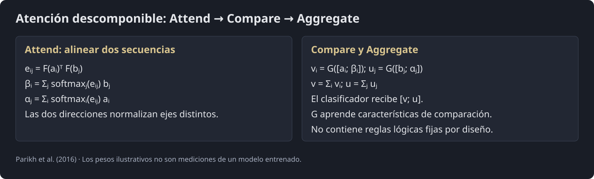
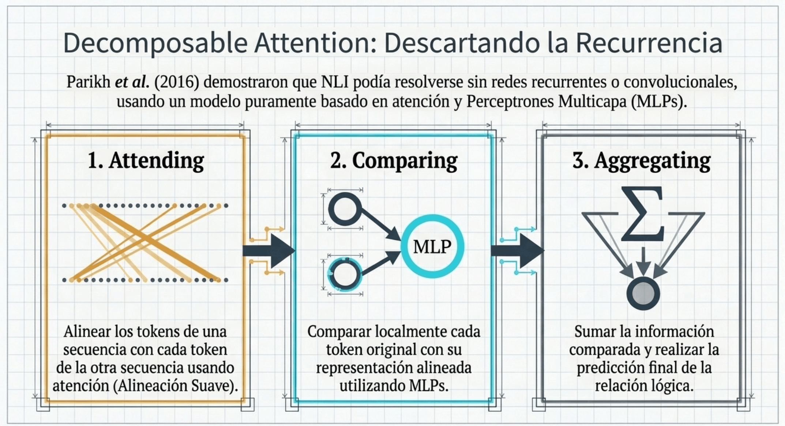
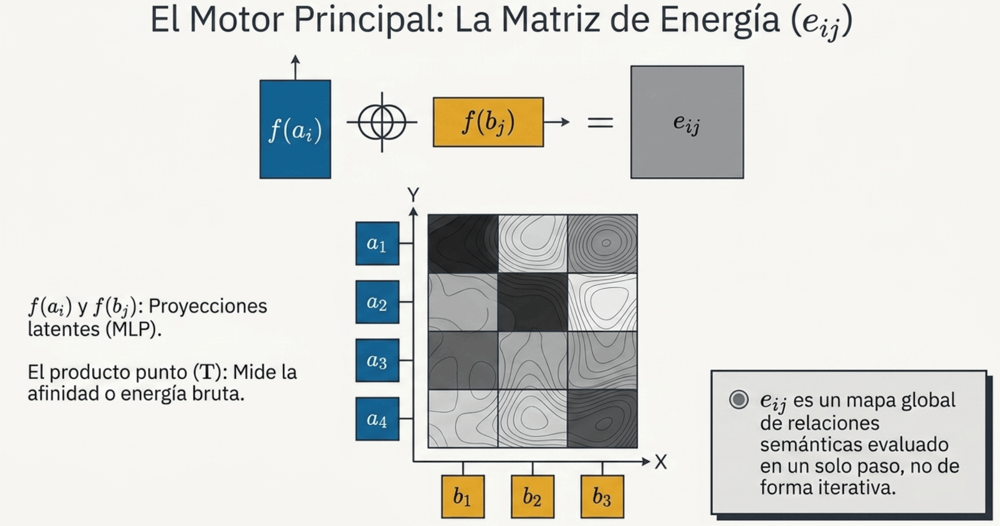
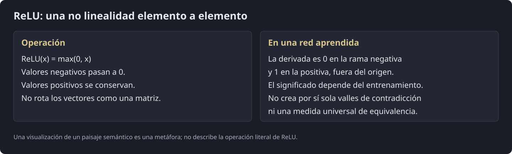
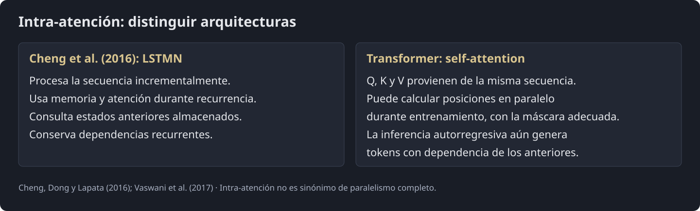
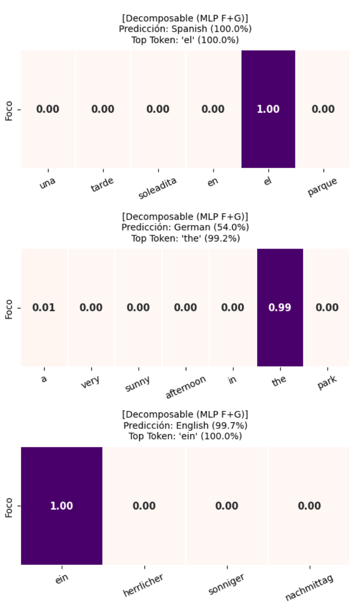
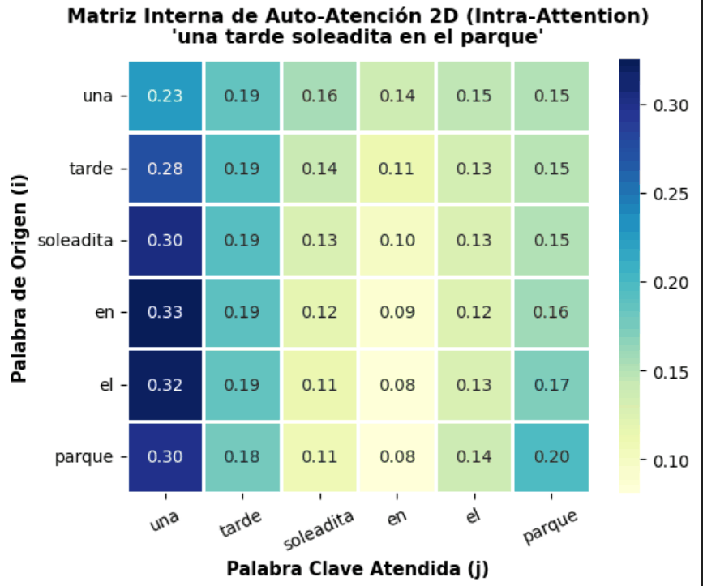

<!DOCTYPE html>

<html lang="es"><head><meta charset="utf-8"/><meta content="width=device-width,initial-scale=1" name="viewport"/><meta content="Portafolio docente de Jacobo León Juárez. Notebooks de NLP y reconocimiento del habla, con teoría, código y visualizaciones." name="description"/><title>09 · Mecanismos de Atención - Parte 4 (v2) · Jacobo León Juárez</title><link href="../assets/site.css" rel="stylesheet"/><link href="../assets/favicon.svg" rel="icon" type="image/svg+xml"/></head><body><a class="skip" href="#contenido">Saltar al contenido</a><div class="progress"></div><button aria-controls="library-nav" aria-expanded="false" id="menu">☰ Índice</button><aside id="library-nav"><a class="brand" href="../index.html">PORTAFOLIO DOCENTE</a><h2>Lenguaje natural<br/><span>y reconocimiento<br/>del habla</span></h2><p class="note">Jacobo León Juárez · 2026</p><a class="search-link" href="../index.html#buscar">⌕ Buscar en el libro</a><nav aria-label="Clases"><details class="chapter"><summary>02 · Word2Vec</summary><a class="" href="clase-02-1-introduccion-al-nlp-parte-1-word2vec.html">02 · Introducción al NLP  - Parte 1 - Word2Vec</a></details><details class="chapter"><summary>03 · GloVe</summary><a class="" href="clase-03-1-introduccion-al-nlp-parte-2-glove.html">03 · Introducción al NLP  - Parte 2 - GloVe</a></details><details class="chapter"><summary>04 · fastText</summary><a class="" href="clase-04-1-introduccion-al-nlp-parte-3-fasttext.html">04 · Introducción al NLP  - Parte 3 - FastText</a></details><details class="chapter"><summary>05 · Redes convolucionales</summary><a class="" href="clase-05-1-2-redes-convolucionales-v2.html">05 · Redes Convolucionales - V2</a><a class="" href="clase-05-1-cnn-teoria-completa.html">05 · CNN - Teoría Completa <small>Complemento</small></a><a class="" href="clase-05-1-1-redes-convolucionales-teoria-simplificada.html">05 · Redes Convolucionales Teoría Simplificada <small>Complemento</small></a><a class="" href="clase-05-1-2-redes-convolucionales-v2-recurso-2.html">05 · Redes Convolucionales - V2 <small>Complemento</small></a><a class="" href="clase-05-2-mecanismos-de-atencion.html">05 · Mecanismos de Atención <small>Complemento</small></a><a class="" href="clase-05-3-vision-por-computadora-cnns.html">05 · Visión Por Computadora - CNNs <small>Complemento</small></a><a class="" href="clase-05-3-1-vision-por-computadora-introduccion.html">05 · Visión Por Computadora - Introducción <small>Complemento</small></a><a class="" href="clase-05-3-2-vision-por-computadora-r-cnns.html">05 · Visión Por Computadora - R-CNNs <small>Complemento</small></a><a class="" href="clase-05-3-3-vision-por-computadora-yolov3.html">05 · Visión por Computadora - YOLOv3 <small>Complemento</small></a><a class="" href="clase-05-4-transformers-y-mecanismos-de-atencion.html">05 · Transformers y Mecanismos de Atención <small>Complemento</small></a><a class="" href="clase-05-4-1-transformers-teoria-simplificada.html">05 · Transformers - Teoría Simplificada <small>Complemento</small></a></details><details class="chapter"><summary>06 · Mecanismos de atención · Parte 1</summary><a class="" href="clase-06-6-mecanismos-de-atencion-parte-1-v2.html">06 · Mecanismos de Atención - Parte 1 (v2)</a><a class="" href="clase-06-6-mecanismos-de-atencion-parte-2-v2.html">06 · Mecanismos de Atención - Parte 2 (v2)</a></details><details class="chapter"><summary>07 · Mecanismos de atención · Parte 2</summary><a class="" href="clase-07-6-mecanismos-de-atencion-parte-2-v2.html">07 · Mecanismos de Atención - Parte 2 (v2)</a></details><details class="chapter"><summary>08 · Mecanismos de atención · Parte 3</summary><a class="" href="clase-08-6-mecanismos-de-atencion-parte-3-v2.html">08 · Mecanismos de Atención - Parte 3 (v2)</a></details><details class="chapter" open=""><summary>09 · Mecanismos de atención · Parte 4</summary><a aria-current="page" class="active" href="clase-09-6-mecanismos-de-atencion-parte-4-v2.html">09 · Mecanismos de Atención - Parte 4 (v2)</a><a class="" href="clase-09-6-1-transformers-teoria-simplificada.html">09 · Transformers - Teoría Simplificada</a></details><details class="chapter"><summary>10 · Introducción a Transformers · Parte 1</summary><a class="" href="clase-10-10-transformers-teoria-simplificada.html">10 · Transformers - Teoría Simplificada</a></details><details class="chapter"><summary>11 · Introducción a Transformers · Parte 2</summary><a class="" href="clase-11-clase-12-transformers-teoria-simplificada.html">11 · Transformers - Teoría Simplificada</a></details><details class="chapter"><summary>12 · GPT y codificación posicional · Parte 1</summary><a class="" href="clase-12-11-positional-encoding-pe-y-gpt-parte-1.html">12 · Positional Encoding (PE) y GPT - Parte 1</a></details><details class="chapter"><summary>13 · GPT y RoPE · Parte 2</summary><a class="" href="clase-13-13-introduccion-a-gpt-rope-parte-2.html">13 · Introducción a GPT - RoPE - Parte 2</a></details><details class="chapter"><summary>14 · Introducción a ASR · Parte 1</summary><a class="" href="clase-14-14-inotroduccion-a-asr-parte-1.html">14 · Introducción a ASR - Parte 1</a><a class="" href="clase-14-attentioncnn-ser-01.html">14 · Reconocimiento de emociones · AttentionCNN <small>Complemento</small></a><a class="" href="clase-14-1-2-speaker-diarization-test.html">14 · Diarización de hablantes · Prueba <small>Complemento</small></a></details><details class="chapter"><summary>15 · Introducción a ASR · Parte 2</summary><a class="" href="clase-15-15-introduccion-a-asr-parte-2.html">15 · Introducción a ASR - Parte 2</a></details><details class="chapter"><summary>16 · FFT Radix-2</summary><a class="" href="clase-16-16-radix-2.html">16 · Radix-2</a></details><details class="chapter" data-whisper=""><summary>17 · Whisper</summary><a href="clase-17-whisper-datasets-entrenamiento-inferencia.html">17 · Whisper: datasets, entrenamiento e inferencia</a></details></nav><div class="aside-links"><a href="https://github.com/leonCTFHTB/NLP-ASR-ML-DL-2026">GitHub ↗</a><a href="https://www.linkedin.com/in/lic-jacobo-leon-juarez/">LinkedIn ↗</a><a href="https://app.notion.com/p/leon-ctf/Portafolio-4034120b17c880048026ec0abf21f685">Notion ↗</a></div></aside><main id="contenido"><header class="hero"><div class="eyebrow">Procesamiento del Lenguaje Natural y Reconocimiento del Habla · Clase 09</div><h1>09 · Mecanismos de Atención - Parte 4 (v2)</h1><p class="note">Contenido convertido sin ejecutar Python. Se conservan las salidas guardadas; las figuras matemáticas sustituidas y los gráficos de PE están identificados en el registro de revisión.</p><div class="toolbar"><button id="expand">Mostrar código</button><button id="collapse">Plegar código</button><button id="print">Imprimir / PDF</button><a download="" href="clase-09-6-mecanismos-de-atencion-parte-4-v2.html" title="Requiere los recursos del repositorio para visualizarse sin conexión.">Descargar página HTML</a></div><details class="page-toc"><summary>En esta página</summary><a href="#seccion-0">Referencias</a><a href="#seccion-1">6. Mecanismos de Atención y Arquitectura Transformer</a><a href="#seccion-2">6.8. Decomposable Attention e Intra-Attention: Los Eslabones Perdidos hacia el Transformer</a><a href="#seccion-3">6.9. Decomposable Attention (Parikh et al., 2016)</a><a href="#seccion-4">6.9.1. Inferencia de Lenguaje Natural (NLI)</a><a href="#seccion-5">6.9.2. Arquitectura del Modelo: Tres Pasos hacia la Inferencia</a><a href="#seccion-13">6.10. Auto-Alineación e Intra-Attention (Cheng et al., 2016)</a><a href="#seccion-14">6.10.1. La Falencia de la Memoria Tradicional en LSTMs</a><a href="#seccion-15">6.10.2. Formulación Matemática de Intra-Attention</a><a href="#seccion-16">6.11. Implementación con PyTorch</a><a href="#seccion-17">Celda 1: Importación de librerías y configuración</a><a href="#seccion-18">Celda 2: Preparación del archivo de texto y entrenamiento de FastText (Meta)</a><a href="#seccion-19">Celda 3: Construcción del PyTorch Dataset con ft_model.get_word_vector</a><a href="#seccion-20">Celda 4.1.: Módulos de Atención Decomposable</a><a href="#seccion-28">Celda 4.2.: Módulos de Atención Intra-Attention</a><a href="#seccion-37">Celda 4.3.: Módulo de Atención</a><a href="#seccion-38">Celda 5: Entrenamiento de las 2 Variantes de Atención</a><a href="#seccion-39">Celda 6: Inferencia Comparativa</a></details></header><section class="cell" data-cell="0" id="celda-1"><h1 id="seccion-0"><span class="tone-accent"><strong>Referencias</strong></span></h1>
<ol>
<li>
<p><a href="https://drive.google.com/file/d/1fxbhCJ6f9nTZXvzaqboVLrMFQE1AlXZv/view?usp=share_link">Tesis de Grado</a></p>
</li>
<li>
<p><a href="https://d2l.ai/">Deep Learning Book</a></p>
</li>
</ol>
</section><section class="cell" data-cell="6" id="celda-7"><h1 id="seccion-1"><span class="tone-accent"><strong>6. Mecanismos de Atención y Arquitectura Transformer</strong></span></h1>
</section><section class="cell" data-cell="7" id="celda-8"><h2 id="seccion-2"><span class="tone-emphasis"><strong>6.8. Decomposable Attention e Intra-Attention: Los Eslabones Perdidos hacia el Transformer</strong></span></h2><p>Antes del Transformer existieron distintas formas de atención y de memoria. Parikh et al. (2016) propusieron un modelo de inferencia textual basado en atender, comparar y agregar, con una variante de intra-atención. Cheng et al. (2016) estudiaron atención sobre memoria durante la recurrencia.</p>
<p>Son antecedentes útiles para comparar diseños. No es correcto afirmar que toda atención anterior necesitaba RNN o que antes de esos trabajos no existía ninguna interacción dentro de una secuencia.</p>
<p class="note source-reference">Referencia: <a href="https://aclanthology.org/D16-1244/">Parikh et al. (2016)</a></p></section><section class="cell" data-cell="8" id="celda-9"><figure></figure></section><section class="cell" data-cell="9" id="celda-10"><blockquote>
<p>Para romper estas barreras, surgieron dos propuestas complementarias: <span class="tone-accent"><strong>Decomposable Attention</strong></span> (eliminando la recurrencia para acelerar el entrenamiento) e <span class="tone-accent"><strong>Intra-Attention</strong></span> (introduciendo la auto-atención interna en secuencias).</p>
</blockquote>
<pre><code>                      EVOLUCIÓN HACIA LA ATENCIÓN MODERNA
                                       │
            ┌──────────────────────────┴──────────────────────────┐
            ▼                                                     ▼
  DECOMPOSABLE ATTENTION (2016)                         INTRA-ATTENTION (2016)
  • Elimina RNNs/CNNs por completo                      • Introduce la Auto-Atención (Self-Attention)
  • Paralelismo masivo en GPU                           • Relaciona palabras dentro de la misma frase
  • Complejidad O(m + n) en parámetros                  • Resuelve anáforas y modificadores sintácticos
            │                                                     │
            └──────────────────────────┬──────────────────────────┘
                                       ▼
                       TRANSFORMER (Vaswani et al., 2017)
                       (MHSA: Self-Attention pura + Paralelismo QKV)
</code></pre>
</section><section class="cell" data-cell="10" data-reviewed-source="https://arxiv.org/abs/1706.03762" id="celda-11"><h2 id="seccion-3"><span class="tone-emphasis"><strong>6.9. Decomposable Attention (Parikh et al., 2016)</strong></span></h2><p>Las RNN tienen una dependencia recurrente entre pasos. Las CNN pueden procesar posiciones en paralelo dentro de una capa; su campo receptivo crece al apilar capas. La atención conecta posiciones mediante scores aprendidos. Son diseños distintos, sin una superioridad universal.</p>
<p class="note source-reference">Referencia: <a href="https://arxiv.org/abs/1706.03762">Vaswani et al. · Attention Is All You Need</a></p></section><section class="cell" data-cell="11" id="celda-12"><h3 id="seccion-4"><span class="tone-accent"><strong>6.9.1. Inferencia de Lenguaje Natural (NLI)</strong></span></h3>
<p>Para entender cómo funciona el modelo, recordemos en qué consiste NLI:
Dadas dos sentencias de texto, una <strong>Premisa (<math aria-label="A" display="inline" xmlns="http://www.w3.org/1998/Math/MathML"><mrow><mi>A</mi></mrow></math>)</strong> y una <strong>Hipótesis (<math aria-label="B" display="inline" xmlns="http://www.w3.org/1998/Math/MathML"><mrow><mi>B</mi></mrow></math>), el modelo debe clasificar su relación lógica en una de tres categorías</strong>:</p>
<ol>
<li>
<p><span class="tone-context"><strong>Entailment (Implicación):</strong></span> La hipótesis <span class="tone-emphasis"><strong>se deduce lógicamente de la premisa.</strong></span></p>
<ul>
<li>
<p><span class="tone-context"><strong>Premisa:</strong></span> <em><strong>"Un perro corre por un parque verde."</strong></em></p>
</li>
<li>
<p><span class="tone-context"><strong>Hipótesis:</strong></span> <em><strong>"Un animal está en movimiento al aire libre."</strong></em></p>
</li>
</ul>
</li>
<li>
<p><span class="tone-context"><strong>Contradiction (Contradicción):</strong> La hipótesis <span class="tone-emphasis"><strong>niega directamente la premisa</strong></span>.</span></p>
<ul>
<li>
<p><span class="tone-context"><strong>Premisa:</strong></span> <em><strong>"Un hombre duerme en el sofá."</strong></em></p>
</li>
<li>
<p><span class="tone-context"><strong>Hipótesis:</strong></span> <em><strong>"El hombre está corriendo una maratón."</strong></em></p>
</li>
</ul>
</li>
<li>
<p><span class="tone-context"><strong>Neutral (Neutro):</strong></span> <span class="tone-emphasis"><strong>No hay suficiente información para afirmar implicación o contradicción</strong></span>.</p>
<ul>
<li>
<p><strong>Premisa:</strong> <em><strong>"Un gato duerme al sol."</strong></em></p>
</li>
<li>
<p><strong>Hipótesis:</strong> <em><strong>"El gato es de color negro."</strong></em></p>
</li>
</ul>
</li>
</ol>
</section><section class="cell" data-cell="12" id="celda-13"><figure></figure></section><section class="cell" data-cell="13" id="celda-14"><h3 id="seccion-5"><span class="tone-accent"><strong>6.9.2. Arquitectura del Modelo: Tres Pasos hacia la Inferencia</strong></span></h3>
<p>En lugar de procesar las oraciones como un todo indivisible, <span class="tone-emphasis"><strong>el modelo descompone el problema en tres pasos que se entrenan de manera conjunta: Attending (Atender), Comparing (Comparar) y Aggregating (Agregar)</strong>.</span></p>
<pre><code>       [ Premisa A ]                          [ Hipótesis B ]
             │                                       │
             ▼                                       ▼
     ┌───────────────┐                       ┌───────────────┐
     │  Embedding    │                       │  Embedding    │
     └───────┬───────┘                       └───────┬───────┘
             │                                       │
             ▼                                       ▼
    1. ATTENDING ────────────────────────────────────► Alineación Suave (Soft-Alignment)
             │                                       │ (Cálculo de matrices α y β)
             ▼                                       ▼
    2. COMPARING ──► g([a_i, β_i])          g([b_j, α_j]) ──► Vectores de comparación local
             │                                       │
             ▼                                       ▼
    3. AGGREGATING ──► Suma Σ(v_A,i)        Suma Σ(v_B,j) ──► Consolidación global
             │                                       │
             └───────────────────┬───────────────────┘
                                 ▼
                     Concatenación [ v_A ; v_B ]
                                 │
                                 ▼
                             MLP h(x) ──► [ Entailment | Contradiction | Neutral ]
</code></pre>
</section><section class="cell" data-cell="14" id="celda-15"><figure></figure></section><section class="cell" data-cell="15" id="celda-16"><h4 id="seccion-6"><span class="tone-emphasis"><strong>6.9.2.1. Fase 1: Attending (Atender y Alinear)</strong></span></h4>
</section><section class="cell" data-cell="16" id="celda-17"><p>En lugar de pasar <math aria-label="a_i" display="inline" xmlns="http://www.w3.org/1998/Math/MathML"><mrow><msub><mi>a</mi><mi>i</mi></msub></mrow></math> y <math aria-label="b_j" display="inline" xmlns="http://www.w3.org/1998/Math/MathML"><mrow><msub><mi>b</mi><mi>j</mi></msub></mrow></math> por una LSTM, <span class="tone-emphasis"><strong>cada vector de palabra se proyecta primero de forma no lineal mediante una red Feed-Forward compartida <math aria-label="F" display="inline" xmlns="http://www.w3.org/1998/Math/MathML"><mrow><mi>F</mi></mrow></math></strong>:</span></p>
<p><math aria-label="\bar{a}_i = F(a_i) = \text{MLP}(a_i) \in \mathbb{R}^{d'}" display="block" xmlns="http://www.w3.org/1998/Math/MathML"><mrow><msub><mover><mrow><mi>a</mi></mrow><mo stretchy="true">¯</mo></mover><mi>i</mi></msub><mo>=</mo><mi>F</mi><mo stretchy="false">(</mo><msub><mi>a</mi><mi>i</mi></msub><mo stretchy="false">)</mo><mo>=</mo><mtext>MLP</mtext><mo stretchy="false">(</mo><msub><mi>a</mi><mi>i</mi></msub><mo stretchy="false">)</mo><mo>∈</mo><msup><mi>ℝ</mi><mrow><msup><mi>d</mi><mi>′</mi></msup></mrow></msup></mrow></math>
<math aria-label="\bar{b}_j = F(b_j) = \text{MLP}(b_j) \in \mathbb{R}^{d'}" display="block" xmlns="http://www.w3.org/1998/Math/MathML"><mrow><msub><mover><mrow><mi>b</mi></mrow><mo stretchy="true">¯</mo></mover><mi>j</mi></msub><mo>=</mo><mi>F</mi><mo stretchy="false">(</mo><msub><mi>b</mi><mi>j</mi></msub><mo stretchy="false">)</mo><mo>=</mo><mtext>MLP</mtext><mo stretchy="false">(</mo><msub><mi>b</mi><mi>j</mi></msub><mo stretchy="false">)</mo><mo>∈</mo><msup><mi>ℝ</mi><mrow><msup><mi>d</mi><mi>′</mi></msup></mrow></msup></mrow></math></p>
<p>La <span class="tone-emphasis"><strong>matriz de afinidad o energía no normalizada <math aria-label="e_{ij}" display="inline" xmlns="http://www.w3.org/1998/Math/MathML"><mrow><msub><mi>e</mi><mrow><mi>i</mi><mi>j</mi></mrow></msub></mrow></math> entre cada palabra <math aria-label="i" display="inline" xmlns="http://www.w3.org/1998/Math/MathML"><mrow><mi>i</mi></mrow></math> de la premisa y cada palabra <math aria-label="j" display="inline" xmlns="http://www.w3.org/1998/Math/MathML"><mrow><mi>j</mi></mrow></math> de la hipótesis se calcula mediante el producto punto de sus proyecciones</strong>:</span></p>
<p><math aria-label="e_{ij} = F(a_i)^\top F(b_j)" display="block" xmlns="http://www.w3.org/1998/Math/MathML"><mrow><msub><mi>e</mi><mrow><mi>i</mi><mi>j</mi></mrow></msub><mo>=</mo><mi>F</mi><mo stretchy="false">(</mo><msub><mi>a</mi><mi>i</mi></msub><msup><mo stretchy="false">)</mo><mo>⊤</mo></msup><mi>F</mi><mo stretchy="false">(</mo><msub><mi>b</mi><mi>j</mi></msub><mo stretchy="false">)</mo></mrow></math></p>
</section><section class="cell" data-cell="17" id="celda-18"><figure></figure></section><section class="cell" data-cell="18" id="celda-19"><h5 id="seccion-7"><span class="tone-accent"><strong>1. La Matriz de Afinidad / Energía (<math aria-label="e_{ij}" display="inline" xmlns="http://www.w3.org/1998/Math/MathML"><mrow><msub><mi>e</mi><mrow><mi>i</mi><mi>j</mi></mrow></msub></mrow></math>)</strong></span></h5>
<p>Antes de alinear, <span class="tone-emphasis"> <strong>el modelo calcula qué tanta relación semántica tiene cada palabra <math aria-label="a_i" display="inline" xmlns="http://www.w3.org/1998/Math/MathML"><mrow><msub><mi>a</mi><mi>i</mi></msub></mrow></math> de la premisa con cada palabra <math aria-label="b_j" display="inline" xmlns="http://www.w3.org/1998/Math/MathML"><mrow><msub><mi>b</mi><mi>j</mi></msub></mrow></math> de la hipótesis</strong>:</span></p>
<p><math aria-label="e_{ij} = f(a_i)^\top f(b_j)" display="block" xmlns="http://www.w3.org/1998/Math/MathML"><mrow><msub><mi>e</mi><mrow><mi>i</mi><mi>j</mi></mrow></msub><mo>=</mo><mi>f</mi><mo stretchy="false">(</mo><msub><mi>a</mi><mi>i</mi></msub><msup><mo stretchy="false">)</mo><mo>⊤</mo></msup><mi>f</mi><mo stretchy="false">(</mo><msub><mi>b</mi><mi>j</mi></msub><mo stretchy="false">)</mo></mrow></math></p>
<ul>
<li>
<p>Si la premisa tiene <math aria-label="m" display="inline" xmlns="http://www.w3.org/1998/Math/MathML"><mrow><mi>m</mi></mrow></math> palabras y la hipótesis <math aria-label="n" display="inline" xmlns="http://www.w3.org/1998/Math/MathML"><mrow><mi>n</mi></mrow></math>, <math aria-label="e" display="inline" xmlns="http://www.w3.org/1998/Math/MathML"><mrow><mi>e</mi></mrow></math> es una matriz de tamaño <math aria-label="m \times n" display="inline" xmlns="http://www.w3.org/1998/Math/MathML"><mrow><mi>m</mi><mo>×</mo><mi>n</mi></mrow></math>.</p>
</li>
<li>
<p>La celda <math aria-label="e_{ij}" display="inline" xmlns="http://www.w3.org/1998/Math/MathML"><mrow><msub><mi>e</mi><mrow><mi>i</mi><mi>j</mi></mrow></msub></mrow></math> <span class="tone-emphasis"> <strong>contiene la compatibilidad bruta entre la palabra <math aria-label="i" display="inline" xmlns="http://www.w3.org/1998/Math/MathML"><mrow><mi>i</mi></mrow></math>-ésima de la premisa y la <math aria-label="j" display="inline" xmlns="http://www.w3.org/1998/Math/MathML"><mrow><mi>j</mi></mrow></math>-ésima de la hipótesis</strong>.</span></p>
</li>
</ul>
</section><section class="cell" data-cell="19" id="celda-20"><figure></figure></section><section class="cell" data-cell="20" id="celda-21"><h5 id="seccion-8"><span class="tone-accent"><strong>2. Desglose de las Dos Direcciones</strong></span></h5>
</section><section class="cell" data-cell="21" id="celda-22"><figure></figure></section><section class="cell" data-cell="22" id="celda-23"><p>A partir de esta <span class="tone-emphasis"><strong>matriz de correlación completa de tamaño <math aria-label="m \times n" display="inline" xmlns="http://www.w3.org/1998/Math/MathML"><mrow><mi>m</mi><mo>×</mo><mi>n</mi></mrow></math>, se calculan dos alineaciones suaves bidireccionales mediante la función Softmax</strong>:</span></p>
<p><span class="tone-context"><strong>1. Premisa hacia Hipótesis (<math aria-label="\beta_i" display="inline" xmlns="http://www.w3.org/1998/Math/MathML"><mrow><msub><mi>β</mi><mi>i</mi></msub></mrow></math>): El "doble" de <math aria-label="a_i" display="inline" xmlns="http://www.w3.org/1998/Math/MathML"><mrow><msub><mi>a</mi><mi>i</mi></msub></mrow></math> en la Hipótesis</strong></span></p>
<ul>
<li>
<p><span class="tone-context"><strong>Objetivo:</strong></span> Para la palabra <math aria-label="a_i" display="inline" xmlns="http://www.w3.org/1998/Math/MathML"><mrow><msub><mi>a</mi><mi>i</mi></msub></mrow></math> de la premisa, <span class="tone-emphasis"><strong>construir un vector <math aria-label="\beta_i" display="inline" xmlns="http://www.w3.org/1998/Math/MathML"><mrow><msub><mi>β</mi><mi>i</mi></msub></mrow></math> que condense qué partes de la hipótesis se refieren a ella.</strong></span></p>
</li>
<li>
<p><span class="tone-context"><strong>Mecánica:</strong></span> Se <span class="tone-emphasis"><strong>toma la fila <math aria-label="i" display="inline" xmlns="http://www.w3.org/1998/Math/MathML"><mrow><mi>i</mi></mrow></math> de la matriz <math aria-label="e" display="inline" xmlns="http://www.w3.org/1998/Math/MathML"><mrow><mi>e</mi></mrow></math></strong></span> (todas las <strong>afinidades de <math aria-label="a_i" display="inline" xmlns="http://www.w3.org/1998/Math/MathML"><mrow><msub><mi>a</mi><mi>i</mi></msub></mrow></math> con las <math aria-label="n" display="inline" xmlns="http://www.w3.org/1998/Math/MathML"><mrow><mi>n</mi></mrow></math> palabras de la hipótesis</strong>) y <span class="tone-emphasis"><strong>se aplica <math aria-label="\text{Softmax}" display="inline" xmlns="http://www.w3.org/1998/Math/MathML"><mrow><mtext>Softmax</mtext></mrow></math> a lo largo de las columnas</strong></span> (<math aria-label="j=1 \dots n" display="inline" xmlns="http://www.w3.org/1998/Math/MathML"><mrow><mi>j</mi><mo>=</mo><mn>1</mn><mo>…</mo><mi>n</mi></mrow></math>).</p>
</li>
<li>
<p><span class="tone-context"><strong>Resultado:</strong></span> Los coeficientes <math aria-label="\text{softmax}_j(e_{ij})" display="inline" xmlns="http://www.w3.org/1998/Math/MathML"><mrow><msub><mtext>softmax</mtext><mi>j</mi></msub><mo stretchy="false">(</mo><msub><mi>e</mi><mrow><mi>i</mi><mi>j</mi></mrow></msub><mo stretchy="false">)</mo></mrow></math> suman <math aria-label="1.0" display="inline" xmlns="http://www.w3.org/1998/Math/MathML"><mrow><mn>1.0</mn></mrow></math>. Se hace una <span class="tone-emphasis"><strong>suma ponderada de los vectores de la hipótesis <math aria-label="b_j" display="inline" xmlns="http://www.w3.org/1998/Math/MathML"><mrow><msub><mi>b</mi><mi>j</mi></msub></mrow></math>:</strong></span></p>
<p><math aria-label="\begin{align}
    \beta_i = \sum_{j=1}^n \text{softmax}_j(e_{ij}) b_j
    \end{align}" display="block" xmlns="http://www.w3.org/1998/Math/MathML"><mrow><mrow><msub><mi>β</mi><mi>i</mi></msub><mo>=</mo><munderover><mo>∑</mo><mrow><mi>j</mi><mo>=</mo><mn>1</mn></mrow><mi>n</mi></munderover><msub><mtext>softmax</mtext><mi>j</mi></msub><mo stretchy="false">(</mo><msub><mi>e</mi><mrow><mi>i</mi><mi>j</mi></mrow></msub><mo stretchy="false">)</mo><msub><mi>b</mi><mi>j</mi></msub></mrow></mrow></math></p>
</li>
</ul>
<hr/>
<p>Al observar la ecuación matemática con la que se calcula <math aria-label="\beta_i" display="inline" xmlns="http://www.w3.org/1998/Math/MathML"><mrow><msub><mi>β</mi><mi>i</mi></msub></mrow></math>:</p>
<p><math aria-label="\beta_i = \sum_{j=1}^n \underbrace{\left( \frac{\exp(e_{ij})}{\sum_{k=1}^n \exp(e_{ik})} \right)}_{\text{Número real (Escalar } \in [0, 1]\text{)}} \cdot \underbrace{\mathbf{b}_j}_{\text{Vector } \in \mathbb{R}^d}" display="block" xmlns="http://www.w3.org/1998/Math/MathML"><mrow><msub><mi>β</mi><mi>i</mi></msub><mo>=</mo><munderover><mo>∑</mo><mrow><mi>j</mi><mo>=</mo><mn>1</mn></mrow><mi>n</mi></munderover><munder><munder><mrow><mrow><mo fence="true" form="prefix" stretchy="true">(</mo><mfrac><mrow><mi>exp</mi><mo stretchy="false">(</mo><msub><mi>e</mi><mrow><mi>i</mi><mi>j</mi></mrow></msub><mo stretchy="false">)</mo></mrow><mrow><msubsup><mo>∑</mo><mrow><mi>k</mi><mo>=</mo><mn>1</mn></mrow><mi>n</mi></msubsup><mi>exp</mi><mo stretchy="false">(</mo><msub><mi>e</mi><mrow><mi>i</mi><mi>k</mi></mrow></msub><mo stretchy="false">)</mo></mrow></mfrac><mo fence="true" form="postfix" stretchy="true">)</mo></mrow></mrow><mo>⏟</mo></munder><mrow><mtext>Número real (Escalar </mtext><mo>∈</mo><mo stretchy="false">[</mo><mn>0</mn><mo>,</mo><mn>1</mn><mo stretchy="false">]</mo><mtext>)</mtext></mrow></munder><mo>·</mo><munder><munder><mrow><msub><mi>𝐛</mi><mi>j</mi></msub></mrow><mo>⏟</mo></munder><mrow><mtext>Vector </mtext><mo>∈</mo><msup><mi>ℝ</mi><mi>d</mi></msup></mrow></munder></mrow></math></p>
<ol>
<li>
<p><span class="tone-context"><strong>El término de la Softmax SÍ es un número (escalar):</strong></span> La fracción exponencial normalizada genera un coeficiente probabilístico entre <math aria-label="0.0" display="inline" xmlns="http://www.w3.org/1998/Math/MathML"><mrow><mn>0.0</mn></mrow></math> y <math aria-label="1.0" display="inline" xmlns="http://www.w3.org/1998/Math/MathML"><mrow><mn>1.0</mn></mrow></math> que mide cuánta atención se le presta a la palabra <math aria-label="j" display="inline" xmlns="http://www.w3.org/1998/Math/MathML"><mrow><mi>j</mi></mrow></math>.</p>
</li>
<li>
<p><span class="tone-context"><strong><math aria-label="\mathbf{b}_j" display="inline" xmlns="http://www.w3.org/1998/Math/MathML"><mrow><msub><mi>𝐛</mi><mi>j</mi></msub></mrow></math> es un vector:</strong></span> Corresponde al embedding o representación latente de la palabra <math aria-label="j" display="inline" xmlns="http://www.w3.org/1998/Math/MathML"><mrow><mi>j</mi></mrow></math>-ésima en la hipótesis (dimensión <math aria-label="d" display="inline" xmlns="http://www.w3.org/1998/Math/MathML"><mrow><mi>d</mi></mrow></math>).</p>
</li>
<li>
<p><span class="tone-context"><strong>Escalar <math aria-label="\times" display="inline" xmlns="http://www.w3.org/1998/Math/MathML"><mrow><mo>×</mo></mrow></math> Vector = Vector:</strong></span> Al multiplicar el número obtenido por la Softmax por el vector de la palabra <math aria-label="\mathbf{b}_j" display="inline" xmlns="http://www.w3.org/1998/Math/MathML"><mrow><msub><mi>𝐛</mi><mi>j</mi></msub></mrow></math>, se obtiene un vector reescalado.</p>
</li>
<li>
<p><span class="tone-context"><strong>Sumatoria = Vector Resultante (<math aria-label="\beta_i" display="inline" xmlns="http://www.w3.org/1998/Math/MathML"><mrow><msub><mi>β</mi><mi>i</mi></msub></mrow></math>):</strong></span> La suma de todos esos vectores ponderados produce un nuevo vector en <math aria-label="\mathbb{R}^d" display="inline" xmlns="http://www.w3.org/1998/Math/MathML"><mrow><msup><mi>ℝ</mi><mi>d</mi></msup></mrow></math>. A ese vector de resumen completo es al que Parikh et al. denominaron formalmente <math aria-label="\beta_i" display="inline" xmlns="http://www.w3.org/1998/Math/MathML"><mrow><msub><mi>β</mi><mi>i</mi></msub></mrow></math>.</p>
</li>
</ol>
<p><span class="tone-emphasis"> <strong>Lo mismo ocurre en la dirección inversa para <math aria-label="\alpha_j" display="inline" xmlns="http://www.w3.org/1998/Math/MathML"><mrow><msub><mi>α</mi><mi>j</mi></msub></mrow></math>:</strong></span></p>
<p><math aria-label="\alpha_j = \sum_{i=1}^m \underbrace{\text{softmax}_i(e_{ij})}_{\text{Número (Escalar)}} \cdot \underbrace{\mathbf{a}_i}_{\text{Vector } \in \mathbb{R}^d} \quad \Longrightarrow \quad \alpha_j \in \mathbb{R}^d" display="block" xmlns="http://www.w3.org/1998/Math/MathML"><mrow><msub><mi>α</mi><mi>j</mi></msub><mo>=</mo><munderover><mo>∑</mo><mrow><mi>i</mi><mo>=</mo><mn>1</mn></mrow><mi>m</mi></munderover><munder><munder><mrow><msub><mtext>softmax</mtext><mi>i</mi></msub><mo stretchy="false">(</mo><msub><mi>e</mi><mrow><mi>i</mi><mi>j</mi></mrow></msub><mo stretchy="false">)</mo></mrow><mo>⏟</mo></munder><mrow><mtext>Número (Escalar)</mtext></mrow></munder><mo>·</mo><munder><munder><mrow><msub><mi>𝐚</mi><mi>i</mi></msub></mrow><mo>⏟</mo></munder><mrow><mtext>Vector </mtext><mo>∈</mo><msup><mi>ℝ</mi><mi>d</mi></msup></mrow></munder><mspace width="1em"></mspace><mi>⟹</mi><mspace width="1em"></mspace><msub><mi>α</mi><mi>j</mi></msub><mo>∈</mo><msup><mi>ℝ</mi><mi>d</mi></msup></mrow></math></p>
</section><section class="cell" data-cell="23" id="celda-24"><figure></figure></section><section class="cell" data-cell="24" id="celda-25"><p><span class="tone-context"><strong>2. Hipótesis hacia Premisa (<math aria-label="\alpha_j" display="inline" xmlns="http://www.w3.org/1998/Math/MathML"><mrow><msub><mi>α</mi><mi>j</mi></msub></mrow></math>): El "doble" de <math aria-label="b_j" display="inline" xmlns="http://www.w3.org/1998/Math/MathML"><mrow><msub><mi>b</mi><mi>j</mi></msub></mrow></math> en la Premisa</strong>&lt;&gt;/font</span></p>
<ul>
<li>
<p><span class="tone-context"><strong>Objetivo:</strong></span> Para la palabra <math aria-label="b_j" display="inline" xmlns="http://www.w3.org/1998/Math/MathML"><mrow><msub><mi>b</mi><mi>j</mi></msub></mrow></math> de la hipótesis, <span class="tone-emphasis"><strong>armar un vector <math aria-label="\alpha_j" display="inline" xmlns="http://www.w3.org/1998/Math/MathML"><mrow><msub><mi>α</mi><mi>j</mi></msub></mrow></math> con el contexto equivalente dentro de la premisa.</strong></span></p>
</li>
<li>
<p><span class="tone-context"><strong>Mecánica:</strong></span> Se <span class="tone-emphasis"><strong>toma la columna <math aria-label="j" display="inline" xmlns="http://www.w3.org/1998/Math/MathML"><mrow><mi>j</mi></mrow></math> de la matriz <math aria-label="e" display="inline" xmlns="http://www.w3.org/1998/Math/MathML"><mrow><mi>e</mi></mrow></math></strong></span> (afinidades de todas las palabras de la premisa con <math aria-label="b_j" display="inline" xmlns="http://www.w3.org/1998/Math/MathML"><mrow><msub><mi>b</mi><mi>j</mi></msub></mrow></math>) y se <span class="tone-emphasis">aplica <math aria-label="\text{Softmax}" display="inline" xmlns="http://www.w3.org/1998/Math/MathML"><mrow><mtext>Softmax</mtext></mrow></math> a lo largo de las filas (<math aria-label="i=1 \dots m" display="inline" xmlns="http://www.w3.org/1998/Math/MathML"><mrow><mi>i</mi><mo>=</mo><mn>1</mn><mo>…</mo><mi>m</mi></mrow></math>).</span></p>
</li>
<li>
<p><span class="tone-context"><strong>Resultado:</strong></span>
<math aria-label="\begin{align}
        \alpha_j = \sum_{i=1}^m \text{softmax}_i(e_{ij}) a_i
    \end{align}" display="block" xmlns="http://www.w3.org/1998/Math/MathML"><mrow><mrow><msub><mi>α</mi><mi>j</mi></msub><mo>=</mo><munderover><mo>∑</mo><mrow><mi>i</mi><mo>=</mo><mn>1</mn></mrow><mi>m</mi></munderover><msub><mtext>softmax</mtext><mi>i</mi></msub><mo stretchy="false">(</mo><msub><mi>e</mi><mrow><mi>i</mi><mi>j</mi></mrow></msub><mo stretchy="false">)</mo><msub><mi>a</mi><mi>i</mi></msub></mrow></mrow></math></p>
</li>
</ul>
</section><section class="cell" data-cell="25" id="celda-26"><figure></figure></section><section class="cell" data-cell="26" data-reviewed-source="https://aclanthology.org/D16-1244/" id="celda-27"><h5 id="seccion-9"><span class="tone-accent"><strong>3. Ejemplo Intuitivo</strong></span></h5><p>Ejemplo hipotético: la premisa «Un perro marrón corre en el césped» contiene siete tokens si se separa por espacios. La hipótesis y la premisa se alinean mediante softmax por fila; los pesos deben sumar uno sobre posiciones válidas. Un número ilustrativo no es una medición del modelo.</p>
<p class="note source-reference">Referencia: <a href="https://aclanthology.org/D16-1244/">Parikh et al. · Decomposable attention</a></p></section><section class="cell" data-cell="27" id="celda-28"><figure></figure></section><section class="cell" data-cell="28" id="celda-29"><hr/>
<h4 id="seccion-10"><span class="tone-emphasis"><strong>6.9.2.2. Fase 2: Comparing (Comparación Local No Lineal)</strong></span></h4>
</section><section class="cell" data-cell="29" id="celda-30"><figure></figure></section><section class="cell" data-cell="30" id="celda-31"><p>Una vez obtenidas las representaciones alineadas (<math aria-label="\beta_i" display="inline" xmlns="http://www.w3.org/1998/Math/MathML"><mrow><msub><mi>β</mi><mi>i</mi></msub></mrow></math> y <math aria-label="\alpha_j" display="inline" xmlns="http://www.w3.org/1998/Math/MathML"><mrow><msub><mi>α</mi><mi>j</mi></msub></mrow></math>), <span class="tone-emphasis"><strong>se comparan localmente los vectores originales con sus pares alineados correspondientes concatenándolos y procesándolos a través de otra red Feed-Forward <math aria-label="G" display="inline" xmlns="http://www.w3.org/1998/Math/MathML"><mrow><mi>G</mi></mrow></math></strong>:</span></p>
<p><math aria-label="\begin{align}
    v_{1, i} = G([a_i; \beta_i]) \quad \forall i \in \{1, \dots, m\}\\
    v_{2, j} = G([b_j; \alpha_j]) \quad \forall j \in \{1, \dots, n\}
   \end{align}" display="block" xmlns="http://www.w3.org/1998/Math/MathML"><mrow><mrow><msub><mi>v</mi><mrow><mn>1</mn><mo>,</mo><mi>i</mi></mrow></msub><mo>=</mo><mi>G</mi><mo stretchy="false">(</mo><mo stretchy="false">[</mo><msub><mi>a</mi><mi>i</mi></msub><mi>;</mi><msub><mi>β</mi><mi>i</mi></msub><mo stretchy="false">]</mo><mo stretchy="false">)</mo><mspace width="1em"></mspace><mo>∀</mo><mi>i</mi><mo>∈</mo><mo stretchy="false">{</mo><mn>1</mn><mo>,</mo><mo>…</mo><mo>,</mo><mi>m</mi><mo stretchy="false">}</mo><mspace linebreak="newline"></mspace><msub><mi>v</mi><mrow><mn>2</mn><mo>,</mo><mi>j</mi></mrow></msub><mo>=</mo><mi>G</mi><mo stretchy="false">(</mo><mo stretchy="false">[</mo><msub><mi>b</mi><mi>j</mi></msub><mi>;</mi><msub><mi>α</mi><mi>j</mi></msub><mo stretchy="false">]</mo><mo stretchy="false">)</mo><mspace width="1em"></mspace><mo>∀</mo><mi>j</mi><mo>∈</mo><mo stretchy="false">{</mo><mn>1</mn><mo>,</mo><mo>…</mo><mo>,</mo><mi>n</mi><mo stretchy="false">}</mo></mrow></mrow></math></p>
<p>Donde:</p>
<ul>
<li><math aria-label="[a_i; \beta_i] \in \mathbb{R}^{2d}" display="inline" xmlns="http://www.w3.org/1998/Math/MathML"><mrow><mo stretchy="false">[</mo><msub><mi>a</mi><mi>i</mi></msub><mi>;</mi><msub><mi>β</mi><mi>i</mi></msub><mo stretchy="false">]</mo><mo>∈</mo><msup><mi>ℝ</mi><mrow><mn>2</mn><mi>d</mi></mrow></msup></mrow></math> es la <span class="tone-emphasis"><strong>concatenación de la palabra original y su vector de alineación semántica.</strong></span></li>
</ul>
</section><section class="cell" data-cell="31" id="celda-32"><figure></figure></section><section class="cell" data-cell="32" id="celda-33"><ul>
<li>
<p><math aria-label="G" display="inline" xmlns="http://www.w3.org/1998/Math/MathML"><mrow><mi>G</mi></mrow></math> es un <span class="tone-emphasis"><strong>perceptrón multicapa con capas lineales y activaciones ReLU que mapea la comparación a un vector latente</strong></span> <math aria-label="v_{1, i}, v_{2, j} \in \mathbb{R}^{d_g}" display="inline" xmlns="http://www.w3.org/1998/Math/MathML"><mrow><msub><mi>v</mi><mrow><mn>1</mn><mo>,</mo><mi>i</mi></mrow></msub><mo>,</mo><msub><mi>v</mi><mrow><mn>2</mn><mo>,</mo><mi>j</mi></mrow></msub><mo>∈</mo><msup><mi>ℝ</mi><mrow><msub><mi>d</mi><mi>g</mi></msub></mrow></msup></mrow></math>:</p>
<ul>
<li>
<p><math aria-label="v_{1, i} = g([a_i \,;\, \beta_i]) = W_2 \, \text{ReLU}\left(W_1 [a_i \,;\, \beta_i] + b_1\right) + b_2" display="block" xmlns="http://www.w3.org/1998/Math/MathML"><mrow><msub><mi>v</mi><mrow><mn>1</mn><mo>,</mo><mi>i</mi></mrow></msub><mo>=</mo><mi>g</mi><mo stretchy="false">(</mo><mo stretchy="false">[</mo><msub><mi>a</mi><mi>i</mi></msub><mspace width="0.167em"></mspace><mi>;</mi><mspace width="0.167em"></mspace><msub><mi>β</mi><mi>i</mi></msub><mo stretchy="false">]</mo><mo stretchy="false">)</mo><mo>=</mo><msub><mi>W</mi><mn>2</mn></msub><mspace width="0.167em"></mspace><mtext>ReLU</mtext><mrow><mo fence="true" form="prefix" stretchy="true">(</mo><msub><mi>W</mi><mn>1</mn></msub><mo stretchy="false">[</mo><msub><mi>a</mi><mi>i</mi></msub><mspace width="0.167em"></mspace><mi>;</mi><mspace width="0.167em"></mspace><msub><mi>β</mi><mi>i</mi></msub><mo stretchy="false">]</mo><mo>+</mo><msub><mi>b</mi><mn>1</mn></msub><mo fence="true" form="postfix" stretchy="true">)</mo></mrow><mo>+</mo><msub><mi>b</mi><mn>2</mn></msub></mrow></math></p>
</li>
<li>
<p><math aria-label="v_{2, j} = g([b_j \,;\, \alpha_j]) = W_2 \, \text{ReLU}\left(W_1 [b_j \,;\, \alpha_j] + b_1\right) + b_2" display="block" xmlns="http://www.w3.org/1998/Math/MathML"><mrow><msub><mi>v</mi><mrow><mn>2</mn><mo>,</mo><mi>j</mi></mrow></msub><mo>=</mo><mi>g</mi><mo stretchy="false">(</mo><mo stretchy="false">[</mo><msub><mi>b</mi><mi>j</mi></msub><mspace width="0.167em"></mspace><mi>;</mi><mspace width="0.167em"></mspace><msub><mi>α</mi><mi>j</mi></msub><mo stretchy="false">]</mo><mo stretchy="false">)</mo><mo>=</mo><msub><mi>W</mi><mn>2</mn></msub><mspace width="0.167em"></mspace><mtext>ReLU</mtext><mrow><mo fence="true" form="prefix" stretchy="true">(</mo><msub><mi>W</mi><mn>1</mn></msub><mo stretchy="false">[</mo><msub><mi>b</mi><mi>j</mi></msub><mspace width="0.167em"></mspace><mi>;</mi><mspace width="0.167em"></mspace><msub><mi>α</mi><mi>j</mi></msub><mo stretchy="false">]</mo><mo>+</mo><msub><mi>b</mi><mn>1</mn></msub><mo fence="true" form="postfix" stretchy="true">)</mo></mrow><mo>+</mo><msub><mi>b</mi><mn>2</mn></msub></mrow></math></p>
</li>
</ul>
</li>
</ul>
</section><section class="cell" data-cell="33" id="celda-34"><figure></figure></section><section class="cell" data-cell="34" id="celda-35"><ul>
<li>Al no existir conexiones temporales recurrentes entre <math aria-label="i" display="inline" xmlns="http://www.w3.org/1998/Math/MathML"><mrow><mi>i</mi></mrow></math> e <math aria-label="i+1" display="inline" xmlns="http://www.w3.org/1998/Math/MathML"><mrow><mi>i</mi><mo>+</mo><mn>1</mn></mrow></math>, <span class="tone-emphasis"><strong>todas las comparaciones <math aria-label="v_{1, i}" display="inline" xmlns="http://www.w3.org/1998/Math/MathML"><mrow><msub><mi>v</mi><mrow><mn>1</mn><mo>,</mo><mi>i</mi></mrow></msub></mrow></math> y <math aria-label="v_{2, j}" display="inline" xmlns="http://www.w3.org/1998/Math/MathML"><mrow><msub><mi>v</mi><mrow><mn>2</mn><mo>,</mo><mi>j</mi></mrow></msub></mrow></math> se ejecutan en paralelo en la GPU</strong>.</span></li>
</ul>
</section><section class="cell" data-cell="35" id="celda-36"><h5 id="seccion-11"><span class="tone-accent"><strong>1. Ejemplo Intuitivo</strong></span></h5>
<p>Supongamos que el modelo debe <span class="tone-emphasis"> <strong>determinar si la premisa y la hipótesis dicen lo mismo o se contradicen a partir de estas dos oraciones</strong>:</span></p>
<ul>
<li>
<p><span class="tone-context"><strong>Premisa (<math aria-label="A" display="inline" xmlns="http://www.w3.org/1998/Math/MathML"><mrow><mi>A</mi></mrow></math>):</strong></span> <em>"El <strong>perro</strong> <strong>duerme</strong> en el jardín"</em></p>
</li>
<li>
<p><span class="tone-context"><strong>Hipótesis (<math aria-label="B" display="inline" xmlns="http://www.w3.org/1998/Math/MathML"><mrow><mi>B</mi></mrow></math>):</strong></span> <em>"El <strong>can</strong> <strong>corre</strong> en el jardín"</em></p>
</li>
</ul>
<hr/>
<p><span class="tone-context"><strong>1. Lo que entra a la Fase 2 (Resultado de la Alineación Suave)</strong></span>
En la fase previa (<em>Attending</em>), <span class="tone-emphasis"><strong>cada palabra de la premisa buscó a su "pareja conceptual" en la hipótesis mediante atención cruzada</strong>:</span></p>
<ul>
<li>
<p>Para la palabra <strong>"perro"</strong>, <span class="tone-emphasis"><strong>la hipótesis le asignó un vector de contexto <math aria-label="\beta_{\text{perro}}" display="inline" xmlns="http://www.w3.org/1998/Math/MathML"><mrow><msub><mi>β</mi><mrow><mtext>perro</mtext></mrow></msub></mrow></math> compuesto casi en su totalidad por "can"</strong>.</span></p>
</li>
<li>
<p>Para la palabra <strong>"duerme"</strong>, <span class="tone-emphasis"><strong>la hipótesis le asignó un vector <math aria-label="\beta_{\text{duerme}}" display="inline" xmlns="http://www.w3.org/1998/Math/MathML"><mrow><msub><mi>β</mi><mrow><mtext>duerme</mtext></mrow></msub></mrow></math> concentrado en "corre"</strong>.</span></p>
</li>
<li>
<p>Para <strong>"jardín"</strong>, <span class="tone-emphasis"><strong>el vector <math aria-label="\beta_{\text{jardín}}" display="inline" xmlns="http://www.w3.org/1998/Math/MathML"><mrow><msub><mi>β</mi><mrow><mtext>jardín</mtext></mrow></msub></mrow></math> se alineó con "jardín"</strong>.</span></p>
</li>
</ul>
<hr/>
</section><section class="cell" data-cell="36" data-reviewed-source="https://aclanthology.org/D16-1244/" id="celda-37"><p>La etapa Compare aplica una red aprendida a la concatenación de cada token y su alineación suave. ReLU introduce una no linealidad; no tiene detectores lógicos predefinidos ni demuestra contradicción por sí sola. Aggregate suma las representaciones de comparación y un clasificador aprende la decisión a partir de ejemplos etiquetados.</p>
<p class="note source-reference">Referencia: <a href="https://aclanthology.org/D16-1244/">Parikh et al. · Decomposable attention</a></p></section><section class="cell" data-cell="37" data-reviewed-source="https://aclanthology.org/D16-1244/" id="celda-38"><p>La etapa Compare aplica una red aprendida a la concatenación de cada token y su alineación suave. ReLU introduce una no linealidad; no tiene detectores lógicos predefinidos ni demuestra contradicción por sí sola. Aggregate suma las representaciones de comparación y un clasificador aprende la decisión a partir de ejemplos etiquetados.</p>
<p class="note source-reference">Referencia: <a href="https://aclanthology.org/D16-1244/">Parikh et al. · Decomposable attention</a></p></section><section class="cell" data-cell="38" data-reviewed-source="https://aclanthology.org/D16-1244/" id="celda-39"><p>La etapa Compare aplica una red aprendida a la concatenación de cada token y su alineación suave. ReLU introduce una no linealidad; no tiene detectores lógicos predefinidos ni demuestra contradicción por sí sola. Aggregate suma las representaciones de comparación y un clasificador aprende la decisión a partir de ejemplos etiquetados.</p>
<p class="note source-reference">Referencia: <a href="https://aclanthology.org/D16-1244/">Parikh et al. · Decomposable attention</a></p></section><section class="cell" data-cell="39" id="celda-40"><p>En la Fase 2 (Comparing), <span class="tone-emphasis"> <strong>el modelo concatena la palabra original cara a cara con su contraparte alineada:</strong></span></p>
<p><math aria-label="x_{1, i} = [\mathbf{a}_i \,;\, \beta_i] \in \mathbb{R}^{2d}" display="block" xmlns="http://www.w3.org/1998/Math/MathML"><mrow><msub><mi>x</mi><mrow><mn>1</mn><mo>,</mo><mi>i</mi></mrow></msub><mo>=</mo><mo stretchy="false">[</mo><msub><mi>𝐚</mi><mi>i</mi></msub><mspace width="0.167em"></mspace><mi>;</mi><mspace width="0.167em"></mspace><msub><mi>β</mi><mi>i</mi></msub><mo stretchy="false">]</mo><mo>∈</mo><msup><mi>ℝ</mi><mrow><mn>2</mn><mi>d</mi></mrow></msup></mrow></math></p>
<ul>
<li>
<p><math aria-label="\mathbf{a}_i" display="inline" xmlns="http://www.w3.org/1998/Math/MathML"><mrow><msub><mi>𝐚</mi><mi>i</mi></msub></mrow></math> es un vector de embedding (por ejemplo, de dimensión <math aria-label="d = 32" display="inline" xmlns="http://www.w3.org/1998/Math/MathML"><mrow><mi>d</mi><mo>=</mo><mn>32</mn></mrow></math>).</p>
</li>
<li>
<p>Si <math aria-label="\beta_i" display="inline" xmlns="http://www.w3.org/1998/Math/MathML"><mrow><msub><mi>β</mi><mi>i</mi></msub></mrow></math> fuera un solo número escalar, <span class="tone-emphasis"> <strong>tendríamos un vector de <math aria-label="32" display="inline" xmlns="http://www.w3.org/1998/Math/MathML"><mrow><mn>32</mn></mrow></math> dimensiones pegado a <math aria-label="1" display="inline" xmlns="http://www.w3.org/1998/Math/MathML"><mrow><mn>1</mn></mrow></math> número, dando un tamaño inconsistente de <math aria-label="33" display="inline" xmlns="http://www.w3.org/1998/Math/MathML"><mrow><mn>33</mn></mrow></math> dimensiones.</strong></span></p>
</li>
<li>
<p>Al ser <math aria-label="\beta_i" display="inline" xmlns="http://www.w3.org/1998/Math/MathML"><mrow><msub><mi>β</mi><mi>i</mi></msub></mrow></math> un vector de dimensión <math aria-label="d = 32" display="inline" xmlns="http://www.w3.org/1998/Math/MathML"><mrow><mi>d</mi><mo>=</mo><mn>32</mn></mrow></math> (el promedio ponderado de los embeddings de la otra frase), <span class="tone-emphasis"> <strong>la concatenación <math aria-label="[\mathbf{a}_i \,;\, \beta_i]" display="inline" xmlns="http://www.w3.org/1998/Math/MathML"><mrow><mo stretchy="false">[</mo><msub><mi>𝐚</mi><mi>i</mi></msub><mspace width="0.167em"></mspace><mi>;</mi><mspace width="0.167em"></mspace><msub><mi>β</mi><mi>i</mi></msub><mo stretchy="false">]</mo></mrow></math> da un vector equilibrado de dimensión doble <math aria-label="2d = 64" display="inline" xmlns="http://www.w3.org/1998/Math/MathML"><mrow><mn>2</mn><mi>d</mi><mo>=</mo><mn>64</mn></mrow></math>. Esto permite que la red neuronal densa <math aria-label="g" display="inline" xmlns="http://www.w3.org/1998/Math/MathML"><mrow><mi>g</mi></mrow></math> cruce ordenadamente cada dimensión de la palabra con cada dimensión de su contexto correspondiente.</strong></span></p>
</li>
</ul>
</section><section class="cell" data-cell="40" id="celda-41"><h4 id="seccion-12"><span class="tone-emphasis"><strong>6.9.2.3. Fase 3: Aggregate (Agregación Espacial y Predicción)</strong></span></h4>
<p>Dado que el modelo debe <span class="tone-emphasis"><strong>emitir un veredicto global para todo el par de oraciones, se consolidan las comparaciones individuales mediante una suma global (Sum Pooling)</strong></span> a lo largo de las secuencias:</p>
<p><math aria-label="v_1 = \sum_{i=1}^m v_{1, i} \in \mathbb{R}^{d_g}" display="block" xmlns="http://www.w3.org/1998/Math/MathML"><mrow><msub><mi>v</mi><mn>1</mn></msub><mo>=</mo><munderover><mo>∑</mo><mrow><mi>i</mi><mo>=</mo><mn>1</mn></mrow><mi>m</mi></munderover><msub><mi>v</mi><mrow><mn>1</mn><mo>,</mo><mi>i</mi></mrow></msub><mo>∈</mo><msup><mi>ℝ</mi><mrow><msub><mi>d</mi><mi>g</mi></msub></mrow></msup></mrow></math>
<math aria-label="v_2 = \sum_{j=1}^n v_{2, j} \in \mathbb{R}^{d_g}" display="block" xmlns="http://www.w3.org/1998/Math/MathML"><mrow><msub><mi>v</mi><mn>2</mn></msub><mo>=</mo><munderover><mo>∑</mo><mrow><mi>j</mi><mo>=</mo><mn>1</mn></mrow><mi>n</mi></munderover><msub><mi>v</mi><mrow><mn>2</mn><mo>,</mo><mi>j</mi></mrow></msub><mo>∈</mo><msup><mi>ℝ</mi><mrow><msub><mi>d</mi><mi>g</mi></msub></mrow></msup></mrow></math></p>
</section><section class="cell" data-cell="41" id="celda-42"><p>Finalmente, <span class="tone-emphasis"><strong>se concatenan ambos vectores consolidados <math aria-label="[v_1; v_2] \in \mathbb{R}^{2d_g}" display="inline" xmlns="http://www.w3.org/1998/Math/MathML"><mrow><mo stretchy="false">[</mo><msub><mi>v</mi><mn>1</mn></msub><mi>;</mi><msub><mi>v</mi><mn>2</mn></msub><mo stretchy="false">]</mo><mo>∈</mo><msup><mi>ℝ</mi><mrow><mn>2</mn><msub><mi>d</mi><mi>g</mi></msub></mrow></msup></mrow></math> y se alimentan a un clasificador final <math aria-label="H" display="inline" xmlns="http://www.w3.org/1998/Math/MathML"><mrow><mi>H</mi></mrow></math> con Softmax para generar las probabilidades de las clases</strong>:</span></p>
<p><math aria-label="\hat{y} = \text{softmax}(H([v_1; v_2]))" display="block" xmlns="http://www.w3.org/1998/Math/MathML"><mrow><mover accent="true"><mrow><mi>y</mi></mrow><mo>^</mo></mover><mo>=</mo><mtext>softmax</mtext><mo stretchy="false">(</mo><mi>H</mi><mo stretchy="false">(</mo><mo stretchy="false">[</mo><msub><mi>v</mi><mn>1</mn></msub><mi>;</mi><msub><mi>v</mi><mn>2</mn></msub><mo stretchy="false">]</mo><mo stretchy="false">)</mo><mo stretchy="false">)</mo></mrow></math></p>
</section><section class="cell" data-cell="42" id="celda-43"><figure></figure></section><section class="cell" data-cell="43" data-reviewed-source="https://aclanthology.org/D16-1053/" id="celda-44"><h2 id="seccion-13"><span class="tone-emphasis"><strong>6.10. Auto-Alineación e Intra-Attention (Cheng et al., 2016)</strong></span></h2><p>Cheng et al. (2016) desarrollaron LSTMN, con memoria de estados y atención dentro de la secuencia. Es una contribución temprana a la atención interna, distinta de la self-attention sin recurrencia del Transformer. No debe atribuirse a un único artículo la invención de toda forma de autoatención.</p>
<p class="note source-reference">Referencia: <a href="https://aclanthology.org/D16-1053/">Cheng et al. · LSTMN</a></p></section><section class="cell" data-cell="44" id="celda-45"><figure></figure></section><section class="cell" data-cell="45" id="celda-46"><figure></figure></section><section class="cell" data-cell="46" data-reviewed-source="https://www.bioinf.jku.at/publications/older/2604.pdf" id="celda-47"><h3 id="seccion-14"><span class="tone-accent"><strong>6.10.1. La Falencia de la Memoria Tradicional en LSTMs</strong></span></h3><p>Una LSTM mantiene estado oculto h y estado de celda c. Sus compuertas controlan actualizaciones y pueden favorecer dependencias largas; no existe una cantidad fija de palabras que siempre recuerde ni una garantía de gradientes estables en cualquier entrenamiento.</p>
<p class="note source-reference">Referencia: <a href="https://www.bioinf.jku.at/publications/older/2604.pdf">Hochreiter y Schmidhuber · LSTM</a></p></section><section class="cell" data-cell="47" id="celda-48"><h3 id="seccion-15"><span class="tone-accent"><strong>6.10.2. Formulación Matemática de Intra-Attention</strong></span></h3>
<p>El modelo LSTMN <span class="tone-emphasis"><strong>reemplaza la memoria interna fija</strong></span> por una <span class="tone-emphasis"><strong>memoria externa dinámica que crece con el tiempo</strong></span>. Al llegar al paso <math aria-label="t" display="inline" xmlns="http://www.w3.org/1998/Math/MathML"><mrow><mi>t</mi></mrow></math>, <span class="tone-emphasis"><strong>la red mantiene almacenada la secuencia de todos los estados ocultos y celdas de memoria pasados:</strong></span></p>
<p><math aria-label="H_{t-1} = [h_1, h_2, \dots, h_{t-1}]" display="block" xmlns="http://www.w3.org/1998/Math/MathML"><mrow><msub><mi>H</mi><mrow><mi>t</mi><mo>−</mo><mn>1</mn></mrow></msub><mo>=</mo><mo stretchy="false">[</mo><msub><mi>h</mi><mn>1</mn></msub><mo>,</mo><msub><mi>h</mi><mn>2</mn></msub><mo>,</mo><mo>…</mo><mo>,</mo><msub><mi>h</mi><mrow><mi>t</mi><mo>−</mo><mn>1</mn></mrow></msub><mo stretchy="false">]</mo></mrow></math>
<math aria-label="C_{t-1} = [c_1, c_2, \dots, c_{t-1}]" display="block" xmlns="http://www.w3.org/1998/Math/MathML"><mrow><msub><mi>C</mi><mrow><mi>t</mi><mo>−</mo><mn>1</mn></mrow></msub><mo>=</mo><mo stretchy="false">[</mo><msub><mi>c</mi><mn>1</mn></msub><mo>,</mo><msub><mi>c</mi><mn>2</mn></msub><mo>,</mo><mo>…</mo><mo>,</mo><msub><mi>c</mi><mrow><mi>t</mi><mo>−</mo><mn>1</mn></mrow></msub><mo stretchy="false">]</mo></mrow></math></p>
<p>Para calcular el nuevo estado <math aria-label="h_t" display="inline" xmlns="http://www.w3.org/1998/Math/MathML"><mrow><msub><mi>h</mi><mi>t</mi></msub></mrow></math>, <span class="tone-emphasis"><strong>la red consulta activamente toda su historia pasada calculando una puntuación de afinidad interna</strong></span> (<em>intra-sequence score</em>):</p>
</section><section class="cell" data-cell="48" id="celda-49"><figure></figure></section><section class="cell" data-cell="49" data-reviewed-source="https://aclanthology.org/D16-1053/" id="celda-50"><p>El ejemplo es una simplificación didáctica de atención sobre estados pasados, no una reproducción exacta de LSTMN. En Cheng et al. las lecturas ponderadas de memorias ocultas y de celda intervienen en la actualización recurrente; hay que consultar las ecuaciones del artículo para reproducir esa arquitectura.</p>
<p class="note source-reference">Referencia: <a href="https://aclanthology.org/D16-1053/">Cheng et al. · LSTMN</a></p></section><section class="cell" data-cell="50" id="celda-51"><figure></figure></section><section class="cell" data-cell="51" id="celda-52"><ol start="2">
<li><span class="tone-context"><strong>Pesos de Auto-Atención (<math aria-label="\alpha_{t, k}" display="inline" xmlns="http://www.w3.org/1998/Math/MathML"><mrow><msub><mi>α</mi><mrow><mi>t</mi><mo>,</mo><mi>k</mi></mrow></msub></mrow></math>):</strong></span>
Se <span class="tone-emphasis"><strong>normaliza sobre todos los pasos de tiempo previos</strong></span> mediante Softmax:
<math aria-label="\alpha_{t, k} = \frac{\exp(e_{t, k})}{\sum_{j=1}^{t-1} \exp(e_{t, j})}" display="block" xmlns="http://www.w3.org/1998/Math/MathML"><mrow><msub><mi>α</mi><mrow><mi>t</mi><mo>,</mo><mi>k</mi></mrow></msub><mo>=</mo><mfrac><mrow><mi>exp</mi><mo stretchy="false">(</mo><msub><mi>e</mi><mrow><mi>t</mi><mo>,</mo><mi>k</mi></mrow></msub><mo stretchy="false">)</mo></mrow><mrow><msubsup><mo>∑</mo><mrow><mi>j</mi><mo>=</mo><mn>1</mn></mrow><mrow><mi>t</mi><mo>−</mo><mn>1</mn></mrow></msubsup><mi>exp</mi><mo stretchy="false">(</mo><msub><mi>e</mi><mrow><mi>t</mi><mo>,</mo><mi>j</mi></mrow></msub><mo stretchy="false">)</mo></mrow></mfrac></mrow></math></li>
</ol>
</section><section class="cell" data-cell="52" id="celda-53"><figure></figure></section><section class="cell" data-cell="53" id="celda-54"><ol start="3">
<li><span class="tone-context"><strong>Vector de Memoria Contextual Interna (<math aria-label="r_t" display="inline" xmlns="http://www.w3.org/1998/Math/MathML"><mrow><msub><mi>r</mi><mi>t</mi></msub></mrow></math>):</strong></span>
Se calcula la <span class="tone-emphasis"><strong>suma ponderada de los estados pasados</strong>:</span>
<math aria-label="r_t = \sum_{k=1}^{t-1} \alpha_{t, k} h_k" display="block" xmlns="http://www.w3.org/1998/Math/MathML"><mrow><msub><mi>r</mi><mi>t</mi></msub><mo>=</mo><munderover><mo>∑</mo><mrow><mi>k</mi><mo>=</mo><mn>1</mn></mrow><mrow><mi>t</mi><mo>−</mo><mn>1</mn></mrow></munderover><msub><mi>α</mi><mrow><mi>t</mi><mo>,</mo><mi>k</mi></mrow></msub><msub><mi>h</mi><mi>k</mi></msub></mrow></math></li>
</ol>
</section><section class="cell" data-cell="54" id="celda-55"><figure></figure></section><section class="cell" data-cell="55" id="celda-56"><ol start="4">
<li><span class="tone-context"><strong>Actualización de la Celda Recurrente:</strong></span>
Las <span class="tone-emphasis"><strong>compuertas de la LSTM (entrada <math aria-label="i_t" display="inline" xmlns="http://www.w3.org/1998/Math/MathML"><mrow><msub><mi>i</mi><mi>t</mi></msub></mrow></math>, olvido <math aria-label="f_t" display="inline" xmlns="http://www.w3.org/1998/Math/MathML"><mrow><msub><mi>f</mi><mi>t</mi></msub></mrow></math>, salida <math aria-label="o_t" display="inline" xmlns="http://www.w3.org/1998/Math/MathML"><mrow><msub><mi>o</mi><mi>t</mi></msub></mrow></math>) se calculan ahora condicionadas simultáneamente en <math aria-label="x_t" display="inline" xmlns="http://www.w3.org/1998/Math/MathML"><mrow><msub><mi>x</mi><mi>t</mi></msub></mrow></math>, <math aria-label="h_{t-1}" display="inline" xmlns="http://www.w3.org/1998/Math/MathML"><mrow><msub><mi>h</mi><mrow><mi>t</mi><mo>−</mo><mn>1</mn></mrow></msub></mrow></math> y el vector de intra-atención <math aria-label="r_t" display="inline" xmlns="http://www.w3.org/1998/Math/MathML"><mrow><msub><mi>r</mi><mi>t</mi></msub></mrow></math>:</strong></span>
<math aria-label="i_t = \sigma(W_{xi} x_t + W_{hi} h_{t-1} + W_{ri} r_t + b_i)" display="block" xmlns="http://www.w3.org/1998/Math/MathML"><mrow><msub><mi>i</mi><mi>t</mi></msub><mo>=</mo><mi>σ</mi><mo stretchy="false">(</mo><msub><mi>W</mi><mrow><mi>x</mi><mi>i</mi></mrow></msub><msub><mi>x</mi><mi>t</mi></msub><mo>+</mo><msub><mi>W</mi><mrow><mi>h</mi><mi>i</mi></mrow></msub><msub><mi>h</mi><mrow><mi>t</mi><mo>−</mo><mn>1</mn></mrow></msub><mo>+</mo><msub><mi>W</mi><mrow><mi>r</mi><mi>i</mi></mrow></msub><msub><mi>r</mi><mi>t</mi></msub><mo>+</mo><msub><mi>b</mi><mi>i</mi></msub><mo stretchy="false">)</mo></mrow></math>
<math aria-label="f_t = \sigma(W_{xf} x_t + W_{hf} h_{t-1} + W_{rf} r_t + b_f)" display="block" xmlns="http://www.w3.org/1998/Math/MathML"><mrow><msub><mi>f</mi><mi>t</mi></msub><mo>=</mo><mi>σ</mi><mo stretchy="false">(</mo><msub><mi>W</mi><mrow><mi>x</mi><mi>f</mi></mrow></msub><msub><mi>x</mi><mi>t</mi></msub><mo>+</mo><msub><mi>W</mi><mrow><mi>h</mi><mi>f</mi></mrow></msub><msub><mi>h</mi><mrow><mi>t</mi><mo>−</mo><mn>1</mn></mrow></msub><mo>+</mo><msub><mi>W</mi><mrow><mi>r</mi><mi>f</mi></mrow></msub><msub><mi>r</mi><mi>t</mi></msub><mo>+</mo><msub><mi>b</mi><mi>f</mi></msub><mo stretchy="false">)</mo></mrow></math>
<math aria-label="c_t = f_t \odot c_{t-1} + i_t \odot \tanh(W_{xc} x_t + W_{hc} h_{t-1} + W_{rc} r_t + b_c)" display="block" xmlns="http://www.w3.org/1998/Math/MathML"><mrow><msub><mi>c</mi><mi>t</mi></msub><mo>=</mo><msub><mi>f</mi><mi>t</mi></msub><mo>⊙</mo><msub><mi>c</mi><mrow><mi>t</mi><mo>−</mo><mn>1</mn></mrow></msub><mo>+</mo><msub><mi>i</mi><mi>t</mi></msub><mo>⊙</mo><mi>tanh</mi><mo stretchy="false">(</mo><msub><mi>W</mi><mrow><mi>x</mi><mi>c</mi></mrow></msub><msub><mi>x</mi><mi>t</mi></msub><mo>+</mo><msub><mi>W</mi><mrow><mi>h</mi><mi>c</mi></mrow></msub><msub><mi>h</mi><mrow><mi>t</mi><mo>−</mo><mn>1</mn></mrow></msub><mo>+</mo><msub><mi>W</mi><mrow><mi>r</mi><mi>c</mi></mrow></msub><msub><mi>r</mi><mi>t</mi></msub><mo>+</mo><msub><mi>b</mi><mi>c</mi></msub><mo stretchy="false">)</mo></mrow></math>
<math aria-label="o_t = \sigma(W_{xo} x_t + W_{ho} h_{t-1} + W_{ro} r_t + b_o)" display="block" xmlns="http://www.w3.org/1998/Math/MathML"><mrow><msub><mi>o</mi><mi>t</mi></msub><mo>=</mo><mi>σ</mi><mo stretchy="false">(</mo><msub><mi>W</mi><mrow><mi>x</mi><mi>o</mi></mrow></msub><msub><mi>x</mi><mi>t</mi></msub><mo>+</mo><msub><mi>W</mi><mrow><mi>h</mi><mi>o</mi></mrow></msub><msub><mi>h</mi><mrow><mi>t</mi><mo>−</mo><mn>1</mn></mrow></msub><mo>+</mo><msub><mi>W</mi><mrow><mi>r</mi><mi>o</mi></mrow></msub><msub><mi>r</mi><mi>t</mi></msub><mo>+</mo><msub><mi>b</mi><mi>o</mi></msub><mo stretchy="false">)</mo></mrow></math>
<math aria-label="h_t = o_t \odot \tanh(c_t)" display="block" xmlns="http://www.w3.org/1998/Math/MathML"><mrow><msub><mi>h</mi><mi>t</mi></msub><mo>=</mo><msub><mi>o</mi><mi>t</mi></msub><mo>⊙</mo><mi>tanh</mi><mo stretchy="false">(</mo><msub><mi>c</mi><mi>t</mi></msub><mo stretchy="false">)</mo></mrow></math></li>
</ol>
</section><section class="cell" data-cell="56" id="celda-57"><figure></figure></section><section class="cell" data-cell="57" id="celda-58"><h2 id="seccion-16"><span class="tone-emphasis"><strong>6.11. Implementación con PyTorch</strong></span></h2>
</section><section class="cell" data-cell="58" id="celda-59"><h3 id="seccion-17"><span class="tone-emphasis"><strong>Celda 1: Importación de librerías y configuración</strong></span></h3>
<p>Configura el entorno de trabajo, define la semilla de reproducibilidad y selecciona el dispositivo de cómputo (CPU o GPU).</p>
</section><section class="cell" data-cell="59" id="celda-60"><details class="source-code"><summary>Código Python · celda 60</summary><button class="copy-code" type="button">Copiar código</button><div class="highlight"><pre><span class="err">!</span><span class="n">pip</span> <span class="n">install</span> <span class="o">-</span><span class="n">q</span> <span class="n">fasttext</span><span class="o">-</span><span class="n">wheel</span>
</pre></div>
</details><div class="output"><pre>[?25l     ━━━━━━━━━━━━━━━━━━━━━━━━━━━━━━━━━━━━━━━━ 0.0/71.4 kB ? eta -:--:--
     ━━━━━━━━━━━━━━━━━━━━━━━━━━━━━━━━━━━━━━━━ 71.4/71.4 kB 2.7 MB/s eta 0:00:00
[?25h  Installing build dependencies ... [?25l[?25hdone
  Getting requirements to build wheel ... [?25l[?25hdone
  Preparing metadata (pyproject.toml) ... [?25l[?25hdone
  Building wheel for fasttext-wheel (pyproject.toml) ... [?25l[?25hdone
</pre></div></section><section class="cell" data-cell="60" id="celda-61"><details class="source-code"><summary>Código Python · celda 61</summary><button class="copy-code" type="button">Copiar código</button><div class="highlight"><pre><span class="kn">import</span><span class="w"> </span><span class="nn">re</span>
<span class="kn">import</span><span class="w"> </span><span class="nn">fasttext</span>
<span class="kn">import</span><span class="w"> </span><span class="nn">matplotlib.pyplot</span><span class="w"> </span><span class="k">as</span><span class="w"> </span><span class="nn">plt</span>
<span class="kn">import</span><span class="w"> </span><span class="nn">numpy</span><span class="w"> </span><span class="k">as</span><span class="w"> </span><span class="nn">np</span>
<span class="kn">import</span><span class="w"> </span><span class="nn">seaborn</span><span class="w"> </span><span class="k">as</span><span class="w"> </span><span class="nn">sns</span>
<span class="kn">import</span><span class="w"> </span><span class="nn">torch</span>
<span class="kn">import</span><span class="w"> </span><span class="nn">torch.nn</span><span class="w"> </span><span class="k">as</span><span class="w"> </span><span class="nn">nn</span>
<span class="kn">import</span><span class="w"> </span><span class="nn">torch.nn.functional</span><span class="w"> </span><span class="k">as</span><span class="w"> </span><span class="nn">F</span>
<span class="kn">from</span><span class="w"> </span><span class="nn">torch.utils.data</span><span class="w"> </span><span class="kn">import</span> <span class="n">DataLoader</span><span class="p">,</span> <span class="n">Dataset</span>

<span class="c1"># Configuración de reproducibilidad</span>
<span class="n">torch</span><span class="o">.</span><span class="n">manual_seed</span><span class="p">(</span><span class="mi">42</span><span class="p">)</span>
<span class="n">np</span><span class="o">.</span><span class="n">random</span><span class="o">.</span><span class="n">seed</span><span class="p">(</span><span class="mi">42</span><span class="p">)</span>
<span class="k">if</span> <span class="n">torch</span><span class="o">.</span><span class="n">cuda</span><span class="o">.</span><span class="n">is_available</span><span class="p">():</span>
    <span class="n">torch</span><span class="o">.</span><span class="n">cuda</span><span class="o">.</span><span class="n">manual_seed_all</span><span class="p">(</span><span class="mi">42</span><span class="p">)</span>

<span class="c1"># Configuración del dispositivo de cómputo</span>
<span class="n">device</span> <span class="o">=</span> <span class="n">torch</span><span class="o">.</span><span class="n">device</span><span class="p">(</span><span class="s2">"cuda"</span> <span class="k">if</span> <span class="n">torch</span><span class="o">.</span><span class="n">cuda</span><span class="o">.</span><span class="n">is_available</span><span class="p">()</span> <span class="k">else</span> <span class="s2">"cpu"</span><span class="p">)</span>
<span class="nb">print</span><span class="p">(</span><span class="sa">f</span><span class="s2">"Entorno configurado. Dispositivo de ejecución: </span><span class="si">{</span><span class="n">device</span><span class="si">}</span><span class="s2">"</span><span class="p">)</span>
</pre></div>
</details><div class="output"><pre>Entorno configurado. Dispositivo de ejecución: cpu
</pre></div></section><section class="cell" data-cell="61" id="celda-62"><hr/>
<h3 id="seccion-18"><span class="tone-emphasis"><strong>Celda 2: Preparación del archivo de texto y entrenamiento de FastText (Meta)</strong></span></h3>
<p>El motor en C++ de FastText <span class="tone-emphasis"><strong>procesa directamente archivos de texto plano línea por línea</strong></span>. Creamos el <span class="tone-emphasis"><strong>archivo de entrenamiento <code>train_corpus.txt</code> y entrenamos un modelo de subpalabras no supervisado con Skip-gram</strong>.</span></p>
<blockquote>
<p><span class="tone-accent"><strong>fasttext.train_unsupervised compila el diccionario de palabras y la tabla hash de subpalabras</strong></span> (<math aria-label="n" display="inline" xmlns="http://www.w3.org/1998/Math/MathML"><mrow><mi>n</mi></mrow></math>-gramas de caracteres definidos entre <code>minn</code> y <code>maxn</code>). <span class="tone-accent"><strong>Cualquier palabra desconocida que consulte get_word_vector() construirá su vector sumando los vectores de sus subfragmentos.</strong></span></p>
</blockquote>
</section><section class="cell" data-cell="62" id="celda-63"><details class="source-code"><summary>Código Python · celda 63</summary><button class="copy-code" type="button">Copiar código</button><div class="highlight"><pre><span class="c1"># Dataset de entrenamiento clasificado por idioma</span>
<span class="n">corpus_data</span> <span class="o">=</span> <span class="p">{</span>
    <span class="s2">"Spanish"</span><span class="p">:</span> <span class="p">[</span>
        <span class="s2">"hola como estas mi querido amigo"</span><span class="p">,</span>
        <span class="s2">"el perro corre en el parque verde"</span><span class="p">,</span>
        <span class="s2">"la casa grande tiene ventanas abiertas"</span><span class="p">,</span>
        <span class="s2">"vamos a comer comida deliciosa hoy"</span><span class="p">,</span>
        <span class="s2">"la musica suena muy bien en la fiesta"</span><span class="p">,</span>
        <span class="s2">"el tiempo vuela cuando estamos juntos"</span><span class="p">,</span>
        <span class="s2">"el sol brilla fuerte en la playa"</span><span class="p">,</span>
        <span class="s2">"el trabajo en la ciudad es agotador"</span>
    <span class="p">],</span>
    <span class="s2">"English"</span><span class="p">:</span> <span class="p">[</span>
        <span class="s2">"hello how are you my dear friend"</span><span class="p">,</span>
        <span class="s2">"the dog runs in the green park"</span><span class="p">,</span>
        <span class="s2">"the big house has open windows"</span><span class="p">,</span>
        <span class="s2">"we are going to eat delicious food today"</span><span class="p">,</span>
        <span class="s2">"the music sounds great at the party"</span><span class="p">,</span>
        <span class="s2">"time flies when we are together"</span><span class="p">,</span>
        <span class="s2">"the sun shines bright on the beach"</span><span class="p">,</span>
        <span class="s2">"working in the city is very tiring"</span>
    <span class="p">],</span>
    <span class="s2">"German"</span><span class="p">:</span> <span class="p">[</span>
        <span class="s2">"hallo wie geht es dir mein freund"</span><span class="p">,</span>
        <span class="s2">"der hund laeuft in dem gruenen park"</span><span class="p">,</span>
        <span class="s2">"das grosse haus hat offene fenster"</span><span class="p">,</span>
        <span class="s2">"wir werden heute leckeres essen geniessen"</span><span class="p">,</span>
        <span class="s2">"die musik klingt toll auf der feier"</span><span class="p">,</span>
        <span class="s2">"die zeit vergeht schnell wenn wir zusammen sind"</span><span class="p">,</span>
        <span class="s2">"die sonne scheint hell am strand"</span><span class="p">,</span>
        <span class="s2">"die arbeit in der stadt ist sehr anstrengend"</span>
    <span class="p">]</span>
<span class="p">}</span>

<span class="c1"># 1. Escritura del corpus en un archivo de texto plano para la API de Meta</span>
<span class="n">corpus_filename</span> <span class="o">=</span> <span class="s2">"train_corpus.txt"</span>
<span class="k">with</span> <span class="nb">open</span><span class="p">(</span><span class="n">corpus_filename</span><span class="p">,</span> <span class="s2">"w"</span><span class="p">,</span> <span class="n">encoding</span><span class="o">=</span><span class="s2">"utf-8"</span><span class="p">)</span> <span class="k">as</span> <span class="n">f</span><span class="p">:</span>
    <span class="k">for</span> <span class="n">sentences</span> <span class="ow">in</span> <span class="n">corpus_data</span><span class="o">.</span><span class="n">values</span><span class="p">():</span>
        <span class="k">for</span> <span class="n">sentence</span> <span class="ow">in</span> <span class="n">sentences</span><span class="p">:</span>
            <span class="n">f</span><span class="o">.</span><span class="n">write</span><span class="p">(</span><span class="n">sentence</span><span class="o">.</span><span class="n">lower</span><span class="p">()</span> <span class="o">+</span> <span class="s2">"</span><span class="se">\n</span><span class="s2">"</span><span class="p">)</span>

<span class="c1"># 2. Entrenamiento del modelo oficial de FastText</span>
<span class="n">embedding_dim</span> <span class="o">=</span> <span class="mi">32</span>
<span class="n">ft_model</span> <span class="o">=</span> <span class="n">fasttext</span><span class="o">.</span><span class="n">train_unsupervised</span><span class="p">(</span>
    <span class="nb">input</span><span class="o">=</span><span class="n">corpus_filename</span><span class="p">,</span>
    <span class="n">model</span><span class="o">=</span><span class="s2">"skipgram"</span><span class="p">,</span>
    <span class="n">dim</span><span class="o">=</span><span class="n">embedding_dim</span><span class="p">,</span>
    <span class="n">minn</span><span class="o">=</span><span class="mi">2</span><span class="p">,</span>          <span class="c1"># Tamaño mínimo de n-gramas de caracteres</span>
    <span class="n">maxn</span><span class="o">=</span><span class="mi">4</span><span class="p">,</span>          <span class="c1"># Tamaño máximo de n-gramas de caracteres</span>
    <span class="n">epoch</span><span class="o">=</span><span class="mi">100</span><span class="p">,</span>
    <span class="n">lr</span><span class="o">=</span><span class="mf">0.1</span><span class="p">,</span>
    <span class="n">thread</span><span class="o">=</span><span class="mi">2</span>
<span class="p">)</span>

<span class="c1"># 3. Mapeo de categorías a identificadores numéricos</span>
<span class="n">categories</span> <span class="o">=</span> <span class="nb">list</span><span class="p">(</span><span class="n">corpus_data</span><span class="o">.</span><span class="n">keys</span><span class="p">())</span>
<span class="n">category_to_idx</span> <span class="o">=</span> <span class="p">{</span><span class="n">cat</span><span class="p">:</span> <span class="n">idx</span> <span class="k">for</span> <span class="n">idx</span><span class="p">,</span> <span class="n">cat</span> <span class="ow">in</span> <span class="nb">enumerate</span><span class="p">(</span><span class="n">categories</span><span class="p">)}</span>
<span class="n">idx_to_category</span> <span class="o">=</span> <span class="p">{</span><span class="n">idx</span><span class="p">:</span> <span class="n">cat</span> <span class="k">for</span> <span class="n">cat</span><span class="p">,</span> <span class="n">idx</span> <span class="ow">in</span> <span class="n">category_to_idx</span><span class="o">.</span><span class="n">items</span><span class="p">()}</span>

<span class="c1"># Prueba de inferencia de subpalabras (palabra fuera de vocabulario)</span>
<span class="n">oov_vector</span> <span class="o">=</span> <span class="n">ft_model</span><span class="o">.</span><span class="n">get_word_vector</span><span class="p">(</span><span class="s2">"amiguito"</span><span class="p">)</span>
<span class="nb">print</span><span class="p">(</span><span class="sa">f</span><span class="s2">"Modelo FastText entrenado."</span><span class="p">)</span>
<span class="nb">print</span><span class="p">(</span><span class="sa">f</span><span class="s2">"Forma del vector generado para 'amiguito' (OOV): </span><span class="si">{</span><span class="n">oov_vector</span><span class="o">.</span><span class="n">shape</span><span class="si">}</span><span class="s2">"</span><span class="p">)</span>
</pre></div>
</details><div class="output"><pre>Modelo FastText entrenado.
Forma del vector generado para 'amiguito' (OOV): (32,)
</pre></div></section><section class="cell" data-cell="63" id="celda-64"><hr/>
<h3 id="seccion-19"><span class="tone-emphasis"><strong>Celda 3: Construcción del PyTorch Dataset con <code>ft_model.get_word_vector</code></strong></span></h3>
<blockquote>
<p><span class="tone-accent"><strong>Tokeniza las oraciones y extrae directamente los vectores densos calculados por el motor de <code>FastText</code>, aplicando <code>zero-padding</code> para homogeneizar la longitud temporal de las secuencias.</strong></span></p>
</blockquote>
</section><section class="cell" data-cell="64" id="celda-65"><details class="source-code"><summary>Código Python · celda 65</summary><button class="copy-code" type="button">Copiar código</button><div class="highlight"><pre><span class="k">def</span><span class="w"> </span><span class="nf">simple_tokenize</span><span class="p">(</span><span class="n">text</span><span class="p">):</span>
<span class="w">    </span><span class="sd">"""</span>
<span class="sd">    Limpia y divide una cadena de texto en una lista de palabras en minúsculas.</span>

<span class="sd">    Parámetros:</span>
<span class="sd">    -----------</span>
<span class="sd">    text : str</span>
<span class="sd">        Texto de entrada.</span>

<span class="sd">    Retorna:</span>
<span class="sd">    --------</span>
<span class="sd">    list of str</span>
<span class="sd">        Lista de tokens limpios.</span>
<span class="sd">    """</span>
    <span class="k">return</span> <span class="n">re</span><span class="o">.</span><span class="n">findall</span><span class="p">(</span><span class="sa">r</span><span class="s2">"\b\w+\b"</span><span class="p">,</span> <span class="n">text</span><span class="o">.</span><span class="n">lower</span><span class="p">())</span>


<span class="k">class</span><span class="w"> </span><span class="nc">MetaFastTextDataset</span><span class="p">(</span><span class="n">Dataset</span><span class="p">):</span>
<span class="w">    </span><span class="sd">"""</span>
<span class="sd">    Dataset que transforma oraciones en matrices temporales de tensores continuos</span>
<span class="sd">    utilizando el método get_word_vector de la librería oficial de FastText.</span>

<span class="sd">    Atributos:</span>
<span class="sd">    ----------</span>
<span class="sd">    samples : list of tuple (list of str, int)</span>
<span class="sd">        Pares de (lista_de_tokens, etiqueta_de_idioma).</span>
<span class="sd">    ft_model : fasttext.FastText._FastText</span>
<span class="sd">        Modelo binario entrenado de FastText de Meta.</span>
<span class="sd">    embedding_dim : int</span>
<span class="sd">        Dimensión de cada vector de palabra.</span>
<span class="sd">    max_len : int</span>
<span class="sd">        Longitud máxima de secuencia para aplicar padding.</span>
<span class="sd">    """</span>

    <span class="k">def</span><span class="w"> </span><span class="fm">__init__</span><span class="p">(</span><span class="bp">self</span><span class="p">,</span> <span class="n">data_dict</span><span class="p">,</span> <span class="n">ft_model</span><span class="p">,</span> <span class="n">category_to_idx</span><span class="p">):</span>
<span class="w">        </span><span class="sd">"""</span>
<span class="sd">        Inicializa el dataset procesando las oraciones y extrayendo su longitud máxima.</span>
<span class="sd">        """</span>
        <span class="bp">self</span><span class="o">.</span><span class="n">ft_model</span> <span class="o">=</span> <span class="n">ft_model</span>
        <span class="bp">self</span><span class="o">.</span><span class="n">embedding_dim</span> <span class="o">=</span> <span class="n">ft_model</span><span class="o">.</span><span class="n">get_dimension</span><span class="p">()</span>
        <span class="bp">self</span><span class="o">.</span><span class="n">samples</span> <span class="o">=</span> <span class="p">[]</span>

        <span class="k">for</span> <span class="n">category</span><span class="p">,</span> <span class="n">sentences</span> <span class="ow">in</span> <span class="n">data_dict</span><span class="o">.</span><span class="n">items</span><span class="p">():</span>
            <span class="n">label</span> <span class="o">=</span> <span class="n">category_to_idx</span><span class="p">[</span><span class="n">category</span><span class="p">]</span>
            <span class="k">for</span> <span class="n">sentence</span> <span class="ow">in</span> <span class="n">sentences</span><span class="p">:</span>
                <span class="n">tokens</span> <span class="o">=</span> <span class="n">simple_tokenize</span><span class="p">(</span><span class="n">sentence</span><span class="p">)</span>
                <span class="bp">self</span><span class="o">.</span><span class="n">samples</span><span class="o">.</span><span class="n">append</span><span class="p">((</span><span class="n">tokens</span><span class="p">,</span> <span class="n">label</span><span class="p">))</span>

        <span class="bp">self</span><span class="o">.</span><span class="n">max_len</span> <span class="o">=</span> <span class="nb">max</span><span class="p">(</span><span class="nb">len</span><span class="p">(</span><span class="n">tokens</span><span class="p">)</span> <span class="k">for</span> <span class="n">tokens</span><span class="p">,</span> <span class="n">_</span> <span class="ow">in</span> <span class="bp">self</span><span class="o">.</span><span class="n">samples</span><span class="p">)</span>

    <span class="k">def</span><span class="w"> </span><span class="fm">__len__</span><span class="p">(</span><span class="bp">self</span><span class="p">):</span>
<span class="w">        </span><span class="sd">"""Retorna el número total de oraciones."""</span>
        <span class="k">return</span> <span class="nb">len</span><span class="p">(</span><span class="bp">self</span><span class="o">.</span><span class="n">samples</span><span class="p">)</span>

    <span class="k">def</span><span class="w"> </span><span class="fm">__getitem__</span><span class="p">(</span><span class="bp">self</span><span class="p">,</span> <span class="n">idx</span><span class="p">):</span>
<span class="w">        </span><span class="sd">"""</span>
<span class="sd">        Genera el tensor temporal (seq_len, embedding_dim) con padding de ceros.</span>

<span class="sd">        Retorna:</span>
<span class="sd">        --------</span>
<span class="sd">        tuple (torch.Tensor, torch.Tensor)</span>
<span class="sd">            - sequence_tensor: Matriz de float32 con forma (max_len, embedding_dim).</span>
<span class="sd">            - label_tensor: Escalar con el índice del idioma.</span>
<span class="sd">        """</span>
        <span class="n">tokens</span><span class="p">,</span> <span class="n">label</span> <span class="o">=</span> <span class="bp">self</span><span class="o">.</span><span class="n">samples</span><span class="p">[</span><span class="n">idx</span><span class="p">]</span>

        <span class="c1"># Obtención directa del vector por cada token mediante FastText</span>
        <span class="n">word_vectors</span> <span class="o">=</span> <span class="p">[</span><span class="bp">self</span><span class="o">.</span><span class="n">ft_model</span><span class="o">.</span><span class="n">get_word_vector</span><span class="p">(</span><span class="n">token</span><span class="p">)</span> <span class="k">for</span> <span class="n">token</span> <span class="ow">in</span> <span class="n">tokens</span><span class="p">]</span>

        <span class="c1"># Padding con ceros hasta alcanzar max_len</span>
        <span class="n">pad_size</span> <span class="o">=</span> <span class="bp">self</span><span class="o">.</span><span class="n">max_len</span> <span class="o">-</span> <span class="nb">len</span><span class="p">(</span><span class="n">word_vectors</span><span class="p">)</span>
        <span class="k">for</span> <span class="n">_</span> <span class="ow">in</span> <span class="nb">range</span><span class="p">(</span><span class="n">pad_size</span><span class="p">):</span>
            <span class="n">word_vectors</span><span class="o">.</span><span class="n">append</span><span class="p">(</span><span class="n">np</span><span class="o">.</span><span class="n">zeros</span><span class="p">(</span><span class="bp">self</span><span class="o">.</span><span class="n">embedding_dim</span><span class="p">,</span> <span class="n">dtype</span><span class="o">=</span><span class="n">np</span><span class="o">.</span><span class="n">float32</span><span class="p">))</span>

        <span class="n">sequence_tensor</span> <span class="o">=</span> <span class="n">torch</span><span class="o">.</span><span class="n">tensor</span><span class="p">(</span><span class="n">np</span><span class="o">.</span><span class="n">array</span><span class="p">(</span><span class="n">word_vectors</span><span class="p">),</span> <span class="n">dtype</span><span class="o">=</span><span class="n">torch</span><span class="o">.</span><span class="n">float32</span><span class="p">)</span>
        <span class="n">label_tensor</span> <span class="o">=</span> <span class="n">torch</span><span class="o">.</span><span class="n">tensor</span><span class="p">(</span><span class="n">label</span><span class="p">,</span> <span class="n">dtype</span><span class="o">=</span><span class="n">torch</span><span class="o">.</span><span class="n">long</span><span class="p">)</span>

        <span class="k">return</span> <span class="n">sequence_tensor</span><span class="p">,</span> <span class="n">label_tensor</span>


<span class="c1"># Creación de DataLoader</span>
<span class="n">dataset</span> <span class="o">=</span> <span class="n">MetaFastTextDataset</span><span class="p">(</span><span class="n">corpus_data</span><span class="p">,</span> <span class="n">ft_model</span><span class="p">,</span> <span class="n">category_to_idx</span><span class="p">)</span>
<span class="n">train_loader</span> <span class="o">=</span> <span class="n">DataLoader</span><span class="p">(</span><span class="n">dataset</span><span class="p">,</span> <span class="n">batch_size</span><span class="o">=</span><span class="mi">4</span><span class="p">,</span> <span class="n">shuffle</span><span class="o">=</span><span class="kc">True</span><span class="p">)</span>

<span class="n">sample_x</span><span class="p">,</span> <span class="n">sample_y</span> <span class="o">=</span> <span class="n">dataset</span><span class="p">[</span><span class="mi">0</span><span class="p">]</span>
<span class="nb">print</span><span class="p">(</span><span class="sa">f</span><span class="s2">"Dimensiones de entrada por oración: </span><span class="si">{</span><span class="n">sample_x</span><span class="o">.</span><span class="n">shape</span><span class="si">}</span><span class="s2"> (pasos temporales, dimensión FastText)"</span><span class="p">)</span>
<span class="nb">print</span><span class="p">(</span><span class="sa">f</span><span class="s2">"Etiqueta de clase: </span><span class="si">{</span><span class="n">sample_y</span><span class="o">.</span><span class="n">item</span><span class="p">()</span><span class="si">}</span><span class="s2"> -&gt; </span><span class="si">{</span><span class="n">idx_to_category</span><span class="p">[</span><span class="n">sample_y</span><span class="o">.</span><span class="n">item</span><span class="p">()]</span><span class="si">}</span><span class="s2">"</span><span class="p">)</span>
</pre></div>
</details><div class="output"><pre>Dimensiones de entrada por oración: torch.Size([8, 32]) (pasos temporales, dimensión FastText)
Etiqueta de clase: 0 -&gt; Spanish
</pre></div></section><section class="cell" data-cell="65" id="celda-66"><h3 id="seccion-20"><span class="tone-emphasis"><strong>Celda 4.1.: Módulos de Atención Decomposable</strong></span></h3>
</section><section class="cell" data-cell="66" id="celda-67"><details class="source-code"><summary>Código Python · celda 67</summary><button class="copy-code" type="button">Copiar código</button><div class="highlight"><pre><span class="k">class</span><span class="w"> </span><span class="nc">DecomposableAttention</span><span class="p">(</span><span class="n">nn</span><span class="o">.</span><span class="n">Module</span><span class="p">):</span>
<span class="w">    </span><span class="sd">"""Mecanismo de Atención Descomponible (Parikh et al., 2016).</span>

<span class="sd">    Aplica las fases de Alineación Blanda (Attending) y Comparación Local No Lineal</span>
<span class="sd">    (Comparing) mediante redes Feed-Forward (MLPs) desacopladas.</span>

<span class="sd">    Atributos:</span>
<span class="sd">    ----------</span>
<span class="sd">    mlp_f : nn.Sequential</span>
<span class="sd">        Red neuronal feed-forward para proyectar la consulta y las claves (Fase Attending).</span>
<span class="sd">    mlp_g : nn.Sequential</span>
<span class="sd">        Red neuronal feed-forward no lineal para comparar la consulta con el contexto alineado (Fase Comparing).</span>
<span class="sd">    """</span>

    <span class="k">def</span><span class="w"> </span><span class="fm">__init__</span><span class="p">(</span><span class="bp">self</span><span class="p">,</span> <span class="n">query_dim</span><span class="p">,</span> <span class="n">key_dim</span><span class="p">,</span> <span class="n">attention_dim</span><span class="o">=</span><span class="mi">32</span><span class="p">):</span>
<span class="w">        </span><span class="sd">"""Inicializa las capas MLP de las fases Attending y Comparing.</span>

<span class="sd">        Parámetros:</span>
<span class="sd">        -----------</span>
<span class="sd">        query_dim : int</span>
<span class="sd">            Dimensión del vector de consulta.</span>
<span class="sd">        key_dim : int</span>
<span class="sd">            Dimensión de los vectores de secuencia.</span>
<span class="sd">        attention_dim : int, opcional</span>
<span class="sd">            Dimensión intermedia de las proyecciones MLP.</span>
<span class="sd">        """</span>
        <span class="nb">super</span><span class="p">(</span><span class="n">DecomposableAttention</span><span class="p">,</span> <span class="bp">self</span><span class="p">)</span><span class="o">.</span><span class="fm">__init__</span><span class="p">()</span>

        <span class="c1"># Fase 1: MLP F (Attending) para proyectar al espacio de alineación</span>
        <span class="bp">self</span><span class="o">.</span><span class="n">mlp_f</span> <span class="o">=</span> <span class="n">nn</span><span class="o">.</span><span class="n">Sequential</span><span class="p">(</span>
            <span class="n">nn</span><span class="o">.</span><span class="n">Linear</span><span class="p">(</span><span class="n">key_dim</span><span class="p">,</span> <span class="n">attention_dim</span><span class="p">),</span>
            <span class="n">nn</span><span class="o">.</span><span class="n">ReLU</span><span class="p">(),</span>
            <span class="n">nn</span><span class="o">.</span><span class="n">Linear</span><span class="p">(</span><span class="n">attention_dim</span><span class="p">,</span> <span class="n">attention_dim</span><span class="p">),</span>
        <span class="p">)</span>

        <span class="c1"># Fase 2: MLP G (Comparing) no lineal que compara consulta vs contexto suave</span>
        <span class="bp">self</span><span class="o">.</span><span class="n">mlp_g</span> <span class="o">=</span> <span class="n">nn</span><span class="o">.</span><span class="n">Sequential</span><span class="p">(</span>
            <span class="n">nn</span><span class="o">.</span><span class="n">Linear</span><span class="p">(</span><span class="n">query_dim</span> <span class="o">+</span> <span class="n">key_dim</span><span class="p">,</span> <span class="n">attention_dim</span><span class="p">),</span>
            <span class="n">nn</span><span class="o">.</span><span class="n">ReLU</span><span class="p">(),</span>
            <span class="n">nn</span><span class="o">.</span><span class="n">Linear</span><span class="p">(</span><span class="n">attention_dim</span><span class="p">,</span> <span class="n">key_dim</span><span class="p">),</span>
        <span class="p">)</span>

    <span class="k">def</span><span class="w"> </span><span class="nf">forward</span><span class="p">(</span><span class="bp">self</span><span class="p">,</span> <span class="n">query</span><span class="p">,</span> <span class="n">keys</span><span class="p">,</span> <span class="n">mask</span><span class="o">=</span><span class="kc">None</span><span class="p">):</span>
<span class="w">        </span><span class="sd">"""Ejecuta las fases de atención descomponible: alineación suave y comparación local.</span>

<span class="sd">        Parámetros:</span>
<span class="sd">        -----------</span>
<span class="sd">        query : torch.Tensor</span>
<span class="sd">            Vector de consulta con forma (batch_size, query_dim).</span>
<span class="sd">        keys : torch.Tensor</span>
<span class="sd">            Secuencia de vectores temporales con forma (batch_size, seq_len, key_dim).</span>
<span class="sd">        mask : torch.Tensor, opcional</span>
<span class="sd">            Máscara booleana/binaria de padding con forma (batch_size, seq_len).</span>

<span class="sd">        Retorna:</span>
<span class="sd">        --------</span>
<span class="sd">        tuple (torch.Tensor, torch.Tensor)</span>
<span class="sd">            - context_vector: Vector comparado resultante con forma (batch_size, key_dim).</span>
<span class="sd">            - attention_weights: Distribución de pesos de alineación con forma (batch_size, seq_len).</span>
<span class="sd">        """</span>
        <span class="c1"># 1. Attending: e_i = F(query)^T * F(k_i)</span>
        <span class="n">projected_query</span> <span class="o">=</span> <span class="bp">self</span><span class="o">.</span><span class="n">mlp_f</span><span class="p">(</span><span class="n">query</span><span class="p">)</span>  <span class="c1"># (batch_size, attention_dim)</span>
        <span class="n">projected_keys</span> <span class="o">=</span> <span class="bp">self</span><span class="o">.</span><span class="n">mlp_f</span><span class="p">(</span><span class="n">keys</span><span class="p">)</span>  <span class="c1"># (batch_size, seq_len, attention_dim)</span>

        <span class="n">scores</span> <span class="o">=</span> <span class="n">torch</span><span class="o">.</span><span class="n">bmm</span><span class="p">(</span>
            <span class="n">projected_keys</span><span class="p">,</span> <span class="n">projected_query</span><span class="o">.</span><span class="n">unsqueeze</span><span class="p">(</span><span class="mi">2</span><span class="p">)</span>
        <span class="p">)</span><span class="o">.</span><span class="n">squeeze</span><span class="p">(</span><span class="mi">2</span><span class="p">)</span>  <span class="c1"># (batch_size, seq_len)</span>

        <span class="k">if</span> <span class="n">mask</span> <span class="ow">is</span> <span class="ow">not</span> <span class="kc">None</span><span class="p">:</span>
            <span class="n">mask</span> <span class="o">=</span> <span class="n">mask</span><span class="o">.</span><span class="n">to</span><span class="p">(</span><span class="n">device</span><span class="o">=</span><span class="n">keys</span><span class="o">.</span><span class="n">device</span><span class="p">,</span> <span class="n">dtype</span><span class="o">=</span><span class="n">torch</span><span class="o">.</span><span class="n">bool</span><span class="p">)</span>
            <span class="k">if</span> <span class="n">mask</span><span class="o">.</span><span class="n">shape</span> <span class="o">!=</span> <span class="n">keys</span><span class="o">.</span><span class="n">shape</span><span class="p">[:</span><span class="mi">2</span><span class="p">]</span> <span class="ow">or</span> <span class="ow">not</span> <span class="n">mask</span><span class="o">.</span><span class="n">any</span><span class="p">(</span><span class="n">dim</span><span class="o">=-</span><span class="mi">1</span><span class="p">)</span><span class="o">.</span><span class="n">all</span><span class="p">():</span>
                <span class="k">raise</span> <span class="ne">ValueError</span><span class="p">(</span><span class="s2">"Cada secuencia debe tener al menos una clave válida"</span><span class="p">)</span>
            <span class="n">scores</span> <span class="o">=</span> <span class="n">scores</span><span class="o">.</span><span class="n">masked_fill</span><span class="p">(</span><span class="o">~</span><span class="n">mask</span><span class="p">,</span> <span class="nb">float</span><span class="p">(</span><span class="s2">"-inf"</span><span class="p">))</span>

        <span class="n">attention_weights</span> <span class="o">=</span> <span class="n">F</span><span class="o">.</span><span class="n">softmax</span><span class="p">(</span><span class="n">scores</span><span class="p">,</span> <span class="n">dim</span><span class="o">=-</span><span class="mi">1</span><span class="p">)</span>  <span class="c1"># (batch_size, seq_len)</span>

        <span class="c1"># Alineación blanda (Soft Alignment)</span>
        <span class="n">aligned_context</span> <span class="o">=</span> <span class="n">torch</span><span class="o">.</span><span class="n">bmm</span><span class="p">(</span>
            <span class="n">attention_weights</span><span class="o">.</span><span class="n">unsqueeze</span><span class="p">(</span><span class="mi">1</span><span class="p">),</span> <span class="n">keys</span>
        <span class="p">)</span><span class="o">.</span><span class="n">squeeze</span><span class="p">(</span><span class="mi">1</span><span class="p">)</span>  <span class="c1"># (batch_size, key_dim)</span>

        <span class="c1"># 2. Comparing: v = G([query ; aligned_context])</span>
        <span class="n">concatenated</span> <span class="o">=</span> <span class="n">torch</span><span class="o">.</span><span class="n">cat</span><span class="p">(</span>
            <span class="p">[</span><span class="n">query</span><span class="p">,</span> <span class="n">aligned_context</span><span class="p">],</span> <span class="n">dim</span><span class="o">=-</span><span class="mi">1</span>
        <span class="p">)</span>  <span class="c1"># (batch_size, query_dim + key_dim)</span>
        <span class="n">context_vector</span> <span class="o">=</span> <span class="bp">self</span><span class="o">.</span><span class="n">mlp_g</span><span class="p">(</span><span class="n">concatenated</span><span class="p">)</span>  <span class="c1"># (batch_size, key_dim)</span>

        <span class="k">return</span> <span class="n">context_vector</span><span class="p">,</span> <span class="n">attention_weights</span>
</pre></div>
</details></section><section class="cell" data-cell="67" id="celda-68"><h4 id="seccion-21"><span class="tone-emphasis"><strong>1. Ecuaciones Adaptadas al Esquema Query-Key</strong></span></h4>
<ol>
<li>
<p><span class="tone-context"><strong>Fase 1: Alineación Blanda (<em>Attending</em>):</strong></span>
En lugar de una proyección lineal simple, <span class="tone-emphasis"> <strong>la consulta <math aria-label="q" display="inline" xmlns="http://www.w3.org/1998/Math/MathML"><mrow><mi>q</mi></mrow></math> y cada clave <math aria-label="k_i" display="inline" xmlns="http://www.w3.org/1998/Math/MathML"><mrow><msub><mi>k</mi><mi>i</mi></msub></mrow></math> se proyectan a un espacio latente no lineal</strong></span> mediante un Perceptrón Multicapa (<span class="tone-emphasis"> <strong>MLP</strong></span>) compartido <math aria-label="F(\cdot)" display="inline" xmlns="http://www.w3.org/1998/Math/MathML"><mrow><mi>F</mi><mo stretchy="false">(</mo><mo>·</mo><mo stretchy="false">)</mo></mrow></math> con activaciones <span class="tone-emphasis"> <strong><math aria-label="\text{ReLU}" display="inline" xmlns="http://www.w3.org/1998/Math/MathML"><mrow><mtext>ReLU</mtext></mrow></math></strong>:</span></p>
<p><math aria-label="e_i = F(q)^\top F(k_i) \quad \forall i \in \{1, \dots, T\}" display="block" xmlns="http://www.w3.org/1998/Math/MathML"><mrow><msub><mi>e</mi><mi>i</mi></msub><mo>=</mo><mi>F</mi><mo stretchy="false">(</mo><mi>q</mi><msup><mo stretchy="false">)</mo><mo>⊤</mo></msup><mi>F</mi><mo stretchy="false">(</mo><msub><mi>k</mi><mi>i</mi></msub><mo stretchy="false">)</mo><mspace width="1em"></mspace><mo>∀</mo><mi>i</mi><mo>∈</mo><mo stretchy="false">{</mo><mn>1</mn><mo>,</mo><mo>…</mo><mo>,</mo><mi>T</mi><mo stretchy="false">}</mo></mrow></math></p>
</li>
<li>
<p><span class="tone-context"><strong>Normalización y Contexto Suave (<math aria-label="\beta" display="inline" xmlns="http://www.w3.org/1998/Math/MathML"><mrow><mi>β</mi></mrow></math>):</strong></span>
Las energías <math aria-label="e_i" display="inline" xmlns="http://www.w3.org/1998/Math/MathML"><mrow><msub><mi>e</mi><mi>i</mi></msub></mrow></math> <span class="tone-emphasis"> <strong>se transforman en una distribución de probabilidad</strong></span> con <math aria-label="\text{Softmax}" display="inline" xmlns="http://www.w3.org/1998/Math/MathML"><mrow><mtext>Softmax</mtext></mrow></math> para ponderar los estados de la secuencia original:</p>
<p><math aria-label="\alpha_i = \frac{\exp(e_i)}{\sum_{j=1}^{T} \exp(e_j)}" display="block" xmlns="http://www.w3.org/1998/Math/MathML"><mrow><msub><mi>α</mi><mi>i</mi></msub><mo>=</mo><mfrac><mrow><mi>exp</mi><mo stretchy="false">(</mo><msub><mi>e</mi><mi>i</mi></msub><mo stretchy="false">)</mo></mrow><mrow><msubsup><mo>∑</mo><mrow><mi>j</mi><mo>=</mo><mn>1</mn></mrow><mrow><mi>T</mi></mrow></msubsup><mi>exp</mi><mo stretchy="false">(</mo><msub><mi>e</mi><mi>j</mi></msub><mo stretchy="false">)</mo></mrow></mfrac></mrow></math>
<math aria-label="\beta = \sum_{i=1}^{T} \alpha_i \, k_i" display="block" xmlns="http://www.w3.org/1998/Math/MathML"><mrow><mi>β</mi><mo>=</mo><munderover><mo>∑</mo><mrow><mi>i</mi><mo>=</mo><mn>1</mn></mrow><mrow><mi>T</mi></mrow></munderover><msub><mi>α</mi><mi>i</mi></msub><mspace width="0.167em"></mspace><msub><mi>k</mi><mi>i</mi></msub></mrow></math></p>
</li>
<li>
<p><span class="tone-context"><strong>Fase 2: Comparación Local No Lineal (<em>Comparing</em>):</strong></span>
Se <span class="tone-emphasis"> <strong>coloca la consulta <math aria-label="q" display="inline" xmlns="http://www.w3.org/1998/Math/MathML"><mrow><mi>q</mi></mrow></math> "cara a cara" con el contexto suavemente alineado <math aria-label="\beta" display="inline" xmlns="http://www.w3.org/1998/Math/MathML"><mrow><mi>β</mi></mrow></math> mediante concatenación <math aria-label="[q \,;\, \beta]" display="inline" xmlns="http://www.w3.org/1998/Math/MathML"><mrow><mo stretchy="false">[</mo><mi>q</mi><mspace width="0.167em"></mspace><mi>;</mi><mspace width="0.167em"></mspace><mi>β</mi><mo stretchy="false">]</mo></mrow></math> y se procesa a través de una segunda red MLP no lineal <math aria-label="G(\cdot)" display="inline" xmlns="http://www.w3.org/1998/Math/MathML"><mrow><mi>G</mi><mo stretchy="false">(</mo><mo>·</mo><mo stretchy="false">)</mo></mrow></math></strong>:</span></p>
<p><math aria-label="v = G([q \,;\, \beta]) = W_2 \, \text{ReLU}\left(W_1 [q \,;\, \beta] + b_1\right) + b_2" display="block" xmlns="http://www.w3.org/1998/Math/MathML"><mrow><mi>v</mi><mo>=</mo><mi>G</mi><mo stretchy="false">(</mo><mo stretchy="false">[</mo><mi>q</mi><mspace width="0.167em"></mspace><mi>;</mi><mspace width="0.167em"></mspace><mi>β</mi><mo stretchy="false">]</mo><mo stretchy="false">)</mo><mo>=</mo><msub><mi>W</mi><mn>2</mn></msub><mspace width="0.167em"></mspace><mtext>ReLU</mtext><mrow><mo fence="true" form="prefix" stretchy="true">(</mo><msub><mi>W</mi><mn>1</mn></msub><mo stretchy="false">[</mo><mi>q</mi><mspace width="0.167em"></mspace><mi>;</mi><mspace width="0.167em"></mspace><mi>β</mi><mo stretchy="false">]</mo><mo>+</mo><msub><mi>b</mi><mn>1</mn></msub><mo fence="true" form="postfix" stretchy="true">)</mo></mrow><mo>+</mo><msub><mi>b</mi><mn>2</mn></msub></mrow></math></p>
</li>
</ol>
<hr/>
</section><section class="cell" data-cell="68" id="celda-69"><h4 id="seccion-22"><span class="tone-emphasis"><strong>2. Desglose del Constructor (<code>__init__</code>)</strong></span></h4>
<pre><code class="language-python">class DecomposableAttention(nn.Module):

    def __init__(self, query_dim, key_dim, attention_dim=32):
        super(DecomposableAttention, self).__init__()

        # Fase 1: MLP F (Attending) para proyectar al espacio de alineación
        self.mlp_f = nn.Sequential(
            nn.Linear(key_dim, attention_dim),
            nn.ReLU(),
            nn.Linear(attention_dim, attention_dim),
        )

        # Fase 2: MLP G (Comparing) no lineal que compara consulta vs contexto suave
        self.mlp_g = nn.Sequential(
            nn.Linear(query_dim + key_dim, attention_dim),
            nn.ReLU(),
            nn.Linear(attention_dim, key_dim),
        )

</code></pre>
<ul>
<li>
<p><span class="tone-context"><strong><code>self.mlp_f</code> (<math aria-label="F: \mathbb{R}^{\text{key_dim}} \to \mathbb{R}^{\text{attention_dim}}" display="inline" xmlns="http://www.w3.org/1998/Math/MathML"><mrow><mi>F</mi><mi>:</mi><msup><mi>ℝ</mi><mrow><mtext>key_dim</mtext></mrow></msup><mo>→</mo><msup><mi>ℝ</mi><mrow><mtext>attention_dim</mtext></mrow></msup></mrow></math>):</strong></span></p>
<ul>
<li>
<p>Red profunda de <span class="tone-context"><strong>dos capas con activación <math aria-label="\text{ReLU}" display="inline" xmlns="http://www.w3.org/1998/Math/MathML"><mrow><mtext>ReLU</mtext></mrow></math> intermedia.</strong></span></p>
</li>
<li>
<p><span class="tone-emphasis"><em>Proyecta</em></span> tanto la <span class="tone-emphasis"><strong>consulta</strong></span> como las <span class="tone-emphasis"><strong>claves</strong></span> a una <span class="tone-emphasis"><strong>representación intermedia antes del producto punto</strong></span>. Al incluir no linealidad, <span class="tone-emphasis"><strong>desacopla la correlación directa de los embeddings brutos, permitiendo que la red aprenda proyecciones complejas para medir afinidad.</strong></span></p>
</li>
</ul>
</li>
<li>
<p><span class="tone-context"><strong><code>self.mlp_g</code> (<math aria-label="G: \mathbb{R}^{\text{query_dim} + \text{key_dim}} \to \mathbb{R}^{\text{key_dim}}" display="inline" xmlns="http://www.w3.org/1998/Math/MathML"><mrow><mi>G</mi><mi>:</mi><msup><mi>ℝ</mi><mrow><mtext>query_dim</mtext><mo>+</mo><mtext>key_dim</mtext></mrow></msup><mo>→</mo><msup><mi>ℝ</mi><mrow><mtext>key_dim</mtext></mrow></msup></mrow></math>):</strong></span></p>
<ul>
<li>
<p>Red <em>Feed-Forward</em> que <span class="tone-emphasis"><strong>recibe la concatenación del vector de consulta con el vector de contexto alineado</strong></span> (dimensión de entrada <math aria-label="\text{query_dim} + \text{key_dim}" display="inline" xmlns="http://www.w3.org/1998/Math/MathML"><mrow><mtext>query_dim</mtext><mo>+</mo><mtext>key_dim</mtext></mrow></math>).</p>
</li>
<li>
<p>Su función es <span class="tone-emphasis"><strong>evaluar la compatibilidad semántica entre lo que el modelo consultó y lo que la secuencia le entregó, transformando esa interacción en un vector enriquecido <math aria-label="v" display="inline" xmlns="http://www.w3.org/1998/Math/MathML"><mrow><mi>v</mi></mrow></math> de dimensión <code>key_dim</code>.</strong></span></p>
</li>
</ul>
</li>
</ul>
<hr/>
</section><section class="cell" data-cell="69" id="celda-70"><h4 id="seccion-23"><span class="tone-emphasis"><strong>3. Desglose del Método <code>forward</code>: Flujo y Dimensiones de Tensores</strong></span></h4>
<p>Parámetros dimensionales:</p>
<ul>
<li>
<p><span class="tone-context"><strong><math aria-label="B" display="inline" xmlns="http://www.w3.org/1998/Math/MathML"><mrow><mi>B</mi></mrow></math> (<code>batch_size</code>)</strong>:</span> Tamaño del lote (ej. <math aria-label="4" display="inline" xmlns="http://www.w3.org/1998/Math/MathML"><mrow><mn>4</mn></mrow></math>).</p>
</li>
<li>
<p><span class="tone-context"><strong><math aria-label="T" display="inline" xmlns="http://www.w3.org/1998/Math/MathML"><mrow><mi>T</mi></mrow></math> (<code>seq_len</code>)</strong>:</span> Longitud temporal de la secuencia (ej. <math aria-label="8" display="inline" xmlns="http://www.w3.org/1998/Math/MathML"><mrow><mn>8</mn></mrow></math>).</p>
</li>
<li>
<p><span class="tone-context"><strong><math aria-label="D_q" display="inline" xmlns="http://www.w3.org/1998/Math/MathML"><mrow><msub><mi>D</mi><mi>q</mi></msub></mrow></math> (<code>query_dim</code>)</strong>:</span> Dimensión de la consulta (ej. <math aria-label="32" display="inline" xmlns="http://www.w3.org/1998/Math/MathML"><mrow><mn>32</mn></mrow></math>).</p>
</li>
<li>
<p><span class="tone-context"><strong><math aria-label="D_k" display="inline" xmlns="http://www.w3.org/1998/Math/MathML"><mrow><msub><mi>D</mi><mi>k</mi></msub></mrow></math> (<code>key_dim</code>)</strong>:</span> Dimensión de las claves (ej. <math aria-label="32" display="inline" xmlns="http://www.w3.org/1998/Math/MathML"><mrow><mn>32</mn></mrow></math>).</p>
</li>
<li>
<p><span class="tone-context"><strong><math aria-label="D_a" display="inline" xmlns="http://www.w3.org/1998/Math/MathML"><mrow><msub><mi>D</mi><mi>a</mi></msub></mrow></math> (<code>attention_dim</code>)</strong>:</span> Dimensión intermedia de las MLPs (ej. <math aria-label="32" display="inline" xmlns="http://www.w3.org/1998/Math/MathML"><mrow><mn>32</mn></mrow></math>).</p>
</li>
</ul>
<pre><code class="language-python">def forward(self, query, keys, mask=None):

</code></pre>
</section><section class="cell" data-cell="70" id="celda-71"><h5 id="seccion-24"><span class="tone-accent"><strong>Paso 1: Proyección de la Fase <em>Attending</em> (<math aria-label="F" display="inline" xmlns="http://www.w3.org/1998/Math/MathML"><mrow><mi>F</mi></mrow></math>)</strong></span></h5>
<pre><code class="language-python"># query: [B, D_q] -&gt; projected_query: [B, D_a]
projected_query = self.mlp_f(query)

# keys: [B, T, D_k] -&gt; projected_keys: [B, T, D_a]
projected_keys = self.mlp_f(keys)

</code></pre>
<ul>
<li>
<p><span class="tone-context"><strong><code>self.mlp_f(query)</code></strong></span> <strong>procesa</strong> el <span class="tone-emphasis"><strong>vector de consulta individual para cada lote.</strong></span></p>
</li>
<li>
<p><span class="tone-context"><strong><code>self.mlp_f(keys)</code></strong></span> <strong>procesa</strong> simultáneamente los <span class="tone-emphasis"><strong><math aria-label="T" display="inline" xmlns="http://www.w3.org/1998/Math/MathML"><mrow><mi>T</mi></mrow></math> vectores temporales de la secuencia en paralelo</strong></span> dentro de la GPU.</p>
</li>
</ul>
<hr/>
</section><section class="cell" data-cell="71" id="celda-72"><h5 id="seccion-25"><span class="tone-accent"><strong>Paso 2: Puntuación de Afinidad por Multiplicación Matricial</strong></span></h5>
<pre><code class="language-python"># [B, T, D_a] x [B, D_a, 1] -&gt; [B, T, 1] -&gt; squeeze(2) -&gt; [B, T]
scores = torch.bmm(projected_keys, projected_query.unsqueeze(2)).squeeze(2)

</code></pre>
<ol>
<li>
<p><span class="tone-context"><strong><code>projected_query.unsqueeze(2)</code></strong></span> <strong>añade</strong> una <span class="tone-emphasis"> <strong>dimensión columna</strong></span> al <span class="tone-emphasis"> <strong>vector de consulta</strong></span> transformándolo a <math aria-label="(B, D_a, 1)" display="inline" xmlns="http://www.w3.org/1998/Math/MathML"><mrow><mo stretchy="false">(</mo><mi>B</mi><mo>,</mo><msub><mi>D</mi><mi>a</mi></msub><mo>,</mo><mn>1</mn><mo stretchy="false">)</mo></mrow></math>.</p>
</li>
<li>
<p><span class="tone-context"><strong><code>torch.bmm</code></strong></span> <strong>multiplica</strong> las <span class="tone-emphasis"><strong>claves proyectadas contra la consulta proyectada para calcular los productos punto</strong></span> <math aria-label="F(q)^\top F(k_i)" display="inline" xmlns="http://www.w3.org/1998/Math/MathML"><mrow><mi>F</mi><mo stretchy="false">(</mo><mi>q</mi><msup><mo stretchy="false">)</mo><mo>⊤</mo></msup><mi>F</mi><mo stretchy="false">(</mo><msub><mi>k</mi><mi>i</mi></msub><mo stretchy="false">)</mo></mrow></math> en una sola instrucción paralelizable:</p>
<p><math aria-label="(T \times D_a) \times (D_a \times 1) \longrightarrow (T \times 1)" display="block" xmlns="http://www.w3.org/1998/Math/MathML"><mrow><mo stretchy="false">(</mo><mi>T</mi><mo>×</mo><msub><mi>D</mi><mi>a</mi></msub><mo stretchy="false">)</mo><mo>×</mo><mo stretchy="false">(</mo><msub><mi>D</mi><mi>a</mi></msub><mo>×</mo><mn>1</mn><mo stretchy="false">)</mo><mi>⟶</mi><mo stretchy="false">(</mo><mi>T</mi><mo>×</mo><mn>1</mn><mo stretchy="false">)</mo></mrow></math></p>
</li>
<li>
<p><span class="tone-context"><strong><code>.squeeze(2)</code></strong></span> produce la <span class="tone-emphasis"> <strong>matriz de puntuaciones <code>scores</code> con dimensiones <math aria-label="(B, T)" display="inline" xmlns="http://www.w3.org/1998/Math/MathML"><mrow><mo stretchy="false">(</mo><mi>B</mi><mo>,</mo><mi>T</mi><mo stretchy="false">)</mo></mrow></math>.</strong></span></p>
</li>
</ol>
<hr/>
</section><section class="cell" data-cell="72" id="celda-73"><h5 id="seccion-26"><span class="tone-accent"><strong>Paso 3: Enmascaramiento y Alineación Suave</strong></span></h5>
<pre><code class="language-python">if mask is not None:
    scores = scores.masked_fill(mask == 0, -1e9)

attention_weights = F.softmax(scores, dim=-1)  # [B, T]

# [B, 1, T] x [B, T, D_k] -&gt; [B, 1, D_k] -&gt; squeeze(1) -&gt; [B, D_k]
aligned_context = torch.bmm(attention_weights.unsqueeze(1), keys).squeeze(1)

</code></pre>
<ul>
<li>
<p>Se <span class="tone-emphasis"><strong>enmascaran los tokens de <em>padding</em> con <math aria-label="-10^9" display="inline" xmlns="http://www.w3.org/1998/Math/MathML"><mrow><mo>−</mo><msup><mn>10</mn><mn>9</mn></msup></mrow></math> para forzar una atención nula.</strong></span></p>
</li>
<li>
<p><strong><code>F.softmax</code></strong> genera la <span class="tone-emphasis"><strong>distribución normalizada <math aria-label="\alpha_i" display="inline" xmlns="http://www.w3.org/1998/Math/MathML"><mrow><msub><mi>α</mi><mi>i</mi></msub></mrow></math> sobre la secuencia.</strong></span></p>
</li>
<li>
<p><strong><code>torch.bmm</code></strong> calcula la <span class="tone-emphasis"><strong>combinación lineal sobre los estados originales <code>keys</code>, extrayendo el resumen alineado <code>aligned_context</code></strong> (<math aria-label="\beta" display="inline" xmlns="http://www.w3.org/1998/Math/MathML"><mrow><mi>β</mi></mrow></math>) con forma <math aria-label="(B, D_k)" display="inline" xmlns="http://www.w3.org/1998/Math/MathML"><mrow><mo stretchy="false">(</mo><mi>B</mi><mo>,</mo><msub><mi>D</mi><mi>k</mi></msub><mo stretchy="false">)</mo></mrow></math>.</span></p>
</li>
</ul>
<hr/>
</section><section class="cell" data-cell="73" id="celda-74"><h5 id="seccion-27"><span class="tone-accent"><strong>Paso 4: Concatenación y Comparación Local No Lineal (Fase <em>Comparing</em>)</strong></span></h5>
<pre><code class="language-python"># [B, D_q] concat [B, D_k] -&gt; [B, D_q + D_k]
concatenated = torch.cat([query, aligned_context], dim=-1)

# [B, D_q + D_k] -&gt; [B, D_a] -&gt; ReLU -&gt; [B, D_k]
context_vector = self.mlp_g(concatenated)

</code></pre>
<ol>
<li>
<p><strong><code>torch.cat([query, aligned_context], dim=-1)</code></strong> <span class="tone-emphasis"><strong>une horizontalmente la consulta y el contexto suavemente alineado.</strong></span></p>
</li>
<li>
<p><strong><code>self.mlp_g(...)</code></strong> procesa esta unión con capas densas y <math aria-label="\text{ReLU}" display="inline" xmlns="http://www.w3.org/1998/Math/MathML"><mrow><mtext>ReLU</mtext></mrow></math>, <span class="tone-emphasis"><strong>permitiendo cruzar multiplicativamente las dimensiones del token de consulta con las del contexto para emitir una representación final <math aria-label="v" display="inline" xmlns="http://www.w3.org/1998/Math/MathML"><mrow><mi>v</mi></mrow></math>.</strong></span></p>
</li>
</ol>
</section><section class="cell" data-cell="74" id="celda-75"><pre><code>query [B, D_q] ────────► [ self.mlp_f ] ──► projected_query [B, D_a] ──► unsqueeze(2) ──┐
                                                                                        ├──► [torch.bmm] ──► scores [B, T]
keys  [B, T, D_k] ─────► [ self.mlp_f ] ──► projected_keys  [B, T, D_a] ────────────────┘                         │
                                                                                                                   ▼
                                                                                                     [masked_fill (-1e9)]
                                                                                                                   │
                                                                                                                   ▼
                                                                                                            [F.softmax]
                                                                                                                   │
                                                                                                                   ▼
                                                                attention_weights [B, T] ──► unsqueeze(1) [B, 1, T] ────┐
                                                                                                                        ├──► [torch.bmm] ──► squeeze(1) ──► aligned_context (β) [B, D_k]
                                                                keys [B, T, D_k] ────────────────────────────────────────┘                                            │
                                                                                                                                                                      ▼
query [B, D_q] ─────────────────────────────────────────────────────────────────────────────────────────────────────────────────────────────► [ torch.cat ] ◄──────────┘
                                                                                                                                                    │
                                                                                                                                                    ▼ (concatenated [B, D_q + D_k])
                                                                                                                                             [ self.mlp_g ]
                                                                                                                                                    │
                                                                                                                                                    ▼
                                                                                                                                          context_vector (v) [B, D_k]

</code></pre>
</section><section class="cell" data-cell="75" id="celda-76"><h3 id="seccion-28"><span class="tone-emphasis"><strong>Celda 4.2.: Módulos de Atención Intra-Attention</strong></span></h3>
</section><section class="cell" data-cell="76" id="celda-77"><details class="source-code"><summary>Código Python · celda 77</summary><button class="copy-code" type="button">Copiar código</button><div class="highlight"><pre><span class="k">class</span><span class="w"> </span><span class="nc">IntraAttention</span><span class="p">(</span><span class="n">nn</span><span class="o">.</span><span class="n">Module</span><span class="p">):</span>
<span class="w">    </span><span class="sd">"""Autoatención bilineal didáctica; no reproduce la recurrencia LSTMN.</span>

<span class="sd">    Calcula una matriz de auto-relación semántica cruzada entre todos los tokens de la</span>
<span class="sd">    misma secuencia, enriqueciendo cada estado con el contexto interno de sus palabras vecinas.</span>

<span class="sd">    Atributos:</span>
<span class="sd">    ----------</span>
<span class="sd">    w_intra : nn.Linear</span>
<span class="sd">        Transformación lineal bilineal para la matriz de auto-afinidad.</span>
<span class="sd">    w_query : nn.Linear</span>
<span class="sd">        Transformación lineal para proyectar la consulta sobre los estados enriquecidos.</span>
<span class="sd">    """</span>

    <span class="k">def</span><span class="w"> </span><span class="fm">__init__</span><span class="p">(</span><span class="bp">self</span><span class="p">,</span> <span class="n">query_dim</span><span class="p">,</span> <span class="n">key_dim</span><span class="p">):</span>
<span class="w">        </span><span class="sd">"""Inicializa las transformaciones de auto-atención intra-secuencia.</span>

<span class="sd">        Parámetros:</span>
<span class="sd">        -----------</span>
<span class="sd">        query_dim : int</span>
<span class="sd">            Dimensión del vector de consulta.</span>
<span class="sd">        key_dim : int</span>
<span class="sd">            Dimensión de los vectores de clave.</span>
<span class="sd">        """</span>
        <span class="nb">super</span><span class="p">(</span><span class="n">IntraAttention</span><span class="p">,</span> <span class="bp">self</span><span class="p">)</span><span class="o">.</span><span class="fm">__init__</span><span class="p">()</span>
        <span class="bp">self</span><span class="o">.</span><span class="n">w_intra</span> <span class="o">=</span> <span class="n">nn</span><span class="o">.</span><span class="n">Linear</span><span class="p">(</span><span class="n">key_dim</span><span class="p">,</span> <span class="n">key_dim</span><span class="p">,</span> <span class="n">bias</span><span class="o">=</span><span class="kc">False</span><span class="p">)</span>
        <span class="bp">self</span><span class="o">.</span><span class="n">w_query</span> <span class="o">=</span> <span class="n">nn</span><span class="o">.</span><span class="n">Linear</span><span class="p">(</span><span class="n">query_dim</span><span class="p">,</span> <span class="n">key_dim</span><span class="p">,</span> <span class="n">bias</span><span class="o">=</span><span class="kc">False</span><span class="p">)</span>

    <span class="k">def</span><span class="w"> </span><span class="nf">forward</span><span class="p">(</span><span class="bp">self</span><span class="p">,</span> <span class="n">query</span><span class="p">,</span> <span class="n">keys</span><span class="p">,</span> <span class="n">mask</span><span class="o">=</span><span class="kc">None</span><span class="p">):</span>
<span class="w">        </span><span class="sd">"""Calcula la auto-atención de la secuencia completa y la alinea con la consulta.</span>

<span class="sd">        Parámetros:</span>
<span class="sd">        -----------</span>
<span class="sd">        query : torch.Tensor</span>
<span class="sd">            Vector de consulta con forma (batch_size, query_dim).</span>
<span class="sd">        keys : torch.Tensor</span>
<span class="sd">            Secuencia de estados con forma (batch_size, seq_len, key_dim).</span>
<span class="sd">        mask : torch.Tensor, opcional</span>
<span class="sd">            Máscara binaria de padding con forma (batch_size, seq_len).</span>

<span class="sd">        Retorna:</span>
<span class="sd">        --------</span>
<span class="sd">        tuple (torch.Tensor, torch.Tensor)</span>
<span class="sd">            - context_vector: Vector de contexto intra-enriquecido con forma (batch_size, key_dim).</span>
<span class="sd">            - attention_weights: Distribución de atención de la consulta con forma (batch_size, seq_len).</span>
<span class="sd">        """</span>
        <span class="n">batch_size</span><span class="p">,</span> <span class="n">seq_len</span><span class="p">,</span> <span class="n">key_dim</span> <span class="o">=</span> <span class="n">keys</span><span class="o">.</span><span class="n">size</span><span class="p">()</span>

        <span class="c1"># 1. Matriz de afinidad intra-secuencia (Self-Attention entre todos los pares i, j)</span>
        <span class="c1"># S_{ij} = k_i^T * W_intra * k_j</span>
        <span class="n">projected_keys</span> <span class="o">=</span> <span class="bp">self</span><span class="o">.</span><span class="n">w_intra</span><span class="p">(</span>
            <span class="n">keys</span>
        <span class="p">)</span>  <span class="c1"># (batch_size, seq_len, key_dim)</span>
        <span class="n">intra_scores</span> <span class="o">=</span> <span class="n">torch</span><span class="o">.</span><span class="n">bmm</span><span class="p">(</span>
            <span class="n">keys</span><span class="p">,</span> <span class="n">projected_keys</span><span class="o">.</span><span class="n">transpose</span><span class="p">(</span><span class="mi">1</span><span class="p">,</span> <span class="mi">2</span><span class="p">)</span>
        <span class="p">)</span>  <span class="c1"># (batch_size, seq_len, seq_len)</span>

        <span class="c1"># Enmascarar posiciones de padding en la matriz 2D (batch_size, seq_len, seq_len)</span>
        <span class="k">if</span> <span class="n">mask</span> <span class="ow">is</span> <span class="ow">not</span> <span class="kc">None</span><span class="p">:</span>
            <span class="n">valid</span> <span class="o">=</span> <span class="n">mask</span><span class="o">.</span><span class="n">to</span><span class="p">(</span><span class="n">device</span><span class="o">=</span><span class="n">keys</span><span class="o">.</span><span class="n">device</span><span class="p">,</span> <span class="n">dtype</span><span class="o">=</span><span class="n">torch</span><span class="o">.</span><span class="n">bool</span><span class="p">)</span>
            <span class="k">if</span> <span class="n">valid</span><span class="o">.</span><span class="n">shape</span> <span class="o">!=</span> <span class="n">keys</span><span class="o">.</span><span class="n">shape</span><span class="p">[:</span><span class="mi">2</span><span class="p">]</span> <span class="ow">or</span> <span class="ow">not</span> <span class="n">valid</span><span class="o">.</span><span class="n">any</span><span class="p">(</span><span class="n">dim</span><span class="o">=-</span><span class="mi">1</span><span class="p">)</span><span class="o">.</span><span class="n">all</span><span class="p">():</span>
                <span class="k">raise</span> <span class="ne">ValueError</span><span class="p">(</span><span class="s2">"Cada secuencia debe tener al menos una clave válida"</span><span class="p">)</span>
            <span class="n">intra_scores</span> <span class="o">=</span> <span class="n">intra_scores</span><span class="o">.</span><span class="n">masked_fill</span><span class="p">(</span><span class="o">~</span><span class="n">valid</span><span class="p">[:,</span> <span class="kc">None</span><span class="p">,</span> <span class="p">:],</span> <span class="nb">float</span><span class="p">(</span><span class="s2">"-inf"</span><span class="p">))</span>

        <span class="n">intra_weights</span> <span class="o">=</span> <span class="n">F</span><span class="o">.</span><span class="n">softmax</span><span class="p">(</span>
            <span class="n">intra_scores</span><span class="p">,</span> <span class="n">dim</span><span class="o">=-</span><span class="mi">1</span>
        <span class="p">)</span>  <span class="c1"># (batch_size, seq_len, seq_len)</span>

        <span class="k">if</span> <span class="n">mask</span> <span class="ow">is</span> <span class="ow">not</span> <span class="kc">None</span><span class="p">:</span>
            <span class="n">intra_weights</span> <span class="o">=</span> <span class="n">intra_weights</span> <span class="o">*</span> <span class="n">valid</span><span class="p">[:,</span> <span class="p">:,</span> <span class="kc">None</span><span class="p">]</span>

        <span class="c1"># 2. Estados ocultos enriquecidos por auto-contexto: k_tilde_i = sum_j (A_{ij} * k_j)</span>
        <span class="n">enriched_keys</span> <span class="o">=</span> <span class="n">torch</span><span class="o">.</span><span class="n">bmm</span><span class="p">(</span>
            <span class="n">intra_weights</span><span class="p">,</span> <span class="n">keys</span>
        <span class="p">)</span>  <span class="c1"># (batch_size, seq_len, key_dim)</span>

        <span class="c1"># 3. Alineación global entre la consulta y la secuencia auto-enriquecida</span>
        <span class="n">projected_query</span> <span class="o">=</span> <span class="bp">self</span><span class="o">.</span><span class="n">w_query</span><span class="p">(</span><span class="n">query</span><span class="p">)</span>  <span class="c1"># (batch_size, key_dim)</span>
        <span class="n">scores</span> <span class="o">=</span> <span class="n">torch</span><span class="o">.</span><span class="n">bmm</span><span class="p">(</span>
            <span class="n">enriched_keys</span><span class="p">,</span> <span class="n">projected_query</span><span class="o">.</span><span class="n">unsqueeze</span><span class="p">(</span><span class="mi">2</span><span class="p">)</span>
        <span class="p">)</span><span class="o">.</span><span class="n">squeeze</span><span class="p">(</span><span class="mi">2</span><span class="p">)</span>  <span class="c1"># (batch_size, seq_len)</span>

        <span class="k">if</span> <span class="n">mask</span> <span class="ow">is</span> <span class="ow">not</span> <span class="kc">None</span><span class="p">:</span>
            <span class="n">mask</span> <span class="o">=</span> <span class="n">mask</span><span class="o">.</span><span class="n">to</span><span class="p">(</span><span class="n">device</span><span class="o">=</span><span class="n">keys</span><span class="o">.</span><span class="n">device</span><span class="p">,</span> <span class="n">dtype</span><span class="o">=</span><span class="n">torch</span><span class="o">.</span><span class="n">bool</span><span class="p">)</span>
            <span class="k">if</span> <span class="n">mask</span><span class="o">.</span><span class="n">shape</span> <span class="o">!=</span> <span class="n">keys</span><span class="o">.</span><span class="n">shape</span><span class="p">[:</span><span class="mi">2</span><span class="p">]</span> <span class="ow">or</span> <span class="ow">not</span> <span class="n">mask</span><span class="o">.</span><span class="n">any</span><span class="p">(</span><span class="n">dim</span><span class="o">=-</span><span class="mi">1</span><span class="p">)</span><span class="o">.</span><span class="n">all</span><span class="p">():</span>
                <span class="k">raise</span> <span class="ne">ValueError</span><span class="p">(</span><span class="s2">"Cada secuencia debe tener al menos una clave válida"</span><span class="p">)</span>
            <span class="n">scores</span> <span class="o">=</span> <span class="n">scores</span><span class="o">.</span><span class="n">masked_fill</span><span class="p">(</span><span class="o">~</span><span class="n">mask</span><span class="p">,</span> <span class="nb">float</span><span class="p">(</span><span class="s2">"-inf"</span><span class="p">))</span>

        <span class="n">attention_weights</span> <span class="o">=</span> <span class="n">F</span><span class="o">.</span><span class="n">softmax</span><span class="p">(</span><span class="n">scores</span><span class="p">,</span> <span class="n">dim</span><span class="o">=-</span><span class="mi">1</span><span class="p">)</span>  <span class="c1"># (batch_size, seq_len)</span>

        <span class="c1"># 4. Suma ponderada de los estados contextualizados</span>
        <span class="n">context_vector</span> <span class="o">=</span> <span class="n">torch</span><span class="o">.</span><span class="n">bmm</span><span class="p">(</span>
            <span class="n">attention_weights</span><span class="o">.</span><span class="n">unsqueeze</span><span class="p">(</span><span class="mi">1</span><span class="p">),</span> <span class="n">enriched_keys</span>
        <span class="p">)</span><span class="o">.</span><span class="n">squeeze</span><span class="p">(</span><span class="mi">1</span><span class="p">)</span>  <span class="c1"># (batch_size, key_dim)</span>

        <span class="k">return</span> <span class="n">context_vector</span><span class="p">,</span> <span class="n">attention_weights</span>
</pre></div>
</details></section><section class="cell" data-cell="77" id="celda-78"><h4 id="seccion-29"><span class="tone-emphasis"><strong>1. Ecuaciones</strong></span></h4>
<ol>
<li><span class="tone-context"><strong>Matriz de Auto-Afinidad Intra-Secuencia (<math aria-label="S" display="inline" xmlns="http://www.w3.org/1998/Math/MathML"><mrow><mi>S</mi></mrow></math>):</strong></span>
<strong>Evalúa la afinidad semántica bilateral entre cada par de tokens <math aria-label="(i, j)" display="inline" xmlns="http://www.w3.org/1998/Math/MathML"><mrow><mo stretchy="false">(</mo><mi>i</mi><mo>,</mo><mi>j</mi><mo stretchy="false">)</mo></mrow></math></strong> de la misma secuencia mediante una <strong>proyección bilineal</strong>:</li>
</ol>
<p><math aria-label="S_{ij} = k_i^\top W_{\text{intra}} \, k_j \quad \forall i, j \in \{1, \dots, T\} \quad [S \in \mathbb{R}^{T \times T}]" display="block" xmlns="http://www.w3.org/1998/Math/MathML"><mrow><msub><mi>S</mi><mrow><mi>i</mi><mi>j</mi></mrow></msub><mo>=</mo><msubsup><mi>k</mi><mi>i</mi><mo>⊤</mo></msubsup><msub><mi>W</mi><mrow><mtext>intra</mtext></mrow></msub><mspace width="0.167em"></mspace><msub><mi>k</mi><mi>j</mi></msub><mspace width="1em"></mspace><mo>∀</mo><mi>i</mi><mo>,</mo><mi>j</mi><mo>∈</mo><mo stretchy="false">{</mo><mn>1</mn><mo>,</mo><mo>…</mo><mo>,</mo><mi>T</mi><mo stretchy="false">}</mo><mspace width="1em"></mspace><mo stretchy="false">[</mo><mi>S</mi><mo>∈</mo><msup><mi>ℝ</mi><mrow><mi>T</mi><mo>×</mo><mi>T</mi></mrow></msup><mo stretchy="false">]</mo></mrow></math></p>
<ol start="2">
<li><span class="tone-context"><strong>Distribución de Auto-Atención (<math aria-label="A" display="inline" xmlns="http://www.w3.org/1998/Math/MathML"><mrow><mi>A</mi></mrow></math>):</strong></span>
Se <span class="tone-emphasis"><strong>normaliza cada fila de la matriz de puntuación con la función Softmax</strong></span> para determinar la <span class="tone-emphasis"><strong>importancia relativa que el token <math aria-label="i" display="inline" xmlns="http://www.w3.org/1998/Math/MathML"><mrow><mi>i</mi></mrow></math> le asigna al token <math aria-label="j" display="inline" xmlns="http://www.w3.org/1998/Math/MathML"><mrow><mi>j</mi></mrow></math>:</strong></span></li>
</ol>
<p><math aria-label="A_{ij} = \frac{\exp(S_{ij})}{\sum_{m=1}^{T} \exp(S_{im})}" display="block" xmlns="http://www.w3.org/1998/Math/MathML"><mrow><msub><mi>A</mi><mrow><mi>i</mi><mi>j</mi></mrow></msub><mo>=</mo><mfrac><mrow><mi>exp</mi><mo stretchy="false">(</mo><msub><mi>S</mi><mrow><mi>i</mi><mi>j</mi></mrow></msub><mo stretchy="false">)</mo></mrow><mrow><msubsup><mo>∑</mo><mrow><mi>m</mi><mo>=</mo><mn>1</mn></mrow><mrow><mi>T</mi></mrow></msubsup><mi>exp</mi><mo stretchy="false">(</mo><msub><mi>S</mi><mrow><mi>i</mi><mi>m</mi></mrow></msub><mo stretchy="false">)</mo></mrow></mfrac></mrow></math></p>
<ol start="3">
<li><span class="tone-context"><strong>Estados Ocultos Auto-Enriquecidos (<math aria-label="\tilde{k}_i" display="inline" xmlns="http://www.w3.org/1998/Math/MathML"><mrow><msub><mover><mrow><mi>k</mi></mrow><mo stretchy="false">~</mo></mover><mi>i</mi></msub></mrow></math>):</strong></span>
Cada <span class="tone-emphasis"><strong>estado temporal <math aria-label="k_i" display="inline" xmlns="http://www.w3.org/1998/Math/MathML"><mrow><msub><mi>k</mi><mi>i</mi></msub></mrow></math> se reemplaza por una combinación lineal de todos los estados <math aria-label="j" display="inline" xmlns="http://www.w3.org/1998/Math/MathML"><mrow><mi>j</mi></mrow></math> de la secuencia</strong></span>, incorporando la información distribuida de sus vecinos:</li>
</ol>
<p><math aria-label="\tilde{k}_i = \sum_{j=1}^{T} A_{ij} \, k_j \quad \forall i \in \{1, \dots, T\}" display="block" xmlns="http://www.w3.org/1998/Math/MathML"><mrow><msub><mover><mrow><mi>k</mi></mrow><mo stretchy="false">~</mo></mover><mi>i</mi></msub><mo>=</mo><munderover><mo>∑</mo><mrow><mi>j</mi><mo>=</mo><mn>1</mn></mrow><mrow><mi>T</mi></mrow></munderover><msub><mi>A</mi><mrow><mi>i</mi><mi>j</mi></mrow></msub><mspace width="0.167em"></mspace><msub><mi>k</mi><mi>j</mi></msub><mspace width="1em"></mspace><mo>∀</mo><mi>i</mi><mo>∈</mo><mo stretchy="false">{</mo><mn>1</mn><mo>,</mo><mo>…</mo><mo>,</mo><mi>T</mi><mo stretchy="false">}</mo></mrow></math></p>
<ol start="4">
<li><span class="tone-context"><strong>Alineación Global de la Consulta sobre la Secuencia Enriquecida:</strong></span>
La <span class="tone-emphasis"><strong>consulta global <math aria-label="q" display="inline" xmlns="http://www.w3.org/1998/Math/MathML"><mrow><mi>q</mi></mrow></math> evalúa la afinidad contra los nuevos estados contextualizados</strong></span> <math aria-label="\tilde{k}_i" display="inline" xmlns="http://www.w3.org/1998/Math/MathML"><mrow><msub><mover><mrow><mi>k</mi></mrow><mo stretchy="false">~</mo></mover><mi>i</mi></msub></mrow></math>:</li>
</ol>
<p><math aria-label="e_i = \tilde{k}_i^\top (W_q \, q)" display="block" xmlns="http://www.w3.org/1998/Math/MathML"><mrow><msub><mi>e</mi><mi>i</mi></msub><mo>=</mo><msubsup><mover><mrow><mi>k</mi></mrow><mo stretchy="false">~</mo></mover><mi>i</mi><mo>⊤</mo></msubsup><mo stretchy="false">(</mo><msub><mi>W</mi><mi>q</mi></msub><mspace width="0.167em"></mspace><mi>q</mi><mo stretchy="false">)</mo></mrow></math>
<math aria-label="\alpha_i = \frac{\exp(e_i)}{\sum_{m=1}^{T} \exp(e_m)}" display="block" xmlns="http://www.w3.org/1998/Math/MathML"><mrow><msub><mi>α</mi><mi>i</mi></msub><mo>=</mo><mfrac><mrow><mi>exp</mi><mo stretchy="false">(</mo><msub><mi>e</mi><mi>i</mi></msub><mo stretchy="false">)</mo></mrow><mrow><msubsup><mo>∑</mo><mrow><mi>m</mi><mo>=</mo><mn>1</mn></mrow><mrow><mi>T</mi></mrow></msubsup><mi>exp</mi><mo stretchy="false">(</mo><msub><mi>e</mi><mi>m</mi></msub><mo stretchy="false">)</mo></mrow></mfrac></mrow></math></p>
<ol start="5">
<li><span class="tone-context"><strong>Vector de Contexto Intra-Atencional (<math aria-label="c" display="inline" xmlns="http://www.w3.org/1998/Math/MathML"><mrow><mi>c</mi></mrow></math>):</strong></span></li>
</ol>
<p><math aria-label="c = \sum_{i=1}^{T} \alpha_i \, \tilde{k}_i" display="block" xmlns="http://www.w3.org/1998/Math/MathML"><mrow><mi>c</mi><mo>=</mo><munderover><mo>∑</mo><mrow><mi>i</mi><mo>=</mo><mn>1</mn></mrow><mrow><mi>T</mi></mrow></munderover><msub><mi>α</mi><mi>i</mi></msub><mspace width="0.167em"></mspace><msub><mover><mrow><mi>k</mi></mrow><mo stretchy="false">~</mo></mover><mi>i</mi></msub></mrow></math></p>
<hr/>
</section><section class="cell" data-cell="78" id="celda-79"><h4 id="seccion-30"><span class="tone-emphasis"><strong>2. Desglose del Constructor (<code>__init__</code>)</strong></span></h4>
<pre><code class="language-python">class IntraAttention(nn.Module):

    def __init__(self, query_dim, key_dim):
        super(IntraAttention, self).__init__()
        self.w_intra = nn.Linear(key_dim, key_dim, bias=False)
        self.w_query = nn.Linear(query_dim, key_dim, bias=False)

</code></pre>
<ul>
<li>
<p><span class="tone-context"><strong><code>self.w_intra</code> (<math aria-label="W_{\text{intra}} \in \mathbb{R}^{\text{key_dim} \times \text{key_dim}}" display="inline" xmlns="http://www.w3.org/1998/Math/MathML"><mrow><msub><mi>W</mi><mrow><mtext>intra</mtext></mrow></msub><mo>∈</mo><msup><mi>ℝ</mi><mrow><mtext>key_dim</mtext><mo>×</mo><mtext>key_dim</mtext></mrow></msup></mrow></math>):</strong></span> Matriz bilineal aprendible que <span class="tone-emphasis"><strong>transforma el espacio vectorial de las claves antes de computar el producto punto entre cada par de palabras <math aria-label="(k_i, k_j)" display="inline" xmlns="http://www.w3.org/1998/Math/MathML"><mrow><mo stretchy="false">(</mo><msub><mi>k</mi><mi>i</mi></msub><mo>,</mo><msub><mi>k</mi><mi>j</mi></msub><mo stretchy="false">)</mo></mrow></math> de la misma secuencia.</strong></span></p>
</li>
<li>
<p><span class="tone-context"><strong><code>self.w_query</code> (<math aria-label="W_q \in \mathbb{R}^{\text{key_dim} \times \text{query_dim}}" display="inline" xmlns="http://www.w3.org/1998/Math/MathML"><mrow><msub><mi>W</mi><mi>q</mi></msub><mo>∈</mo><msup><mi>ℝ</mi><mrow><mtext>key_dim</mtext><mo>×</mo><mtext>query_dim</mtext></mrow></msup></mrow></math>):</strong></span> Matriz lineal que <span class="tone-emphasis"><strong>proyecta el vector de consulta <math aria-label="q" display="inline" xmlns="http://www.w3.org/1998/Math/MathML"><mrow><mi>q</mi></mrow></math> al espacio dimensional de las claves enriquecidas <math aria-label="\tilde{k}_i" display="inline" xmlns="http://www.w3.org/1998/Math/MathML"><mrow><msub><mover><mrow><mi>k</mi></mrow><mo stretchy="false">~</mo></mover><mi>i</mi></msub></mrow></math> para el cálculo de alineación final.</strong></span></p>
</li>
<li>
<p><span class="tone-context"><strong><code>bias=False</code>:</strong></span> <span class="tone-emphasis"><strong>Mantiene</strong></span> las formas bilineales y productos escalares puros <strong>sin añadir sesgos posicionales estáticos arbitrarios.</strong></p>
</li>
</ul>
<hr/>
</section><section class="cell" data-cell="79" id="celda-80"><h4 id="seccion-31"><span class="tone-emphasis"><strong>3. Desglose del Método <code>forward</code>: Flujo y Dimensiones de Tensores</strong></span></h4>
<p>Parámetros dimensionales:</p>
<ul>
<li>
<p><span class="tone-context"><strong><math aria-label="B" display="inline" xmlns="http://www.w3.org/1998/Math/MathML"><mrow><mi>B</mi></mrow></math> (<code>batch_size</code>)</strong>:</span> Tamaño del lote (ej. <math aria-label="4" display="inline" xmlns="http://www.w3.org/1998/Math/MathML"><mrow><mn>4</mn></mrow></math>).</p>
</li>
<li>
<p><span class="tone-context"><strong><math aria-label="T" display="inline" xmlns="http://www.w3.org/1998/Math/MathML"><mrow><mi>T</mi></mrow></math> (<code>seq_len</code>)</strong>:</span> Longitud de la secuencia (ej. <math aria-label="8" display="inline" xmlns="http://www.w3.org/1998/Math/MathML"><mrow><mn>8</mn></mrow></math>).</p>
</li>
<li>
<p><span class="tone-context"><strong><math aria-label="D_q" display="inline" xmlns="http://www.w3.org/1998/Math/MathML"><mrow><msub><mi>D</mi><mi>q</mi></msub></mrow></math> (<code>query_dim</code>)</strong>:</span> Dimensión de la consulta (ej. <math aria-label="32" display="inline" xmlns="http://www.w3.org/1998/Math/MathML"><mrow><mn>32</mn></mrow></math>).</p>
</li>
<li>
<p><span class="tone-context"><strong><math aria-label="D_k" display="inline" xmlns="http://www.w3.org/1998/Math/MathML"><mrow><msub><mi>D</mi><mi>k</mi></msub></mrow></math> (<code>key_dim</code>)</strong>:</span> Dimensión de los estados de la secuencia (ej. <math aria-label="32" display="inline" xmlns="http://www.w3.org/1998/Math/MathML"><mrow><mn>32</mn></mrow></math>).</p>
</li>
</ul>
<pre><code class="language-python">def forward(self, query, keys, mask=None):
    batch_size, seq_len, key_dim = keys.size()

</code></pre>
<hr/>
</section><section class="cell" data-cell="80" id="celda-81"><h5 id="seccion-32"><span class="tone-accent"><strong>Paso 1: Cálculo de la Matriz de Auto-Afinidad (<math aria-label="T \times T" display="inline" xmlns="http://www.w3.org/1998/Math/MathML"><mrow><mi>T</mi><mo>×</mo><mi>T</mi></mrow></math>)</strong></span></h5>
<pre><code class="language-python"># keys: [B, T, D_k] -&gt; self.w_intra(keys): [B, T, D_k]
projected_keys = self.w_intra(keys)

# [B, T, D_k] x [B, D_k, T] -&gt; [B, T, T]
intra_scores = torch.bmm(keys, projected_keys.transpose(1, 2))

</code></pre>
<ol>
<li>
<p><strong><code>self.w_intra(keys)</code></strong> <span class="tone-emphasis"><strong>proyecta los estados de la secuencia a <math aria-label="(B, T, D_k)" display="inline" xmlns="http://www.w3.org/1998/Math/MathML"><mrow><mo stretchy="false">(</mo><mi>B</mi><mo>,</mo><mi>T</mi><mo>,</mo><msub><mi>D</mi><mi>k</mi></msub><mo stretchy="false">)</mo></mrow></math>.</strong></span></p>
</li>
<li>
<p><strong><code>projected_keys.transpose(1, 2)</code></strong> transpone las dimensiones temporal y latente para obtener un tensor <math aria-label="(B, D_k, T)" display="inline" xmlns="http://www.w3.org/1998/Math/MathML"><mrow><mo stretchy="false">(</mo><mi>B</mi><mo>,</mo><msub><mi>D</mi><mi>k</mi></msub><mo>,</mo><mi>T</mi><mo stretchy="false">)</mo></mrow></math>.</p>
</li>
<li>
<p><strong><code>torch.bmm</code></strong> <span class="tone-emphasis"><strong>multiplica la secuencia original por su versión transpuesta proyectada:</strong></span></p>
</li>
</ol>
<p><math aria-label="(T \times D_k) \times (D_k \times T) \longrightarrow (T \times T)" display="block" xmlns="http://www.w3.org/1998/Math/MathML"><mrow><mo stretchy="false">(</mo><mi>T</mi><mo>×</mo><msub><mi>D</mi><mi>k</mi></msub><mo stretchy="false">)</mo><mo>×</mo><mo stretchy="false">(</mo><msub><mi>D</mi><mi>k</mi></msub><mo>×</mo><mi>T</mi><mo stretchy="false">)</mo><mi>⟶</mi><mo stretchy="false">(</mo><mi>T</mi><mo>×</mo><mi>T</mi><mo stretchy="false">)</mo></mrow></math></p>
<p>Cada posición <math aria-label="(i, j)" display="inline" xmlns="http://www.w3.org/1998/Math/MathML"><mrow><mo stretchy="false">(</mo><mi>i</mi><mo>,</mo><mi>j</mi><mo stretchy="false">)</mo></mrow></math> del tensor resultante <code>intra_scores</code> <span class="tone-emphasis"><strong>almacena la afinidad escalar <math aria-label="k_i^\top W_{\text{intra}} k_j" display="inline" xmlns="http://www.w3.org/1998/Math/MathML"><mrow><msubsup><mi>k</mi><mi>i</mi><mo>⊤</mo></msubsup><msub><mi>W</mi><mrow><mtext>intra</mtext></mrow></msub><msub><mi>k</mi><mi>j</mi></msub></mrow></math> entre la palabra <math aria-label="i" display="inline" xmlns="http://www.w3.org/1998/Math/MathML"><mrow><mi>i</mi></mrow></math> y la palabra <math aria-label="j" display="inline" xmlns="http://www.w3.org/1998/Math/MathML"><mrow><mi>j</mi></mrow></math>.</strong></span></p>
<hr/>
</section><section class="cell" data-cell="81" id="celda-82"><h5 id="seccion-33"><span class="tone-accent"><strong>Paso 2: Enmascaramiento Bidimensional de Padding</strong></span></h5>
<pre><code class="language-python">if mask is not None:
    # mask: [B, T] -&gt; unsqueeze(1): [B, 1, T] * unsqueeze(2): [B, T, 1] -&gt; [B, T, T]
    intra_mask = mask.unsqueeze(1) * mask.unsqueeze(2)
    intra_scores = intra_scores.masked_fill(intra_mask == 0, -1e9)

intra_weights = F.softmax(intra_scores, dim=-1)  # [B, T, T]

</code></pre>
<ul>
<li>
<p>Para <span class="tone-emphasis"><strong>anular la atención sobre tokens de relleno en una matriz bidimensional</strong></span> <math aria-label="(T \times T)" display="inline" xmlns="http://www.w3.org/1998/Math/MathML"><mrow><mo stretchy="false">(</mo><mi>T</mi><mo>×</mo><mi>T</mi><mo stretchy="false">)</mo></mrow></math>, se calcula el producto exterior de la máscara binaria <math aria-label="\text{mask} \cdot \text{mask}^\top" display="inline" xmlns="http://www.w3.org/1998/Math/MathML"><mrow><mtext>mask</mtext><mo>·</mo><msup><mtext>mask</mtext><mo>⊤</mo></msup></mrow></math>.</p>
</li>
<li>
<p><strong><code>masked_fill(intra_mask == 0, -1e9)</code></strong> <span class="tone-emphasis"><strong>sustituye con <math aria-label="-10^9" display="inline" xmlns="http://www.w3.org/1998/Math/MathML"><mrow><mo>−</mo><msup><mn>10</mn><mn>9</mn></msup></mrow></math> cualquier interacción que involucre tokens de padding</strong>.</span></p>
</li>
<li>
<p><strong><code>F.softmax(..., dim=-1)</code></strong> normaliza por filas para que <span class="tone-emphasis"><strong>cada token <math aria-label="i" display="inline" xmlns="http://www.w3.org/1998/Math/MathML"><mrow><mi>i</mi></mrow></math> tenga una distribución válida de atención sobre los tokens <math aria-label="j" display="inline" xmlns="http://www.w3.org/1998/Math/MathML"><mrow><mi>j</mi></mrow></math> (<math aria-label="\sum_j A_{ij} = 1.0" display="inline" xmlns="http://www.w3.org/1998/Math/MathML"><mrow><msub><mo>∑</mo><mi>j</mi></msub><msub><mi>A</mi><mrow><mi>i</mi><mi>j</mi></mrow></msub><mo>=</mo><mn>1.0</mn></mrow></math>).</strong></span></p>
</li>
</ul>
<hr/>
</section><section class="cell" data-cell="82" id="celda-83"><h5 id="seccion-34"><span class="tone-accent"><strong>Paso 3: Obtención de Estados Auto-Enriquecidos (<math aria-label="\tilde{K}" display="inline" xmlns="http://www.w3.org/1998/Math/MathML"><mrow><mover><mrow><mi>K</mi></mrow><mo stretchy="false">~</mo></mover></mrow></math>)</strong></span></h5>
<pre><code class="language-python"># [B, T, T] x [B, T, D_k] -&gt; [B, T, D_k]
enriched_keys = torch.bmm(intra_weights, keys)

</code></pre>
<ul>
<li>La <span class="tone-emphasis"><strong>multiplicación matricial por lotes calcula para cada token <math aria-label="i" display="inline" xmlns="http://www.w3.org/1998/Math/MathML"><mrow><mi>i</mi></mrow></math> el promedio ponderado de todos los vectores <math aria-label="k_j" display="inline" xmlns="http://www.w3.org/1998/Math/MathML"><mrow><msub><mi>k</mi><mi>j</mi></msub></mrow></math> de la oración:</strong></span></li>
</ul>
<p><math aria-label="\tilde{k}_i = \sum_{j=1}^{T} A_{ij} k_j" display="block" xmlns="http://www.w3.org/1998/Math/MathML"><mrow><msub><mover><mrow><mi>k</mi></mrow><mo stretchy="false">~</mo></mover><mi>i</mi></msub><mo>=</mo><munderover><mo>∑</mo><mrow><mi>j</mi><mo>=</mo><mn>1</mn></mrow><mrow><mi>T</mi></mrow></munderover><msub><mi>A</mi><mrow><mi>i</mi><mi>j</mi></mrow></msub><msub><mi>k</mi><mi>j</mi></msub></mrow></math></p>
<ul>
<li>El tensor resultante <strong><code>enriched_keys</code></strong> tiene dimensiones <math aria-label="(B, T, D_k)" display="inline" xmlns="http://www.w3.org/1998/Math/MathML"><mrow><mo stretchy="false">(</mo><mi>B</mi><mo>,</mo><mi>T</mi><mo>,</mo><msub><mi>D</mi><mi>k</mi></msub><mo stretchy="false">)</mo></mrow></math> y <span class="tone-emphasis"><strong>contiene representaciones contextualizadas internamente.</strong></span></li>
</ul>
<hr/>
</section><section class="cell" data-cell="83" id="celda-84"><h5 id="seccion-35"><span class="tone-accent"><strong>Paso 4: Alineación Global con la Consulta</strong></span></h5>
<pre><code class="language-python"># query: [B, D_q] -&gt; self.w_query(query): [B, D_k]
projected_query = self.w_query(query)

# [B, T, D_k] x [B, D_k, 1] -&gt; [B, T, 1] -&gt; squeeze(2) -&gt; [B, T]
scores = torch.bmm(enriched_keys, projected_query.unsqueeze(2)).squeeze(2)

if mask is not None:
    scores = scores.masked_fill(mask == 0, -1e9)

attention_weights = F.softmax(scores, dim=-1)  # [B, T]

</code></pre>
<ol>
<li>
<p>Se <span class="tone-emphasis"><strong>proyecta la consulta <math aria-label="q" display="inline" xmlns="http://www.w3.org/1998/Math/MathML"><mrow><mi>q</mi></mrow></math> a dimensión <math aria-label="D_k" display="inline" xmlns="http://www.w3.org/1998/Math/MathML"><mrow><msub><mi>D</mi><mi>k</mi></msub></mrow></math>.</strong></span></p>
</li>
<li>
<p>Se <span class="tone-emphasis"><strong>evalúa el producto escalar de la consulta contra cada estado enriquecido</strong></span> <math aria-label="\tilde{k}_i" display="inline" xmlns="http://www.w3.org/1998/Math/MathML"><mrow><msub><mover><mrow><mi>k</mi></mrow><mo stretchy="false">~</mo></mover><mi>i</mi></msub></mrow></math> mediante <code>torch.bmm</code>.</p>
</li>
<li>
<p>Se <span class="tone-emphasis"><strong>aplica la máscara 1D y la función Softmax para generar los pesos finales</strong></span> <math aria-label="\alpha_i" display="inline" xmlns="http://www.w3.org/1998/Math/MathML"><mrow><msub><mi>α</mi><mi>i</mi></msub></mrow></math> sobre la secuencia.</p>
</li>
</ol>
<hr/>
</section><section class="cell" data-cell="84" id="celda-85"><h5 id="seccion-36"><span class="tone-accent"><strong>Paso 5: Construcción del Vector de Contexto Final</strong></span></h5>
<pre><code class="language-python"># [B, 1, T] x [B, T, D_k] -&gt; [B, 1, D_k] -&gt; squeeze(1) -&gt; [B, D_k]
context_vector = torch.bmm(attention_weights.unsqueeze(1), enriched_keys).squeeze(1)

</code></pre>
<ul>
<li>Pondera los estados auto-enriquecidos <math aria-label="\tilde{k}_i" display="inline" xmlns="http://www.w3.org/1998/Math/MathML"><mrow><msub><mover><mrow><mi>k</mi></mrow><mo stretchy="false">~</mo></mover><mi>i</mi></msub></mrow></math> según los pesos <math aria-label="\alpha_i" display="inline" xmlns="http://www.w3.org/1998/Math/MathML"><mrow><msub><mi>α</mi><mi>i</mi></msub></mrow></math>, <span class="tone-emphasis"><strong>produciendo un vector de contexto final <math aria-label="(B, D_k)" display="inline" xmlns="http://www.w3.org/1998/Math/MathML"><mrow><mo stretchy="false">(</mo><mi>B</mi><mo>,</mo><msub><mi>D</mi><mi>k</mi></msub><mo stretchy="false">)</mo></mrow></math> que integra dependencias sintácticas globales y locales.</strong></span></li>
</ul>
<hr/>
</section><section class="cell" data-cell="85" id="celda-86"><pre><code>keys [B, T, D_k] ─────────────► [ self.w_intra ] ──► projected_keys [B, T, D_k] ──► transpose(1, 2) [B, D_k, T] ──┐
       │                                                                                                           ├──► [ torch.bmm ] ──► intra_scores [B, T, T]
       │                                                                                                           │                             │
       │                                                                                                           │                             ▼
       │                                                                                                           │             [ 2D Masked Fill (-1e9) ]
       │                                                                                                           │                             │
       │                                                                                                           │                             ▼
       │                                                                                                           │                   [ F.softmax (dim=-1) ]
       │                                                                                                           │                             │
       │                                                                                                           │                             ▼
       │                                                                                                           │                   intra_weights [B, T, T]
       │                                                                                                           │                             │
       └───────────────────────────────────────────────────────────────────────────────────────────────────────────┴─────────────────────────────┼──► [ torch.bmm ]
                                                                                                                                                 │
                                                                                                                                                 ▼
query [B, D_q] ───────────────► [ self.w_query ] ──► projected_query [B, D_k] ──► unsqueeze(2) [B, D_k, 1] ──┐                      enriched_keys [B, T, D_k]
                                                                                                              │                                  │
                                                                                                              ├──────────────────────────────────┤
                                                                                                              │                                  │
                                                                                                              ▼                                  │
                                                                                                      [ torch.bmm ]                              │
                                                                                                              │                                  │
                                                                                                              ▼                                  │
                                                                                                        scores [B, T]                            │
                                                                                                              │                                  │
                                                                                                              ▼                                  │
                                                                                                  [ 1D Masked Fill (-1e9) ]                      │
                                                                                                              │                                  │
                                                                                                              ▼                                  │
                                                                                                     [ F.softmax (dim=-1) ]                      │
                                                                                                              │                                  │
                                                                                                              ▼                                  │
                                                                                         attention_weights [B, T] ──► unsqueeze(1) [B, 1, T] ────┤
                                                                                                                                                 ▼
                                                                                                                                          [ torch.bmm ]
                                                                                                                                                 │
                                                                                                                                                 ▼
                                                                                                                                          squeeze(1)
                                                                                                                                                 │
                                                                                                                                                 ▼
                                                                                                                                    context_vector [B, D_k]

</code></pre>
</section><section class="cell" data-cell="86" id="celda-87"><h3 id="seccion-37"><span class="tone-emphasis"><strong>Celda 4.3.: Módulo de Atención</strong></span></h3>
</section><section class="cell" data-cell="87" id="celda-88"><details class="source-code"><summary>Código Python · celda 88</summary><button class="copy-code" type="button">Copiar código</button><div class="highlight"><pre><span class="k">class</span><span class="w"> </span><span class="nc">AttentionLSTMClassifier</span><span class="p">(</span><span class="n">nn</span><span class="o">.</span><span class="n">Module</span><span class="p">):</span>
<span class="w">    </span><span class="sd">"""Clasificador recurrente con soporte modular para 2 familias de atención:</span>
<span class="sd">    - 'decomposable' (Attending + Comparing con MLPs)</span>
<span class="sd">    - 'intra' (Auto-atención intra-secuencia)</span>
<span class="sd">    """</span>

    <span class="k">def</span><span class="w"> </span><span class="fm">__init__</span><span class="p">(</span>
        <span class="bp">self</span><span class="p">,</span>
        <span class="n">input_size</span><span class="p">,</span>
        <span class="n">hidden_size</span><span class="p">,</span>
        <span class="n">output_size</span><span class="p">,</span>
        <span class="n">attention_type</span><span class="o">=</span><span class="s2">"decomposable"</span><span class="p">,</span>
        <span class="n">attention_dim</span><span class="o">=</span><span class="mi">32</span><span class="p">,</span>
        <span class="n">window_size</span><span class="o">=</span><span class="mi">2</span><span class="p">,</span>
    <span class="p">):</span>
        <span class="nb">super</span><span class="p">(</span><span class="n">AttentionLSTMClassifier</span><span class="p">,</span> <span class="bp">self</span><span class="p">)</span><span class="o">.</span><span class="fm">__init__</span><span class="p">()</span>
        <span class="bp">self</span><span class="o">.</span><span class="n">hidden_size</span> <span class="o">=</span> <span class="n">hidden_size</span>

        <span class="bp">self</span><span class="o">.</span><span class="n">lstm</span> <span class="o">=</span> <span class="n">nn</span><span class="o">.</span><span class="n">LSTM</span><span class="p">(</span>
            <span class="n">input_size</span><span class="o">=</span><span class="n">input_size</span><span class="p">,</span> <span class="n">hidden_size</span><span class="o">=</span><span class="n">hidden_size</span><span class="p">,</span> <span class="n">batch_first</span><span class="o">=</span><span class="kc">True</span>
        <span class="p">)</span>

        <span class="k">if</span> <span class="n">attention_type</span> <span class="o">==</span> <span class="s2">"decomposable"</span><span class="p">:</span>
            <span class="bp">self</span><span class="o">.</span><span class="n">attention</span> <span class="o">=</span> <span class="n">DecomposableAttention</span><span class="p">(</span>
                <span class="n">hidden_size</span><span class="p">,</span> <span class="n">hidden_size</span><span class="p">,</span> <span class="n">attention_dim</span><span class="o">=</span><span class="n">attention_dim</span>
            <span class="p">)</span>
        <span class="k">elif</span> <span class="n">attention_type</span> <span class="o">==</span> <span class="s2">"intra"</span><span class="p">:</span>
            <span class="bp">self</span><span class="o">.</span><span class="n">attention</span> <span class="o">=</span> <span class="n">IntraAttention</span><span class="p">(</span><span class="n">hidden_size</span><span class="p">,</span> <span class="n">hidden_size</span><span class="p">)</span>
        <span class="k">else</span><span class="p">:</span>
            <span class="k">raise</span> <span class="ne">ValueError</span><span class="p">(</span><span class="sa">f</span><span class="s2">"Tipo no soportado: </span><span class="si">{</span><span class="n">attention_type</span><span class="si">}</span><span class="s2">"</span><span class="p">)</span>

        <span class="bp">self</span><span class="o">.</span><span class="n">fc_combine</span> <span class="o">=</span> <span class="n">nn</span><span class="o">.</span><span class="n">Linear</span><span class="p">(</span><span class="n">hidden_size</span> <span class="o">*</span> <span class="mi">2</span><span class="p">,</span> <span class="n">hidden_size</span><span class="p">)</span>
        <span class="bp">self</span><span class="o">.</span><span class="n">classifier</span> <span class="o">=</span> <span class="n">nn</span><span class="o">.</span><span class="n">Linear</span><span class="p">(</span><span class="n">hidden_size</span><span class="p">,</span> <span class="n">output_size</span><span class="p">)</span>

    <span class="k">def</span><span class="w"> </span><span class="nf">forward</span><span class="p">(</span><span class="bp">self</span><span class="p">,</span> <span class="n">x</span><span class="p">,</span> <span class="n">mask</span><span class="o">=</span><span class="kc">None</span><span class="p">):</span>
        <span class="n">lstm_out</span><span class="p">,</span> <span class="p">(</span><span class="n">h_n</span><span class="p">,</span> <span class="n">_</span><span class="p">)</span> <span class="o">=</span> <span class="bp">self</span><span class="o">.</span><span class="n">lstm</span><span class="p">(</span><span class="n">x</span><span class="p">)</span>
        <span class="c1"># LSTM unidireccional con padding a la derecha: consultar el último token válido.</span>
        <span class="k">if</span> <span class="n">mask</span> <span class="ow">is</span> <span class="kc">None</span><span class="p">:</span>
            <span class="n">last_hidden</span> <span class="o">=</span> <span class="n">h_n</span><span class="o">.</span><span class="n">squeeze</span><span class="p">(</span><span class="mi">0</span><span class="p">)</span>
        <span class="k">else</span><span class="p">:</span>
            <span class="n">valid</span> <span class="o">=</span> <span class="n">mask</span><span class="o">.</span><span class="n">to</span><span class="p">(</span><span class="n">device</span><span class="o">=</span><span class="n">x</span><span class="o">.</span><span class="n">device</span><span class="p">,</span> <span class="n">dtype</span><span class="o">=</span><span class="n">torch</span><span class="o">.</span><span class="n">bool</span><span class="p">)</span>
            <span class="n">lengths</span> <span class="o">=</span> <span class="n">valid</span><span class="o">.</span><span class="n">sum</span><span class="p">(</span><span class="n">dim</span><span class="o">=</span><span class="mi">1</span><span class="p">)</span>
            <span class="n">expected</span> <span class="o">=</span> <span class="n">torch</span><span class="o">.</span><span class="n">arange</span><span class="p">(</span><span class="n">x</span><span class="o">.</span><span class="n">size</span><span class="p">(</span><span class="mi">1</span><span class="p">),</span> <span class="n">device</span><span class="o">=</span><span class="n">x</span><span class="o">.</span><span class="n">device</span><span class="p">)[</span><span class="kc">None</span><span class="p">,</span> <span class="p">:]</span> <span class="o">&lt;</span> <span class="n">lengths</span><span class="p">[:,</span> <span class="kc">None</span><span class="p">]</span>
            <span class="k">if</span> <span class="ow">not</span> <span class="n">lengths</span><span class="o">.</span><span class="n">gt</span><span class="p">(</span><span class="mi">0</span><span class="p">)</span><span class="o">.</span><span class="n">all</span><span class="p">()</span> <span class="ow">or</span> <span class="ow">not</span> <span class="n">torch</span><span class="o">.</span><span class="n">equal</span><span class="p">(</span><span class="n">valid</span><span class="p">,</span> <span class="n">expected</span><span class="p">):</span>
                <span class="k">raise</span> <span class="ne">ValueError</span><span class="p">(</span><span class="s2">"Se requiere padding a la derecha y secuencias no vacías"</span><span class="p">)</span>
            <span class="n">last_hidden</span> <span class="o">=</span> <span class="n">lstm_out</span><span class="p">[</span><span class="n">torch</span><span class="o">.</span><span class="n">arange</span><span class="p">(</span><span class="n">x</span><span class="o">.</span><span class="n">size</span><span class="p">(</span><span class="mi">0</span><span class="p">),</span> <span class="n">device</span><span class="o">=</span><span class="n">x</span><span class="o">.</span><span class="n">device</span><span class="p">),</span> <span class="n">lengths</span> <span class="o">-</span> <span class="mi">1</span><span class="p">]</span>

        <span class="n">context_vector</span><span class="p">,</span> <span class="n">attention_weights</span> <span class="o">=</span> <span class="bp">self</span><span class="o">.</span><span class="n">attention</span><span class="p">(</span>
            <span class="n">last_hidden</span><span class="p">,</span> <span class="n">lstm_out</span><span class="p">,</span> <span class="n">mask</span><span class="o">=</span><span class="n">mask</span>
        <span class="p">)</span>

        <span class="n">combined</span> <span class="o">=</span> <span class="n">torch</span><span class="o">.</span><span class="n">tanh</span><span class="p">(</span>
            <span class="bp">self</span><span class="o">.</span><span class="n">fc_combine</span><span class="p">(</span><span class="n">torch</span><span class="o">.</span><span class="n">cat</span><span class="p">((</span><span class="n">last_hidden</span><span class="p">,</span> <span class="n">context_vector</span><span class="p">),</span> <span class="n">dim</span><span class="o">=</span><span class="mi">1</span><span class="p">))</span>
        <span class="p">)</span>
        <span class="n">logits</span> <span class="o">=</span> <span class="bp">self</span><span class="o">.</span><span class="n">classifier</span><span class="p">(</span><span class="n">combined</span><span class="p">)</span>

        <span class="k">return</span> <span class="n">logits</span><span class="p">,</span> <span class="n">attention_weights</span>


<span class="nb">print</span><span class="p">(</span><span class="s2">"Módulos Decomposable e Intra definidos."</span><span class="p">)</span>
</pre></div>
</details></section><section class="cell" data-cell="88" id="celda-89"><h3 id="seccion-38"><span class="tone-emphasis"><strong>Celda 5: Entrenamiento de las 2 Variantes de Atención</strong></span></h3>
</section><section class="cell" data-cell="89" id="celda-90"><details class="source-code"><summary>Código Python · celda 90</summary><button class="copy-code" type="button">Copiar código</button><div class="highlight"><pre><span class="c1"># ==============================================================================</span>
<span class="c1"># CELDA 5: Entrenamiento Comparativo (Decomposable Attention vs Intra-Attention)</span>
<span class="c1"># ==============================================================================</span>


<span class="k">def</span><span class="w"> </span><span class="nf">train_single_model</span><span class="p">(</span>
    <span class="n">model</span><span class="p">,</span> <span class="n">train_loader</span><span class="p">,</span> <span class="n">epochs</span><span class="o">=</span><span class="mi">350</span><span class="p">,</span> <span class="n">learning_rate</span><span class="o">=</span><span class="mf">0.005</span><span class="p">,</span> <span class="n">device</span><span class="o">=</span><span class="n">device</span>
<span class="p">):</span>
<span class="w">    </span><span class="sd">"""Entrena una variante de atención y almacena el registro histórico de pérdida.</span>

<span class="sd">    Parámetros:</span>
<span class="sd">    -----------</span>
<span class="sd">    model : nn.Module</span>
<span class="sd">        Instancia de AttentionLSTMClassifier a entrenar.</span>
<span class="sd">    train_loader : DataLoader</span>
<span class="sd">        Cargador de datos con secuencias y etiquetas por lote.</span>
<span class="sd">    epochs : int, opcional</span>
<span class="sd">        Cantidad total de épocas de optimización (por defecto 350).</span>
<span class="sd">    learning_rate : float, opcional</span>
<span class="sd">        Tasa de aprendizaje para Adam (por defecto 0.005).</span>
<span class="sd">    device : torch.device</span>
<span class="sd">        Dispositivo de cómputo ('cuda' o 'cpu').</span>

<span class="sd">    Retorna:</span>
<span class="sd">    --------</span>
<span class="sd">    tuple (nn.Module, list of float)</span>
<span class="sd">        - model: Modelo con sus pesos entrenados.</span>
<span class="sd">        - loss_history: Historial de pérdida promedio por época.</span>
<span class="sd">    """</span>
    <span class="n">criterion</span> <span class="o">=</span> <span class="n">nn</span><span class="o">.</span><span class="n">CrossEntropyLoss</span><span class="p">()</span>
    <span class="n">optimizer</span> <span class="o">=</span> <span class="n">torch</span><span class="o">.</span><span class="n">optim</span><span class="o">.</span><span class="n">Adam</span><span class="p">(</span><span class="n">model</span><span class="o">.</span><span class="n">parameters</span><span class="p">(),</span> <span class="n">lr</span><span class="o">=</span><span class="n">learning_rate</span><span class="p">)</span>
    <span class="n">loss_history</span> <span class="o">=</span> <span class="p">[]</span>

    <span class="k">for</span> <span class="n">epoch</span> <span class="ow">in</span> <span class="nb">range</span><span class="p">(</span><span class="mi">1</span><span class="p">,</span> <span class="n">epochs</span> <span class="o">+</span> <span class="mi">1</span><span class="p">):</span>
        <span class="n">model</span><span class="o">.</span><span class="n">train</span><span class="p">()</span>
        <span class="n">running_loss</span> <span class="o">=</span> <span class="mf">0.0</span>

        <span class="k">for</span> <span class="n">batch_x</span><span class="p">,</span> <span class="n">batch_y</span> <span class="ow">in</span> <span class="n">train_loader</span><span class="p">:</span>
            <span class="n">batch_x</span> <span class="o">=</span> <span class="n">batch_x</span><span class="o">.</span><span class="n">to</span><span class="p">(</span><span class="n">device</span><span class="p">)</span>
            <span class="n">batch_y</span> <span class="o">=</span> <span class="n">batch_y</span><span class="o">.</span><span class="n">to</span><span class="p">(</span><span class="n">device</span><span class="p">)</span>

            <span class="c1"># Máscara para anular posiciones de padding (norma L2 &gt; 0)</span>
            <span class="n">mask</span> <span class="o">=</span> <span class="p">(</span><span class="n">torch</span><span class="o">.</span><span class="n">norm</span><span class="p">(</span><span class="n">batch_x</span><span class="p">,</span> <span class="n">dim</span><span class="o">=-</span><span class="mi">1</span><span class="p">)</span> <span class="o">&gt;</span> <span class="mi">0</span><span class="p">)</span><span class="o">.</span><span class="n">float</span><span class="p">()</span><span class="o">.</span><span class="n">to</span><span class="p">(</span><span class="n">device</span><span class="p">)</span>

            <span class="n">optimizer</span><span class="o">.</span><span class="n">zero_grad</span><span class="p">()</span>
            <span class="n">logits</span><span class="p">,</span> <span class="n">_</span> <span class="o">=</span> <span class="n">model</span><span class="p">(</span><span class="n">batch_x</span><span class="p">,</span> <span class="n">mask</span><span class="o">=</span><span class="n">mask</span><span class="p">)</span>
            <span class="n">loss</span> <span class="o">=</span> <span class="n">criterion</span><span class="p">(</span><span class="n">logits</span><span class="p">,</span> <span class="n">batch_y</span><span class="p">)</span>
            <span class="n">loss</span><span class="o">.</span><span class="n">backward</span><span class="p">()</span>
            <span class="n">optimizer</span><span class="o">.</span><span class="n">step</span><span class="p">()</span>

            <span class="n">running_loss</span> <span class="o">+=</span> <span class="n">loss</span><span class="o">.</span><span class="n">item</span><span class="p">()</span>

        <span class="n">epoch_loss</span> <span class="o">=</span> <span class="n">running_loss</span> <span class="o">/</span> <span class="nb">len</span><span class="p">(</span><span class="n">train_loader</span><span class="p">)</span>
        <span class="n">loss_history</span><span class="o">.</span><span class="n">append</span><span class="p">(</span><span class="n">epoch_loss</span><span class="p">)</span>

    <span class="k">return</span> <span class="n">model</span><span class="p">,</span> <span class="n">loss_history</span>


<span class="c1"># Configuración del entrenamiento</span>
<span class="n">hidden_size</span> <span class="o">=</span> <span class="mi">32</span>
<span class="n">num_classes</span> <span class="o">=</span> <span class="nb">len</span><span class="p">(</span><span class="n">categories</span><span class="p">)</span>
<span class="n">training_epochs</span> <span class="o">=</span> <span class="mi">350</span>
<span class="n">lr</span> <span class="o">=</span> <span class="mf">0.005</span>

<span class="c1"># Catálogo enfocado exclusivamente en Decomposable e Intra-Attention</span>
<span class="n">attention_variants</span> <span class="o">=</span> <span class="p">{</span>
    <span class="s2">"Decomposable (MLP F+G)"</span><span class="p">:</span> <span class="p">{</span>
        <span class="s2">"type"</span><span class="p">:</span> <span class="s2">"decomposable"</span><span class="p">,</span>
        <span class="s2">"dim"</span><span class="p">:</span> <span class="mi">32</span><span class="p">,</span>
        <span class="s2">"color"</span><span class="p">:</span> <span class="s2">"#e377c2"</span><span class="p">,</span>
        <span class="s2">"window"</span><span class="p">:</span> <span class="mi">2</span><span class="p">,</span>
    <span class="p">},</span>
    <span class="s2">"Intra-Attention (Self-Attn)"</span><span class="p">:</span> <span class="p">{</span>
        <span class="s2">"type"</span><span class="p">:</span> <span class="s2">"intra"</span><span class="p">,</span>
        <span class="s2">"dim"</span><span class="p">:</span> <span class="kc">None</span><span class="p">,</span>
        <span class="s2">"color"</span><span class="p">:</span> <span class="s2">"#17becf"</span><span class="p">,</span>
        <span class="s2">"window"</span><span class="p">:</span> <span class="mi">2</span><span class="p">,</span>
    <span class="p">},</span>
<span class="p">}</span>

<span class="n">trained_models</span> <span class="o">=</span> <span class="p">{}</span>
<span class="n">loss_histories</span> <span class="o">=</span> <span class="p">{}</span>

<span class="nb">print</span><span class="p">(</span>
    <span class="s2">"Iniciando entrenamiento comparativo: Decomposable vs Intra-Attention...</span><span class="se">\n</span><span class="s2">"</span>
<span class="p">)</span>

<span class="k">for</span> <span class="n">name</span><span class="p">,</span> <span class="n">config</span> <span class="ow">in</span> <span class="n">attention_variants</span><span class="o">.</span><span class="n">items</span><span class="p">():</span>
    <span class="c1"># Fijación de semilla para reproducibilidad idéntica</span>
    <span class="n">torch</span><span class="o">.</span><span class="n">manual_seed</span><span class="p">(</span><span class="mi">42</span><span class="p">)</span>
    <span class="n">np</span><span class="o">.</span><span class="n">random</span><span class="o">.</span><span class="n">seed</span><span class="p">(</span><span class="mi">42</span><span class="p">)</span>
    <span class="k">if</span> <span class="n">torch</span><span class="o">.</span><span class="n">cuda</span><span class="o">.</span><span class="n">is_available</span><span class="p">():</span>
        <span class="n">torch</span><span class="o">.</span><span class="n">cuda</span><span class="o">.</span><span class="n">manual_seed_all</span><span class="p">(</span><span class="mi">42</span><span class="p">)</span>

    <span class="n">model_instance</span> <span class="o">=</span> <span class="n">AttentionLSTMClassifier</span><span class="p">(</span>
        <span class="n">input_size</span><span class="o">=</span><span class="n">embedding_dim</span><span class="p">,</span>
        <span class="n">hidden_size</span><span class="o">=</span><span class="n">hidden_size</span><span class="p">,</span>
        <span class="n">output_size</span><span class="o">=</span><span class="n">num_classes</span><span class="p">,</span>
        <span class="n">attention_type</span><span class="o">=</span><span class="n">config</span><span class="p">[</span><span class="s2">"type"</span><span class="p">],</span>
        <span class="n">attention_dim</span><span class="o">=</span><span class="n">config</span><span class="p">[</span><span class="s2">"dim"</span><span class="p">]</span> <span class="k">if</span> <span class="n">config</span><span class="p">[</span><span class="s2">"dim"</span><span class="p">]</span> <span class="k">else</span> <span class="mi">32</span><span class="p">,</span>
        <span class="n">window_size</span><span class="o">=</span><span class="n">config</span><span class="p">[</span><span class="s2">"window"</span><span class="p">],</span>
    <span class="p">)</span><span class="o">.</span><span class="n">to</span><span class="p">(</span><span class="n">device</span><span class="p">)</span>

    <span class="n">trained_model</span><span class="p">,</span> <span class="n">history</span> <span class="o">=</span> <span class="n">train_single_model</span><span class="p">(</span>
        <span class="n">model</span><span class="o">=</span><span class="n">model_instance</span><span class="p">,</span>
        <span class="n">train_loader</span><span class="o">=</span><span class="n">train_loader</span><span class="p">,</span>
        <span class="n">epochs</span><span class="o">=</span><span class="n">training_epochs</span><span class="p">,</span>
        <span class="n">learning_rate</span><span class="o">=</span><span class="n">lr</span><span class="p">,</span>
        <span class="n">device</span><span class="o">=</span><span class="n">device</span><span class="p">,</span>
    <span class="p">)</span>

    <span class="n">trained_models</span><span class="p">[</span><span class="n">name</span><span class="p">]</span> <span class="o">=</span> <span class="n">trained_model</span>
    <span class="n">loss_histories</span><span class="p">[</span><span class="n">name</span><span class="p">]</span> <span class="o">=</span> <span class="n">history</span>
    <span class="n">total_params</span> <span class="o">=</span> <span class="nb">sum</span><span class="p">(</span><span class="n">p</span><span class="o">.</span><span class="n">numel</span><span class="p">()</span> <span class="k">for</span> <span class="n">p</span> <span class="ow">in</span> <span class="n">trained_model</span><span class="o">.</span><span class="n">parameters</span><span class="p">())</span>
    <span class="nb">print</span><span class="p">(</span>
        <span class="sa">f</span><span class="s2">"✓ [</span><span class="si">{</span><span class="n">name</span><span class="si">:</span><span class="s2">&lt;28</span><span class="si">}</span><span class="s2">] | Pérdida Final: </span><span class="si">{</span><span class="n">history</span><span class="p">[</span><span class="o">-</span><span class="mi">1</span><span class="p">]</span><span class="si">:</span><span class="s2">.4f</span><span class="si">}</span><span class="s2"> | Parámetros: </span><span class="si">{</span><span class="n">total_params</span><span class="si">}</span><span class="s2">"</span>
    <span class="p">)</span>

<span class="c1"># Gráfica de convergencia de pérdida</span>
<span class="n">plt</span><span class="o">.</span><span class="n">figure</span><span class="p">(</span><span class="n">figsize</span><span class="o">=</span><span class="p">(</span><span class="mi">9</span><span class="p">,</span> <span class="mi">4</span><span class="p">))</span>
<span class="k">for</span> <span class="n">name</span><span class="p">,</span> <span class="n">config</span> <span class="ow">in</span> <span class="n">attention_variants</span><span class="o">.</span><span class="n">items</span><span class="p">():</span>
    <span class="n">plt</span><span class="o">.</span><span class="n">plot</span><span class="p">(</span>
        <span class="n">loss_histories</span><span class="p">[</span><span class="n">name</span><span class="p">],</span>
        <span class="n">label</span><span class="o">=</span><span class="sa">f</span><span class="s2">"</span><span class="si">{</span><span class="n">name</span><span class="si">}</span><span class="s2"> (Final: </span><span class="si">{</span><span class="n">loss_histories</span><span class="p">[</span><span class="n">name</span><span class="p">][</span><span class="o">-</span><span class="mi">1</span><span class="p">]</span><span class="si">:</span><span class="s2">.3f</span><span class="si">}</span><span class="s2">)"</span><span class="p">,</span>
        <span class="n">color</span><span class="o">=</span><span class="n">config</span><span class="p">[</span><span class="s2">"color"</span><span class="p">],</span>
        <span class="n">linewidth</span><span class="o">=</span><span class="mi">2</span><span class="p">,</span>
    <span class="p">)</span>

<span class="n">plt</span><span class="o">.</span><span class="n">title</span><span class="p">(</span>
    <span class="s2">"Comparativa de Convergencia: Decomposable vs Intra-Attention"</span><span class="p">,</span>
    <span class="n">fontsize</span><span class="o">=</span><span class="mi">12</span><span class="p">,</span>
    <span class="n">fontweight</span><span class="o">=</span><span class="s2">"bold"</span><span class="p">,</span>
<span class="p">)</span>
<span class="n">plt</span><span class="o">.</span><span class="n">xlabel</span><span class="p">(</span><span class="s2">"Épocas"</span><span class="p">,</span> <span class="n">fontsize</span><span class="o">=</span><span class="mf">10.5</span><span class="p">)</span>
<span class="n">plt</span><span class="o">.</span><span class="n">ylabel</span><span class="p">(</span><span class="s2">"Pérdida (Cross-Entropy)"</span><span class="p">,</span> <span class="n">fontsize</span><span class="o">=</span><span class="mf">10.5</span><span class="p">)</span>
<span class="n">plt</span><span class="o">.</span><span class="n">grid</span><span class="p">(</span><span class="kc">True</span><span class="p">,</span> <span class="n">linestyle</span><span class="o">=</span><span class="s2">"--"</span><span class="p">,</span> <span class="n">alpha</span><span class="o">=</span><span class="mf">0.5</span><span class="p">)</span>
<span class="n">plt</span><span class="o">.</span><span class="n">legend</span><span class="p">(</span><span class="n">loc</span><span class="o">=</span><span class="s2">"upper right"</span><span class="p">,</span> <span class="n">frameon</span><span class="o">=</span><span class="kc">True</span><span class="p">)</span>
<span class="n">plt</span><span class="o">.</span><span class="n">tight_layout</span><span class="p">()</span>
<span class="n">plt</span><span class="o">.</span><span class="n">show</span><span class="p">()</span>
</pre></div>
</details><div class="output"><pre>Iniciando entrenamiento comparativo: Decomposable vs Intra-Attention...

✓ [Decomposable (MLP F+G)      ] | Pérdida Final: 0.0002 | Parámetros: 15875
✓ [Intra-Attention (Self-Attn) ] | Pérdida Final: 0.0003 | Parámetros: 12675
</pre></div></section><section class="cell" data-cell="90" id="celda-91"><h3 id="seccion-39"><span class="tone-emphasis"><strong>Celda 6: Inferencia Comparativa</strong></span></h3>
</section><section class="cell" data-cell="91" id="celda-92"><details class="source-code"><summary>Código Python · celda 92</summary><button class="copy-code" type="button">Copiar código</button><div class="highlight"><pre><span class="c1"># ==============================================================================</span>
<span class="c1"># CELDA 6: Inferencia y Visualización Comparativa (Decomposable vs Intra-Attention)</span>
<span class="c1"># ==============================================================================</span>


<span class="k">def</span><span class="w"> </span><span class="nf">evaluate_sentence_attention</span><span class="p">(</span>
    <span class="n">sentence</span><span class="p">,</span> <span class="n">model</span><span class="p">,</span> <span class="n">ft_model</span><span class="p">,</span> <span class="n">max_len</span><span class="o">=</span><span class="n">dataset</span><span class="o">.</span><span class="n">max_len</span>
<span class="p">):</span>
<span class="w">    </span><span class="sd">"""Ejecuta inferencia sobre una oración en texto plano y extrae las probabilidades</span>

<span class="sd">    de salida, la lista de tokens válidos y los coeficientes de atención 1D.</span>

<span class="sd">    Parámetros:</span>
<span class="sd">    -----------</span>
<span class="sd">    sentence : str</span>
<span class="sd">        Texto libre a clasificar.</span>
<span class="sd">    model : nn.Module</span>
<span class="sd">        Modelo AttentionLSTMClassifier entrenado.</span>
<span class="sd">    ft_model : fasttext.FastText._FastText</span>
<span class="sd">        Instancia de FastText para generar vectores de subpalabras.</span>
<span class="sd">    max_len : int</span>
<span class="sd">        Longitud máxima temporal para relleno (padding).</span>

<span class="sd">    Retorna:</span>
<span class="sd">    --------</span>
<span class="sd">    tuple (dict, list of str, np.ndarray)</span>
<span class="sd">        - class_probs: Diccionario con la probabilidad calculada para cada idioma.</span>
<span class="sd">        - tokens: Lista de palabras reales contenidas en la oración.</span>
<span class="sd">        - attention_weights: Pesos de atención normalizados sobre los tokens válidos.</span>
<span class="sd">    """</span>
    <span class="n">model</span><span class="o">.</span><span class="n">eval</span><span class="p">()</span>
    <span class="n">tokens</span> <span class="o">=</span> <span class="n">simple_tokenize</span><span class="p">(</span><span class="n">sentence</span><span class="p">)</span>

    <span class="k">if</span> <span class="ow">not</span> <span class="n">tokens</span><span class="p">:</span>
        <span class="k">return</span> <span class="p">{</span><span class="n">cat</span><span class="p">:</span> <span class="mf">0.0</span> <span class="k">for</span> <span class="n">cat</span> <span class="ow">in</span> <span class="n">categories</span><span class="p">},</span> <span class="p">[],</span> <span class="n">np</span><span class="o">.</span><span class="n">array</span><span class="p">([])</span>

    <span class="n">vectors</span> <span class="o">=</span> <span class="p">[</span><span class="n">ft_model</span><span class="o">.</span><span class="n">get_word_vector</span><span class="p">(</span><span class="n">token</span><span class="p">)</span> <span class="k">for</span> <span class="n">token</span> <span class="ow">in</span> <span class="n">tokens</span><span class="p">]</span>

    <span class="c1"># Zero-Padding</span>
    <span class="n">pad_needed</span> <span class="o">=</span> <span class="n">max_len</span> <span class="o">-</span> <span class="nb">len</span><span class="p">(</span><span class="n">vectors</span><span class="p">)</span>
    <span class="k">if</span> <span class="n">pad_needed</span> <span class="o">&gt;</span> <span class="mi">0</span><span class="p">:</span>
        <span class="k">for</span> <span class="n">_</span> <span class="ow">in</span> <span class="nb">range</span><span class="p">(</span><span class="n">pad_needed</span><span class="p">):</span>
            <span class="n">vectors</span><span class="o">.</span><span class="n">append</span><span class="p">(</span><span class="n">np</span><span class="o">.</span><span class="n">zeros</span><span class="p">(</span><span class="n">ft_model</span><span class="o">.</span><span class="n">get_dimension</span><span class="p">(),</span> <span class="n">dtype</span><span class="o">=</span><span class="n">np</span><span class="o">.</span><span class="n">float32</span><span class="p">))</span>
    <span class="k">else</span><span class="p">:</span>
        <span class="n">vectors</span> <span class="o">=</span> <span class="n">vectors</span><span class="p">[:</span><span class="n">max_len</span><span class="p">]</span>
        <span class="n">tokens</span> <span class="o">=</span> <span class="n">tokens</span><span class="p">[:</span><span class="n">max_len</span><span class="p">]</span>

    <span class="n">input_tensor</span> <span class="o">=</span> <span class="n">torch</span><span class="o">.</span><span class="n">tensor</span><span class="p">(</span><span class="n">np</span><span class="o">.</span><span class="n">array</span><span class="p">([</span><span class="n">vectors</span><span class="p">]),</span> <span class="n">dtype</span><span class="o">=</span><span class="n">torch</span><span class="o">.</span><span class="n">float32</span><span class="p">)</span><span class="o">.</span><span class="n">to</span><span class="p">(</span>
        <span class="n">device</span>
    <span class="p">)</span>
    <span class="n">mask</span> <span class="o">=</span> <span class="p">(</span><span class="n">torch</span><span class="o">.</span><span class="n">norm</span><span class="p">(</span><span class="n">input_tensor</span><span class="p">,</span> <span class="n">dim</span><span class="o">=-</span><span class="mi">1</span><span class="p">)</span> <span class="o">&gt;</span> <span class="mi">0</span><span class="p">)</span><span class="o">.</span><span class="n">float</span><span class="p">()</span><span class="o">.</span><span class="n">to</span><span class="p">(</span><span class="n">device</span><span class="p">)</span>

    <span class="k">with</span> <span class="n">torch</span><span class="o">.</span><span class="n">no_grad</span><span class="p">():</span>
        <span class="n">logits</span><span class="p">,</span> <span class="n">raw_weights</span> <span class="o">=</span> <span class="n">model</span><span class="p">(</span><span class="n">input_tensor</span><span class="p">,</span> <span class="n">mask</span><span class="o">=</span><span class="n">mask</span><span class="p">)</span>
        <span class="n">probabilities</span> <span class="o">=</span> <span class="n">torch</span><span class="o">.</span><span class="n">softmax</span><span class="p">(</span><span class="n">logits</span><span class="p">,</span> <span class="n">dim</span><span class="o">=</span><span class="mi">1</span><span class="p">)</span><span class="o">.</span><span class="n">squeeze</span><span class="p">(</span><span class="mi">0</span><span class="p">)</span><span class="o">.</span><span class="n">cpu</span><span class="p">()</span><span class="o">.</span><span class="n">numpy</span><span class="p">()</span>
        <span class="n">attention_weights</span> <span class="o">=</span> <span class="n">raw_weights</span><span class="o">.</span><span class="n">squeeze</span><span class="p">(</span><span class="mi">0</span><span class="p">)</span><span class="o">.</span><span class="n">cpu</span><span class="p">()</span><span class="o">.</span><span class="n">numpy</span><span class="p">()</span>

    <span class="c1"># Filtrar únicamente los pesos correspondientes a palabras reales (sin padding)</span>
    <span class="n">valid_weights</span> <span class="o">=</span> <span class="n">attention_weights</span><span class="p">[:</span> <span class="nb">len</span><span class="p">(</span><span class="n">tokens</span><span class="p">)]</span>
    <span class="k">if</span> <span class="n">valid_weights</span><span class="o">.</span><span class="n">sum</span><span class="p">()</span> <span class="o">&gt;</span> <span class="mi">0</span><span class="p">:</span>
        <span class="n">valid_weights</span> <span class="o">=</span> <span class="n">valid_weights</span> <span class="o">/</span> <span class="n">valid_weights</span><span class="o">.</span><span class="n">sum</span><span class="p">()</span>

    <span class="n">class_probs</span> <span class="o">=</span> <span class="p">{</span>
        <span class="n">idx_to_category</span><span class="p">[</span><span class="n">i</span><span class="p">]:</span> <span class="nb">float</span><span class="p">(</span><span class="n">probabilities</span><span class="p">[</span><span class="n">i</span><span class="p">])</span> <span class="k">for</span> <span class="n">i</span> <span class="ow">in</span> <span class="nb">range</span><span class="p">(</span><span class="n">num_classes</span><span class="p">)</span>
    <span class="p">}</span>
    <span class="k">return</span> <span class="n">class_probs</span><span class="p">,</span> <span class="n">tokens</span><span class="p">,</span> <span class="n">valid_weights</span>


<span class="k">def</span><span class="w"> </span><span class="nf">plot_comparative_attention_matrix</span><span class="p">(</span><span class="n">test_sentences</span><span class="p">,</span> <span class="n">models_dict</span><span class="p">,</span> <span class="n">ft_model</span><span class="p">):</span>
<span class="w">    </span><span class="sd">"""Construye una matriz de mapas de calor comparativa para contrastar el foco</span>

<span class="sd">    atencional de Decomposable Attention e Intra-Attention.</span>

<span class="sd">    Parámetros:</span>
<span class="sd">    -----------</span>
<span class="sd">    test_sentences : list of str</span>
<span class="sd">        Conjunto de oraciones de prueba multilingües.</span>
<span class="sd">    models_dict : dict</span>
<span class="sd">        Diccionario con las instancias de los modelos entrenados.</span>
<span class="sd">    ft_model : fasttext.FastText._FastText</span>
<span class="sd">        Modelo binario de FastText.</span>
<span class="sd">    """</span>
    <span class="n">num_sentences</span> <span class="o">=</span> <span class="nb">len</span><span class="p">(</span><span class="n">test_sentences</span><span class="p">)</span>
    <span class="n">num_models</span> <span class="o">=</span> <span class="nb">len</span><span class="p">(</span><span class="n">models_dict</span><span class="p">)</span>

    <span class="n">fig</span><span class="p">,</span> <span class="n">axes</span> <span class="o">=</span> <span class="n">plt</span><span class="o">.</span><span class="n">subplots</span><span class="p">(</span>
        <span class="n">nrows</span><span class="o">=</span><span class="n">num_sentences</span><span class="p">,</span>
        <span class="n">ncols</span><span class="o">=</span><span class="n">num_models</span><span class="p">,</span>
        <span class="n">figsize</span><span class="o">=</span><span class="p">(</span><span class="mf">5.5</span> <span class="o">*</span> <span class="n">num_models</span><span class="p">,</span> <span class="mf">3.2</span> <span class="o">*</span> <span class="n">num_sentences</span><span class="p">),</span>
        <span class="n">squeeze</span><span class="o">=</span><span class="kc">False</span><span class="p">,</span>
    <span class="p">)</span>

    <span class="n">palette_map</span> <span class="o">=</span> <span class="p">{</span>
        <span class="s2">"Decomposable (MLP F+G)"</span><span class="p">:</span> <span class="s2">"RdPu"</span><span class="p">,</span>
        <span class="s2">"Intra-Attention (Self-Attn)"</span><span class="p">:</span> <span class="s2">"YlGnBu"</span><span class="p">,</span>
    <span class="p">}</span>

    <span class="k">for</span> <span class="n">row_idx</span><span class="p">,</span> <span class="n">sentence</span> <span class="ow">in</span> <span class="nb">enumerate</span><span class="p">(</span><span class="n">test_sentences</span><span class="p">):</span>
        <span class="k">for</span> <span class="n">col_idx</span><span class="p">,</span> <span class="p">(</span><span class="n">model_name</span><span class="p">,</span> <span class="n">model_inst</span><span class="p">)</span> <span class="ow">in</span> <span class="nb">enumerate</span><span class="p">(</span><span class="n">models_dict</span><span class="o">.</span><span class="n">items</span><span class="p">()):</span>
            <span class="n">ax</span> <span class="o">=</span> <span class="n">axes</span><span class="p">[</span><span class="n">row_idx</span><span class="p">,</span> <span class="n">col_idx</span><span class="p">]</span>
            <span class="n">probs</span><span class="p">,</span> <span class="n">tokens</span><span class="p">,</span> <span class="n">weights</span> <span class="o">=</span> <span class="n">evaluate_sentence_attention</span><span class="p">(</span>
                <span class="n">sentence</span><span class="p">,</span> <span class="n">model_inst</span><span class="p">,</span> <span class="n">ft_model</span>
            <span class="p">)</span>

            <span class="n">predicted_lang</span> <span class="o">=</span> <span class="nb">max</span><span class="p">(</span><span class="n">probs</span><span class="p">,</span> <span class="n">key</span><span class="o">=</span><span class="n">probs</span><span class="o">.</span><span class="n">get</span><span class="p">)</span>
            <span class="n">confidence</span> <span class="o">=</span> <span class="n">probs</span><span class="p">[</span><span class="n">predicted_lang</span><span class="p">]</span> <span class="o">*</span> <span class="mi">100</span>
            <span class="n">cmap</span> <span class="o">=</span> <span class="n">palette_map</span><span class="o">.</span><span class="n">get</span><span class="p">(</span><span class="n">model_name</span><span class="p">,</span> <span class="s2">"Blues"</span><span class="p">)</span>

            <span class="n">sns</span><span class="o">.</span><span class="n">heatmap</span><span class="p">(</span>
                <span class="n">weights</span><span class="o">.</span><span class="n">reshape</span><span class="p">(</span><span class="mi">1</span><span class="p">,</span> <span class="o">-</span><span class="mi">1</span><span class="p">),</span>
                <span class="n">annot</span><span class="o">=</span><span class="kc">True</span><span class="p">,</span>
                <span class="n">fmt</span><span class="o">=</span><span class="s2">".2f"</span><span class="p">,</span>
                <span class="n">cmap</span><span class="o">=</span><span class="n">cmap</span><span class="p">,</span>
                <span class="n">cbar</span><span class="o">=</span><span class="kc">False</span><span class="p">,</span>
                <span class="n">vmin</span><span class="o">=</span><span class="mf">0.0</span><span class="p">,</span>
                <span class="n">vmax</span><span class="o">=</span><span class="nb">max</span><span class="p">(</span><span class="mf">0.6</span><span class="p">,</span> <span class="n">weights</span><span class="o">.</span><span class="n">max</span><span class="p">()</span> <span class="k">if</span> <span class="nb">len</span><span class="p">(</span><span class="n">weights</span><span class="p">)</span> <span class="o">&gt;</span> <span class="mi">0</span> <span class="k">else</span> <span class="mf">1.0</span><span class="p">),</span>
                <span class="n">xticklabels</span><span class="o">=</span><span class="n">tokens</span><span class="p">,</span>
                <span class="n">yticklabels</span><span class="o">=</span><span class="p">[</span><span class="s2">"Foco"</span><span class="p">],</span>
                <span class="n">linewidths</span><span class="o">=</span><span class="mf">1.2</span><span class="p">,</span>
                <span class="n">linecolor</span><span class="o">=</span><span class="s2">"white"</span><span class="p">,</span>
                <span class="n">annot_kws</span><span class="o">=</span><span class="p">{</span><span class="s2">"size"</span><span class="p">:</span> <span class="mf">10.5</span><span class="p">,</span> <span class="s2">"weight"</span><span class="p">:</span> <span class="s2">"bold"</span><span class="p">},</span>
                <span class="n">ax</span><span class="o">=</span><span class="n">ax</span><span class="p">,</span>
            <span class="p">)</span>

            <span class="n">top_token_idx</span> <span class="o">=</span> <span class="n">np</span><span class="o">.</span><span class="n">argmax</span><span class="p">(</span><span class="n">weights</span><span class="p">)</span> <span class="k">if</span> <span class="nb">len</span><span class="p">(</span><span class="n">weights</span><span class="p">)</span> <span class="o">&gt;</span> <span class="mi">0</span> <span class="k">else</span> <span class="mi">0</span>
            <span class="n">dominant_word</span> <span class="o">=</span> <span class="n">tokens</span><span class="p">[</span><span class="n">top_token_idx</span><span class="p">]</span> <span class="k">if</span> <span class="n">tokens</span> <span class="k">else</span> <span class="s2">"N/A"</span>

            <span class="n">ax</span><span class="o">.</span><span class="n">set_title</span><span class="p">(</span>
                <span class="sa">f</span><span class="s2">"[</span><span class="si">{</span><span class="n">model_name</span><span class="si">}</span><span class="s2">]</span><span class="se">\n</span><span class="s2">"</span>
                <span class="sa">f</span><span class="s2">"Predicción: </span><span class="si">{</span><span class="n">predicted_lang</span><span class="si">}</span><span class="s2"> (</span><span class="si">{</span><span class="n">confidence</span><span class="si">:</span><span class="s2">.1f</span><span class="si">}</span><span class="s2">%)</span><span class="se">\n</span><span class="s2">"</span>
                <span class="sa">f</span><span class="s2">"Top Token: '</span><span class="si">{</span><span class="n">dominant_word</span><span class="si">}</span><span class="s2">' (</span><span class="si">{</span><span class="n">weights</span><span class="p">[</span><span class="n">top_token_idx</span><span class="p">]</span><span class="o">*</span><span class="mi">100</span><span class="si">:</span><span class="s2">.1f</span><span class="si">}</span><span class="s2">%)"</span><span class="p">,</span>
                <span class="n">fontsize</span><span class="o">=</span><span class="mi">10</span><span class="p">,</span>
                <span class="n">pad</span><span class="o">=</span><span class="mi">8</span><span class="p">,</span>
            <span class="p">)</span>
            <span class="n">ax</span><span class="o">.</span><span class="n">tick_params</span><span class="p">(</span><span class="n">axis</span><span class="o">=</span><span class="s2">"x"</span><span class="p">,</span> <span class="n">rotation</span><span class="o">=</span><span class="mi">25</span><span class="p">,</span> <span class="n">labelsize</span><span class="o">=</span><span class="mi">10</span><span class="p">)</span>
            <span class="n">ax</span><span class="o">.</span><span class="n">tick_params</span><span class="p">(</span><span class="n">axis</span><span class="o">=</span><span class="s2">"y"</span><span class="p">,</span> <span class="n">labelsize</span><span class="o">=</span><span class="mi">10</span><span class="p">)</span>

    <span class="n">plt</span><span class="o">.</span><span class="n">suptitle</span><span class="p">(</span>
        <span class="s2">"Comparativa: Decomposable Attention vs Intra-Attention"</span><span class="p">,</span>
        <span class="n">fontsize</span><span class="o">=</span><span class="mf">13.5</span><span class="p">,</span>
        <span class="n">fontweight</span><span class="o">=</span><span class="s2">"bold"</span><span class="p">,</span>
        <span class="n">y</span><span class="o">=</span><span class="mf">1.01</span><span class="p">,</span>
    <span class="p">)</span>
    <span class="n">plt</span><span class="o">.</span><span class="n">tight_layout</span><span class="p">()</span>
    <span class="n">plt</span><span class="o">.</span><span class="n">show</span><span class="p">()</span>


<span class="k">def</span><span class="w"> </span><span class="nf">plot_attention_profile_bars</span><span class="p">(</span><span class="n">test_sentence</span><span class="p">,</span> <span class="n">models_dict</span><span class="p">,</span> <span class="n">ft_model</span><span class="p">):</span>
<span class="w">    </span><span class="sd">"""Compara en barras agrupadas la distribución de pesos de atención 1D</span>

<span class="sd">    junto con la distribución de probabilidades de salida para una oración dada.</span>
<span class="sd">    """</span>
    <span class="n">results</span> <span class="o">=</span> <span class="p">{}</span>
    <span class="n">tokens_ref</span> <span class="o">=</span> <span class="p">[]</span>

    <span class="k">for</span> <span class="n">name</span><span class="p">,</span> <span class="n">model_inst</span> <span class="ow">in</span> <span class="n">models_dict</span><span class="o">.</span><span class="n">items</span><span class="p">():</span>
        <span class="n">probs</span><span class="p">,</span> <span class="n">tokens</span><span class="p">,</span> <span class="n">weights</span> <span class="o">=</span> <span class="n">evaluate_sentence_attention</span><span class="p">(</span>
            <span class="n">test_sentence</span><span class="p">,</span> <span class="n">model_inst</span><span class="p">,</span> <span class="n">ft_model</span>
        <span class="p">)</span>
        <span class="n">results</span><span class="p">[</span><span class="n">name</span><span class="p">]</span> <span class="o">=</span> <span class="p">(</span><span class="n">weights</span><span class="p">,</span> <span class="n">probs</span><span class="p">)</span>
        <span class="n">tokens_ref</span> <span class="o">=</span> <span class="n">tokens</span>

    <span class="n">x_indices</span> <span class="o">=</span> <span class="n">np</span><span class="o">.</span><span class="n">arange</span><span class="p">(</span><span class="nb">len</span><span class="p">(</span><span class="n">tokens_ref</span><span class="p">))</span>
    <span class="n">bar_width</span> <span class="o">=</span> <span class="mf">0.35</span>

    <span class="n">fig</span><span class="p">,</span> <span class="p">(</span><span class="n">ax_weights</span><span class="p">,</span> <span class="n">ax_probs</span><span class="p">)</span> <span class="o">=</span> <span class="n">plt</span><span class="o">.</span><span class="n">subplots</span><span class="p">(</span>
        <span class="mi">1</span><span class="p">,</span> <span class="mi">2</span><span class="p">,</span> <span class="n">figsize</span><span class="o">=</span><span class="p">(</span><span class="mi">13</span><span class="p">,</span> <span class="mi">4</span><span class="p">),</span> <span class="n">gridspec_kw</span><span class="o">=</span><span class="p">{</span><span class="s2">"width_ratios"</span><span class="p">:</span> <span class="p">[</span><span class="mi">2</span><span class="p">,</span> <span class="mi">1</span><span class="p">]}</span>
    <span class="p">)</span>

    <span class="n">colors</span> <span class="o">=</span> <span class="p">[</span><span class="s2">"#e377c2"</span><span class="p">,</span> <span class="s2">"#17becf"</span><span class="p">]</span>

    <span class="c1"># 1. Gráfico de barras de pesos por palabra</span>
    <span class="k">for</span> <span class="n">i</span><span class="p">,</span> <span class="p">(</span><span class="n">name</span><span class="p">,</span> <span class="p">(</span><span class="n">weights</span><span class="p">,</span> <span class="n">_</span><span class="p">))</span> <span class="ow">in</span> <span class="nb">enumerate</span><span class="p">(</span><span class="n">results</span><span class="o">.</span><span class="n">items</span><span class="p">()):</span>
        <span class="n">offset</span> <span class="o">=</span> <span class="p">(</span><span class="n">i</span> <span class="o">-</span> <span class="mf">0.5</span><span class="p">)</span> <span class="o">*</span> <span class="n">bar_width</span>
        <span class="n">ax_weights</span><span class="o">.</span><span class="n">bar</span><span class="p">(</span>
            <span class="n">x_indices</span> <span class="o">+</span> <span class="n">offset</span><span class="p">,</span>
            <span class="n">weights</span><span class="p">,</span>
            <span class="n">width</span><span class="o">=</span><span class="n">bar_width</span><span class="p">,</span>
            <span class="n">label</span><span class="o">=</span><span class="n">name</span><span class="p">,</span>
            <span class="n">color</span><span class="o">=</span><span class="n">colors</span><span class="p">[</span><span class="n">i</span> <span class="o">%</span> <span class="nb">len</span><span class="p">(</span><span class="n">colors</span><span class="p">)],</span>
            <span class="n">edgecolor</span><span class="o">=</span><span class="s2">"black"</span><span class="p">,</span>
            <span class="n">alpha</span><span class="o">=</span><span class="mf">0.85</span><span class="p">,</span>
        <span class="p">)</span>

    <span class="n">ax_weights</span><span class="o">.</span><span class="n">set_xticks</span><span class="p">(</span><span class="n">x_indices</span><span class="p">)</span>
    <span class="n">ax_weights</span><span class="o">.</span><span class="n">set_xticklabels</span><span class="p">(</span><span class="n">tokens_ref</span><span class="p">,</span> <span class="n">fontsize</span><span class="o">=</span><span class="mi">11</span><span class="p">,</span> <span class="n">fontweight</span><span class="o">=</span><span class="s2">"bold"</span><span class="p">)</span>
    <span class="n">ax_weights</span><span class="o">.</span><span class="n">set_ylabel</span><span class="p">(</span><span class="s2">"Peso de Atención (α)"</span><span class="p">,</span> <span class="n">fontsize</span><span class="o">=</span><span class="mi">11</span><span class="p">)</span>
    <span class="n">ax_weights</span><span class="o">.</span><span class="n">set_title</span><span class="p">(</span>
        <span class="sa">f</span><span class="s2">"Distribución de Pesos de Atención para:</span><span class="se">\n</span><span class="s2">'</span><span class="si">{</span><span class="n">test_sentence</span><span class="si">}</span><span class="s2">'"</span><span class="p">,</span>
        <span class="n">fontsize</span><span class="o">=</span><span class="mf">11.5</span><span class="p">,</span>
        <span class="n">fontweight</span><span class="o">=</span><span class="s2">"bold"</span><span class="p">,</span>
    <span class="p">)</span>
    <span class="n">ax_weights</span><span class="o">.</span><span class="n">grid</span><span class="p">(</span><span class="kc">True</span><span class="p">,</span> <span class="n">linestyle</span><span class="o">=</span><span class="s2">"--"</span><span class="p">,</span> <span class="n">alpha</span><span class="o">=</span><span class="mf">0.5</span><span class="p">,</span> <span class="n">axis</span><span class="o">=</span><span class="s2">"y"</span><span class="p">)</span>
    <span class="n">ax_weights</span><span class="o">.</span><span class="n">legend</span><span class="p">(</span><span class="n">fontsize</span><span class="o">=</span><span class="mf">9.5</span><span class="p">,</span> <span class="n">loc</span><span class="o">=</span><span class="s2">"upper right"</span><span class="p">)</span>

    <span class="c1"># 2. Gráfico de probabilidades por idioma</span>
    <span class="n">y_cat_indices</span> <span class="o">=</span> <span class="n">np</span><span class="o">.</span><span class="n">arange</span><span class="p">(</span><span class="nb">len</span><span class="p">(</span><span class="n">categories</span><span class="p">))</span>
    <span class="k">for</span> <span class="n">i</span><span class="p">,</span> <span class="p">(</span><span class="n">name</span><span class="p">,</span> <span class="p">(</span><span class="n">_</span><span class="p">,</span> <span class="n">probs</span><span class="p">))</span> <span class="ow">in</span> <span class="nb">enumerate</span><span class="p">(</span><span class="n">results</span><span class="o">.</span><span class="n">items</span><span class="p">()):</span>
        <span class="n">prob_values</span> <span class="o">=</span> <span class="p">[</span><span class="n">probs</span><span class="p">[</span><span class="n">cat</span><span class="p">]</span> <span class="k">for</span> <span class="n">cat</span> <span class="ow">in</span> <span class="n">categories</span><span class="p">]</span>
        <span class="n">offset</span> <span class="o">=</span> <span class="p">(</span><span class="n">i</span> <span class="o">-</span> <span class="mf">0.5</span><span class="p">)</span> <span class="o">*</span> <span class="n">bar_width</span>
        <span class="n">ax_probs</span><span class="o">.</span><span class="n">barh</span><span class="p">(</span>
            <span class="n">y_cat_indices</span> <span class="o">+</span> <span class="n">offset</span><span class="p">,</span>
            <span class="n">prob_values</span><span class="p">,</span>
            <span class="n">height</span><span class="o">=</span><span class="n">bar_width</span><span class="p">,</span>
            <span class="n">label</span><span class="o">=</span><span class="n">name</span><span class="p">,</span>
            <span class="n">color</span><span class="o">=</span><span class="n">colors</span><span class="p">[</span><span class="n">i</span> <span class="o">%</span> <span class="nb">len</span><span class="p">(</span><span class="n">colors</span><span class="p">)],</span>
            <span class="n">edgecolor</span><span class="o">=</span><span class="s2">"black"</span><span class="p">,</span>
            <span class="n">alpha</span><span class="o">=</span><span class="mf">0.85</span><span class="p">,</span>
        <span class="p">)</span>

    <span class="n">ax_probs</span><span class="o">.</span><span class="n">set_yticks</span><span class="p">(</span><span class="n">y_cat_indices</span><span class="p">)</span>
    <span class="n">ax_probs</span><span class="o">.</span><span class="n">set_yticklabels</span><span class="p">(</span><span class="n">categories</span><span class="p">,</span> <span class="n">fontsize</span><span class="o">=</span><span class="mi">11</span><span class="p">,</span> <span class="n">fontweight</span><span class="o">=</span><span class="s2">"bold"</span><span class="p">)</span>
    <span class="n">ax_probs</span><span class="o">.</span><span class="n">set_xlabel</span><span class="p">(</span><span class="s2">"Probabilidad Softmax"</span><span class="p">,</span> <span class="n">fontsize</span><span class="o">=</span><span class="mi">11</span><span class="p">)</span>
    <span class="n">ax_probs</span><span class="o">.</span><span class="n">set_xlim</span><span class="p">(</span><span class="mi">0</span><span class="p">,</span> <span class="mf">1.05</span><span class="p">)</span>
    <span class="n">ax_probs</span><span class="o">.</span><span class="n">set_title</span><span class="p">(</span>
        <span class="s2">"Confianza por Idioma"</span><span class="p">,</span> <span class="n">fontsize</span><span class="o">=</span><span class="mf">11.5</span><span class="p">,</span> <span class="n">fontweight</span><span class="o">=</span><span class="s2">"bold"</span>
    <span class="p">)</span>
    <span class="n">ax_probs</span><span class="o">.</span><span class="n">grid</span><span class="p">(</span><span class="kc">True</span><span class="p">,</span> <span class="n">linestyle</span><span class="o">=</span><span class="s2">"--"</span><span class="p">,</span> <span class="n">alpha</span><span class="o">=</span><span class="mf">0.5</span><span class="p">,</span> <span class="n">axis</span><span class="o">=</span><span class="s2">"x"</span><span class="p">)</span>

    <span class="n">plt</span><span class="o">.</span><span class="n">tight_layout</span><span class="p">()</span>
    <span class="n">plt</span><span class="o">.</span><span class="n">show</span><span class="p">()</span>


<span class="k">def</span><span class="w"> </span><span class="nf">plot_intra_attention_matrix_2d</span><span class="p">(</span><span class="n">sentence</span><span class="p">,</span> <span class="n">intra_model</span><span class="p">,</span> <span class="n">ft_model</span><span class="p">):</span>
<span class="w">    </span><span class="sd">"""Extrae y visualiza la matriz interna bidimensional de auto-afinidad (T x T)</span>

<span class="sd">    de la capa IntraAttention, exponiendo cómo cada palabra atiende a sus vecinas.</span>
<span class="sd">    """</span>
    <span class="n">intra_model</span><span class="o">.</span><span class="n">eval</span><span class="p">()</span>
    <span class="n">tokens</span> <span class="o">=</span> <span class="n">simple_tokenize</span><span class="p">(</span><span class="n">sentence</span><span class="p">)</span>
    <span class="k">if</span> <span class="ow">not</span> <span class="n">tokens</span><span class="p">:</span>
        <span class="k">return</span>

    <span class="n">vectors</span> <span class="o">=</span> <span class="p">[</span><span class="n">ft_model</span><span class="o">.</span><span class="n">get_word_vector</span><span class="p">(</span><span class="n">t</span><span class="p">)</span> <span class="k">for</span> <span class="n">t</span> <span class="ow">in</span> <span class="n">tokens</span><span class="p">]</span>
    <span class="n">input_tensor</span> <span class="o">=</span> <span class="n">torch</span><span class="o">.</span><span class="n">tensor</span><span class="p">(</span><span class="n">np</span><span class="o">.</span><span class="n">array</span><span class="p">([</span><span class="n">vectors</span><span class="p">]),</span> <span class="n">dtype</span><span class="o">=</span><span class="n">torch</span><span class="o">.</span><span class="n">float32</span><span class="p">)</span><span class="o">.</span><span class="n">to</span><span class="p">(</span>
        <span class="n">device</span>
    <span class="p">)</span>

    <span class="k">with</span> <span class="n">torch</span><span class="o">.</span><span class="n">no_grad</span><span class="p">():</span>
        <span class="n">lstm_out</span><span class="p">,</span> <span class="n">_</span> <span class="o">=</span> <span class="n">intra_model</span><span class="o">.</span><span class="n">lstm</span><span class="p">(</span><span class="n">input_tensor</span><span class="p">)</span>
        <span class="n">projected_keys</span> <span class="o">=</span> <span class="n">intra_model</span><span class="o">.</span><span class="n">attention</span><span class="o">.</span><span class="n">w_intra</span><span class="p">(</span><span class="n">lstm_out</span><span class="p">)</span>
        <span class="n">intra_scores</span> <span class="o">=</span> <span class="n">torch</span><span class="o">.</span><span class="n">bmm</span><span class="p">(</span><span class="n">lstm_out</span><span class="p">,</span> <span class="n">projected_keys</span><span class="o">.</span><span class="n">transpose</span><span class="p">(</span><span class="mi">1</span><span class="p">,</span> <span class="mi">2</span><span class="p">))</span>
        <span class="n">intra_weights</span> <span class="o">=</span> <span class="p">(</span>
            <span class="n">F</span><span class="o">.</span><span class="n">softmax</span><span class="p">(</span><span class="n">intra_scores</span><span class="p">,</span> <span class="n">dim</span><span class="o">=-</span><span class="mi">1</span><span class="p">)</span><span class="o">.</span><span class="n">squeeze</span><span class="p">(</span><span class="mi">0</span><span class="p">)</span><span class="o">.</span><span class="n">cpu</span><span class="p">()</span><span class="o">.</span><span class="n">numpy</span><span class="p">()</span>
        <span class="p">)</span>

    <span class="n">plt</span><span class="o">.</span><span class="n">figure</span><span class="p">(</span><span class="n">figsize</span><span class="o">=</span><span class="p">(</span><span class="mi">6</span><span class="p">,</span> <span class="mi">5</span><span class="p">))</span>
    <span class="n">sns</span><span class="o">.</span><span class="n">heatmap</span><span class="p">(</span>
        <span class="n">intra_weights</span><span class="p">,</span>
        <span class="n">annot</span><span class="o">=</span><span class="kc">True</span><span class="p">,</span>
        <span class="n">fmt</span><span class="o">=</span><span class="s2">".2f"</span><span class="p">,</span>
        <span class="n">cmap</span><span class="o">=</span><span class="s2">"YlGnBu"</span><span class="p">,</span>
        <span class="n">xticklabels</span><span class="o">=</span><span class="n">tokens</span><span class="p">,</span>
        <span class="n">yticklabels</span><span class="o">=</span><span class="n">tokens</span><span class="p">,</span>
        <span class="n">linewidths</span><span class="o">=</span><span class="mf">1.0</span><span class="p">,</span>
        <span class="n">linecolor</span><span class="o">=</span><span class="s2">"white"</span><span class="p">,</span>
        <span class="n">cbar</span><span class="o">=</span><span class="kc">True</span><span class="p">,</span>
    <span class="p">)</span>
    <span class="n">plt</span><span class="o">.</span><span class="n">title</span><span class="p">(</span>
        <span class="sa">f</span><span class="s2">"Matriz Interna de Auto-Atención 2D (Intra-Attention)</span><span class="se">\n</span><span class="s2">'</span><span class="si">{</span><span class="n">sentence</span><span class="si">}</span><span class="s2">'"</span><span class="p">,</span>
        <span class="n">fontsize</span><span class="o">=</span><span class="mf">11.5</span><span class="p">,</span>
        <span class="n">fontweight</span><span class="o">=</span><span class="s2">"bold"</span><span class="p">,</span>
        <span class="n">pad</span><span class="o">=</span><span class="mi">10</span><span class="p">,</span>
    <span class="p">)</span>
    <span class="n">plt</span><span class="o">.</span><span class="n">xlabel</span><span class="p">(</span><span class="s2">"Palabra Clave Atendida (j)"</span><span class="p">,</span> <span class="n">fontsize</span><span class="o">=</span><span class="mf">10.5</span><span class="p">,</span> <span class="n">fontweight</span><span class="o">=</span><span class="s2">"bold"</span><span class="p">)</span>
    <span class="n">plt</span><span class="o">.</span><span class="n">ylabel</span><span class="p">(</span><span class="s2">"Palabra de Origen (i)"</span><span class="p">,</span> <span class="n">fontsize</span><span class="o">=</span><span class="mf">10.5</span><span class="p">,</span> <span class="n">fontweight</span><span class="o">=</span><span class="s2">"bold"</span><span class="p">)</span>
    <span class="n">plt</span><span class="o">.</span><span class="n">xticks</span><span class="p">(</span><span class="n">rotation</span><span class="o">=</span><span class="mi">25</span><span class="p">)</span>
    <span class="n">plt</span><span class="o">.</span><span class="n">yticks</span><span class="p">(</span><span class="n">rotation</span><span class="o">=</span><span class="mi">0</span><span class="p">)</span>
    <span class="n">plt</span><span class="o">.</span><span class="n">tight_layout</span><span class="p">()</span>
    <span class="n">plt</span><span class="o">.</span><span class="n">show</span><span class="p">()</span>


<span class="c1"># Evaluación de oraciones de prueba</span>
<span class="n">test_sentences</span> <span class="o">=</span> <span class="p">[</span>
    <span class="s2">"una tarde soleadita en el parque"</span><span class="p">,</span>
    <span class="s2">"a very sunny afternoon in the park"</span><span class="p">,</span>
    <span class="s2">"ein herrlicher sonniger nachmittag"</span><span class="p">,</span>
<span class="p">]</span>

<span class="c1"># 1. Matriz comparativa de atención 1D (Decomposable vs Intra-Attention)</span>
<span class="n">plot_comparative_attention_matrix</span><span class="p">(</span><span class="n">test_sentences</span><span class="p">,</span> <span class="n">trained_models</span><span class="p">,</span> <span class="n">ft_model</span><span class="p">)</span>

<span class="c1"># 2. Perfil detallado de barras</span>
<span class="nb">print</span><span class="p">(</span><span class="s2">"</span><span class="se">\n</span><span class="s2">--- Comparativa Token a Token y Confianza ---"</span><span class="p">)</span>
<span class="n">plot_attention_profile_bars</span><span class="p">(</span>
    <span class="s2">"ein herrlicher sonniger nachmittag"</span><span class="p">,</span> <span class="n">trained_models</span><span class="p">,</span> <span class="n">ft_model</span>
<span class="p">)</span>

<span class="c1"># 3. Inspección pedagógica de la matriz 2D interna (Self-Attention de Intra-Attention)</span>
<span class="nb">print</span><span class="p">(</span><span class="s2">"</span><span class="se">\n</span><span class="s2">--- Matriz Interna 2D de Auto-Alineación (Intra-Attention) ---"</span><span class="p">)</span>
<span class="k">if</span> <span class="s2">"Intra-Attention (Self-Attn)"</span> <span class="ow">in</span> <span class="n">trained_models</span><span class="p">:</span>
    <span class="n">plot_intra_attention_matrix_2d</span><span class="p">(</span>
        <span class="s2">"una tarde soleadita en el parque"</span><span class="p">,</span>
        <span class="n">trained_models</span><span class="p">[</span><span class="s2">"Intra-Attention (Self-Attn)"</span><span class="p">],</span>
        <span class="n">ft_model</span><span class="p">,</span>
    <span class="p">)</span>
</pre></div>
</details><div class="output"><pre>
--- Comparativa Token a Token y Confianza ---
</pre><pre>
--- Matriz Interna 2D de Auto-Alineación (Intra-Attention) ---
</pre></div></section><section class="cell" data-cell="92" id="celda-93"><h4 id="seccion-40"><span class="tone-emphasis"><strong>Interpretación de los Resultados - Caso 1 (Decomposable Attention)</strong></span></h4>
</section><section class="cell" data-cell="93" id="celda-94"><figure></figure></section><section class="cell" data-cell="94" data-reviewed-source="https://arxiv.org/abs/1706.03762" id="celda-95"><p>El mapa muestra pesos del ejemplo, no una prueba de que el modelo haya aprendido una regla lingüística. Para interpretarlo hay que conocer los datos, las máscaras, el modo de evaluación y el entrenamiento. La atención por sí sola no identifica causas de la predicción.</p>
<p class="note source-reference">Referencia: <a href="https://arxiv.org/abs/1706.03762">Vaswani et al. · Attention Is All You Need</a></p></section><section class="cell" data-cell="95" id="celda-96"><h4 id="seccion-41"><span class="tone-emphasis"><strong>Interpretación de los Resultados - Caso 2 (Intra-Attention)</strong></span></h4>
</section><section class="cell" data-cell="96" id="celda-97"><figure></figure></section><section class="cell" data-cell="97" data-reviewed-source="https://arxiv.org/abs/1706.03762" id="celda-98"><p>El mapa muestra pesos del ejemplo, no una prueba de que el modelo haya aprendido una regla lingüística. Para interpretarlo hay que conocer los datos, las máscaras, el modo de evaluación y el entrenamiento. La atención por sí sola no identifica causas de la predicción.</p>
<p class="note source-reference">Referencia: <a href="https://arxiv.org/abs/1706.03762">Vaswani et al. · Attention Is All You Need</a></p></section><section class="cell" data-cell="98" id="celda-99"><h4 id="seccion-42"><span class="tone-emphasis"><strong>Interpretación de la Matriz Auto-Atención</strong></span></h4>
</section><section class="cell" data-cell="99" id="celda-100"><figure></figure></section><section class="cell" data-cell="100" data-reviewed-source="https://arxiv.org/abs/1706.03762" id="celda-101"><p>En evaluación, el softmax suma uno por consulta sobre claves válidas. El dropout puede alterar las sumas durante entrenamiento. Los pesos tampoco miden una proporción literal de información: importan los valores, sus normas y las transformaciones posteriores.</p>
<p class="note source-reference">Referencia: <a href="https://arxiv.org/abs/1706.03762">Vaswani et al. · Attention Is All You Need</a></p></section><section class="cell" data-cell="101" data-reviewed-source="https://arxiv.org/abs/1706.03762" id="celda-102"><p>El mapa muestra pesos del ejemplo, no una prueba de que el modelo haya aprendido una regla lingüística. Para interpretarlo hay que conocer los datos, las máscaras, el modo de evaluación y el entrenamiento. La atención por sí sola no identifica causas de la predicción.</p>
<p class="note source-reference">Referencia: <a href="https://arxiv.org/abs/1706.03762">Vaswani et al. · Attention Is All You Need</a></p></section><section class="cell" id="bibliografia-del-tema"><h2>Bibliografía del tema</h2><ul>
<li><a href="https://arxiv.org/abs/1706.03762">Vaswani et al. · Attention Is All You Need</a></li>
<li><a href="https://arxiv.org/abs/1409.0473">Bahdanau et al. · Alineación aprendida</a></li>
<li><a href="https://aclanthology.org/D15-1166/">Luong et al. · Atención global y local</a></li>
<li><a href="https://proceedings.mlr.press/v37/xuc15.html">Xu et al. · Show, Attend and Tell</a></li>
<li><a href="https://docs.pytorch.org/docs/stable/generated/torch.nn.functional.gumbel_softmax.html">PyTorch · Gumbel-softmax</a></li>
<li><a href="https://www.bioinf.jku.at/publications/older/2604.pdf">Hochreiter y Schmidhuber · LSTM</a></li>
<li><a href="https://aclanthology.org/D16-1244/">Parikh et al. · Decomposable attention</a></li>
<li><a href="https://aclanthology.org/D16-1053/">Cheng et al. · LSTMN</a></li>
<li><a href="https://arxiv.org/abs/1410.5401">Graves et al. · Neural Turing Machines</a></li>
</ul>
</section><div class="pager"><a href="clase-08-6-mecanismos-de-atencion-parte-3-v2.html">← 08 · Mecanismos de Atención - Parte 3 (v2)</a><a href="clase-09-6-1-transformers-teoria-simplificada.html">09 · Transformers - Teoría Simplificada →</a></div><footer><p>© 2026 Jacobo León Juárez. Material docente propio: <a href="https://creativecommons.org/licenses/by/4.0/">CC BY 4.0</a>. Código propio: Apache 2.0. Los materiales de terceros conservan sus autores y condiciones.</p><p><a href="../citar.html">Cómo citar · BibTeX</a> · <a href="https://github.com/leonCTFHTB/NLP-ASR-ML-DL-2026/archive/refs/heads/main.zip">Descargar repositorio</a></p><p class="third-party-notice">Los pasajes adaptados de Dive into Deep Learning conservan CC BY-SA 4.0 y su código MIT modificada. <a href="../citar.html">Créditos y condiciones de las fuentes</a></p><p><a href="../revision.html">Bibliografía y criterios del material</a></p></footer></main><script src="../assets/site.js"></script></body></html>